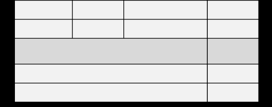

সমন্বিত ৯ ব্যাংক ২ আর্থিক প্রতিষ্ঠান-এর (সিনিয়র অফিসার): ২০২৫
১০টি
সংকলিত
Part 1: প্রামাণ্য ইন্টারেক্টিভ রিভিশন নোট ও সূত্রাবলি
১. বাংলা ভাষার উৎপত্তি, ধ্বনিতত্ত্ব ও ব্যাকরণের চার ভিত্তি
বাংলা ভাষা ইন্দো-ইউরোপীয় ভাষা পরিবারের শতম শাখার অন্তর্ভুক্ত। প্রাচীন ভারতীয় আর্যভাষা বিবর্তিত হয়ে প্রাকৃত (মাগধী/গৌড়ী) এবং অপভ্রংশের মাধ্যমে আনুমানিক ৭ম শতকে বাংলা ভাষার রূপ ধারণ করে। ড. মুহম্মদ শহীদুল্লাহর মতে এর উৎপত্তি ৬৪৭ খ্রিস্টাব্দে এবং সুনীতিকুমার চট্টোপাধ্যায়ের মতে ৯৫০ খ্রিস্টাব্দে।
ব্যাকরণিক শাখা
আলোচ্য বিষয়সমূহ
বিগত পরীক্ষার গুরুত্বপূর্ণ প্রয়োগ
ধ্বনিতত্ত্ব (Phonology)
বাগ্যন্ত্র, ধ্বনি, বর্ণ, উচ্চারণ স্থান, সন্ধি, ণ-ত্ব ও ষ-ত্ব বিধান
'সন্ধি' ও 'ণ-ত্ব বিধান' ব্যাকরণের ধ্বনিতত্ত্বে আলোচিত হয়।
রূপতত্ত্ব বা শব্দতত্ত্ব (Morphology)
শব্দ গঠন, উপসর্গ, অনুসর্গ, প্রত্যয়, সমাস, বচন, লিঙ্গ, পদ
'উপসর্গ' ও 'সমাস' শব্দতত্ত্বের আলোচ্য বিষয়।
বাক্যতত্ত্ব (Syntax)
বাক্যের গঠন, পদক্রম, বাচ্য, বিরামচিহ্ন, বাক্য সংকোচন ও কারক
'কারক' ও 'বাচ্য' বাক্যতত্ত্বে আলোচিত হয়।
অর্থতত্ত্ব (Semantics)
মুখ্যার্থ, গৌণার্থ, সমার্থক শব্দ, বিপরীতার্থক শব্দ
শব্দের অন্তর্নিহিত অর্থের পরিবর্তন অর্থতত্ত্বে আলোচিত হয়।
📌 স্বরধ্বনি ও ব্যঞ্জনধ্বনির মৌলিক নিয়ম
মৌলিক স্বরধ্বনি: ৭টি (অ, আ, ই, উ, এ, ও, অ্যা)।
যৌগিক স্বরজ্ঞাপক বর্ণ: ২টি (ঐ = ও + ই, ঔ = ও + উ)।
মানুষের মনোভাব প্রকাশক কণ্ঠ নিঃসৃত অথর্বহ ধ্বনি সমষ্টিই হলো-
ব্যাখ্যা ও সঠিক উত্তর দেখুন
সঠিক উত্তর: (গ) ভাষা
ব্যাখ্যা: গলনালি, মুখবিবর, কণ্ঠ, জিভ, তালু, দাঁত, নাক প্রভৃতি দিয়ে মানুষ নানা রকম ধ্বনি তৈরি করে। এক বা একাধিক ধ্বনি দিয়ে তৈরি হয়— শব্দ। শব্দের গুচ্ছ দিয়ে বাক্য গঠিত হয়। নিদির্ষ্ট পরিবেশে মানুষের বস্তু ও ভাবের প্রতীক— শব্দ। [তথ্যসূত্র. নবম- দশম শ্রেণির ব্যাকরণ বই] বাক্য হলো ভাষার মূল উপকরণ। কেননা, একটি সম্পূর্ণ বাক্যই ভাষার প্রাণ। বাক্য দিয়ে মানুষ মনের ভাব আদান-প্রদান করে। মনের ভাব প্রকাশক এসব বাক্যের সমষ্টিকে বলে ভাষা। অন্য কথায়, মানুষের মুখে উচ্চারিত অথের্বাধক ও মনোভাব প্রকাশক ধ্বনিসমষ্টিকে বলে—ভাষা। ভাষা— ভাবের উচ্চারণ। ব্যাকরণ ও ভাষার মধ্যে আগে সৃষ্টি হয়েছে— ভাষা।
ব্যাখ্যা: ভাষা ছাড়া মানুষ পরস্পরের সাথে ভাব প্রকাশ করতে পারত না, তাই সমাজ জীবনও গড়ে উঠত না। অথার্ৎ ভাষার প্রধান ও মৌলিক কাজ হলো যোগাযোগ স্থাপন করা।
প্রশ্ন ৮ইসলামী ব্যাংক বাংলাদেশ লিমিটেড-এর ট্রেইনি অ্যাসিস্ট্যান্ট অফিসার (ক্যাশ): ২০২৫
ব্যবহারকারীর দিক দিয়ে বাংলা ভাষার অবস্থান কততম?
ব্যাখ্যা ও সঠিক উত্তর দেখুন
সঠিক উত্তর: (খ) সপ্তম
ব্যাখ্যা: বৈশ্বিক ভাষাচিত্র ২০২৫ মোতাবেক, ভাষাভাষী জনসংখ্যার দিক দিয়ে বাংলা ভাষার অবস্থান— ৭ম (প্রথম: ইংরেজি)। তবে মাতৃভাষা অনুসারে বিশ্বে বাংলা ভাষার অবস্থান ৫ম (প্রথম: মান্দারিন)।
প্রশ্ন ৯৪৯তম বিসিএস (শিক্ষা: বিষয়ভিত্তিক বাংলা)
প্রথম বাংলা ব্যাকরণের রচয়িতা কোন দেশের নাগরিক ছিলেন?
ব্যাখ্যা ও সঠিক উত্তর দেখুন
সঠিক উত্তর: (গ) পতুর্গাল
ব্যাখ্যা: এই প্রশ্নের বিশদ তথ্য ও প্রাসঙ্গিক সূত্রাবলি অধ্যায়ের শুরুতে দেওয়া রিভিশন নোট ও স্কেচনোটে অন্তর্ভুক্ত রয়েছে।
প্রশ্ন ১০বাংলাদেশ রেলওয়ের ট্রেন কন্ট্রোলার: ২০২৬
বাংলা ব্যাকরণ প্রথম কোন ভাষায় লেখা হয়েছে?
ব্যাখ্যা ও সঠিক উত্তর দেখুন
সঠিক উত্তর: (খ) পতুির্গজ
ব্যাখ্যা: এই প্রশ্নের বিশদ তথ্য ও প্রাসঙ্গিক সূত্রাবলি অধ্যায়ের শুরুতে দেওয়া রিভিশন নোট ও স্কেচনোটে অন্তর্ভুক্ত রয়েছে।
প্রশ্ন ১১৪৭তম বিসিএস
মনোয়েল দ্যা আসসুম্পসাঁও অভিধান প্রকাশের আগে কত বছর ধরে শব্দ সংগ্রহ করেন?
ব্যাখ্যা ও সঠিক উত্তর দেখুন
সঠিক উত্তর: (গ) ৯-১০ বছর
ব্যাখ্যা: প্রথম বাংলা ব্যাকরণ (Vocabulario em idioma Bengalla, e Partuguez dividido em duas partes) রচনা হয়— ১৭৪৩ সালে পতুির্গজ ভাষায়। এর লেখক ছিলেন— মনোএল দ্য আসসুম্পসাঁউ। তিনি গ্রন্থটির রচনার জন্য ৯-১০ বছর ধরে শব্দ সংগ্রহ করেছেন। বাংলা ভাষার প্রথম ব্যাকরণবিদ— মনোএল দ্য আসসুম্পসাঁউ। ইংরেজি ভাষায় প্রথম পূণার্ঙ্গ বাংলা ব্যাকরণ রচনা করেন— ব্রাসি হ্যালহেড। বইটির নাম— এ গ্রামার অব দি বেঙ্গল ল্যাঙ্গুয়েজ। বইটি প্রকাশিত হয়— ১৭৭৮ সালে। সবর্প্রথম বাংলা টাইপ সহযোগে বাংলা মুদ্রণ করেন— নাথানিয়েল ব্রাসি হ্যালহেড। প্রথম বাঙালি হিসেবে বাংলা ভাষায় ব্যাকরণ রচনা করেন— রাজা রামমোহন রায়। তাঁর রচিত বাংলা ব্যাকরণে নাম— গৌড়ীয় ব্যাকরণ (১৮৩৩)। পাণিনি ছিলেন— একজন বৈয়াকরণবিদ।
প্রশ্ন ১২৪৭তম বিসিএস
গৌড়ী প্রাকৃত বলতে বোঝায়-
ব্যাখ্যা ও সঠিক উত্তর দেখুন
সঠিক উত্তর: (ক) গৌড় অঞ্চলের মুখের ভাষা
ব্যাখ্যা: গৌড়ী প্রাকৃত বলতে গৌড় অঞ্চলের মুখের সাধারণ ভাষাকে বোঝায়। এটি প্রাচীন ভারতের গৌড় অঞ্চলে প্রচলিত একটি মুখের ভাষা ছিল, যা সাধারণ মানুষের দৈনন্দিন যোগাযোগের মাধ্যম ছিল। এই ভাষা কোনো সুনিদির্ষ্ট ব্যাকরণিক রীতি অনুসরণ করত না। অনেক ভাষাবিদের মতে, গৌড়ী প্রাকৃত থেকেই বাংলা ভাষার উদ্ভব হয়েছে। ব্যাকরণ ও বাংলা ব্যাকরণ.
প্রশ্ন ১৩বাংলাদেশ সরকারী কমর্ কমিশন-এর আইন, বিচার ও সংসদ বিষয়ক মন্ত্রণালয় - লেজিসলেটিভ ও সংসদ বিষয়ক বিভাগ - সহকারী সচিব (ড্রাফটিং) (৯ম গ্রেড): ২০২৬
ভাষার সংবিধান কোনটি?
ব্যাখ্যা ও সঠিক উত্তর দেখুন
সঠিক উত্তর: (ঘ) ব্যাকরণ
ব্যাখ্যা: ভাষার সংবিধান হলো ব্যাকরণ। শব্দের ক্ষুদ্রতম একক হলো ধ্বনি। সমাস ভাষাকে সংক্ষেপ করে।
প্রশ্ন ১৪৪৭তম বিসিএস
বাংলা একাডেমির 'আধুনিক বাংলা অভিধানে'র সম্পাদক কে?
ব্যাখ্যা ও সঠিক উত্তর দেখুন
সঠিক উত্তর: (ঘ) বিকল্প ৪
ব্যাখ্যা: এই প্রশ্নের বিশদ তথ্য ও প্রাসঙ্গিক সূত্রাবলি অধ্যায়ের শুরুতে দেওয়া রিভিশন নোট ও স্কেচনোটে অন্তর্ভুক্ত রয়েছে।
প্রশ্ন ১৫বাংলাদেশ বেসামরিক বিমান চলাচল কতৃর্পক্ষ (নিরাপত্তা কর্মকর্তা): ২০২৫
ভাষার প্রকৃতি নিয়ে আলোচনা করে-
ব্যাখ্যা ও সঠিক উত্তর দেখুন
সঠিক উত্তর: (গ) ব্যাকরণ
ব্যাখ্যা: ব্যাকরণ ভাষার বিজ্ঞানসম্মত বিশেল্লষণের শাস্ত্র। অথার্ৎ ব্যাকরণের প্রধান কাজ ভাষার বিশেল্লষণ। ব্যাকরণে ভাষার প্রকৃতি ও স্বরূপ নিয়ে আলোচনা করা হয়। ব্যাকরণের কাজ— ভাষার অভ্যন্তরীণ শৃঙ্খলা আবিষ্কার করা। ব্যাকরণ ভাষাকে— বণর্না করে। বাংলা ভাষারীতি.
ব্যাখ্যা: লেখ্য ভাষার রীতি তিন প্রকার। যথা: কাব্য রীতি, সাধু রীতি এবং প্রমিত রীতি। বিশ শতকের সূচনায় কলকাতার শিক্ষিত লোকের কথ্য ভাষাকে লেখ্য রীতির আদশর্ হিসেবে চালু করার চেষ্টা হয়। এটি তখন 'চলিত রীতি' নামে পরিচিতি পায়। একুশ শতকের সূচনা নাগাদ এই চলিত রীতিরই নতুন নাম হয় 'প্রমিত রীতি'। এটি 'মান রীতি' নামেও পরিচিত। এই রীতিতে ক্রিয়া, সবর্নাম, অনুসগর্ প্রভৃতি শ্রেণির শব্দ হ্রস্ব হয় এবং তৎসম শব্দের ব্যবহার অপেক্ষাকৃত কমে যাওয়ায় এ ভাষা তুলনামূলক সবর্জনগ্রাহ্য, সহজ-সরল ও স্পষ্ট হয়। বতর্মানে বাংলাদেশ, পশ্চিমবঙ্গ ও ত্রিপুরায় যাবতীয় দাপ্তরিক কাজ, বিদ্যাচচার্, সাংবাদিকতা ও যোগাযোগের ভাষা হিসেবে প্রমিত রীতি লেখ্য বাংলা ভাষার প্রধান রীতিতে পরিণত হয়েছে।
প্রশ্ন ১৭৪৮তম বিসিএস
শুদ্ধ বাক্য কোনটি?
ব্যাখ্যা ও সঠিক উত্তর দেখুন
সঠিক উত্তর: (ঘ) সারা দেশে দিবসটি উদ্যাপন করা হবে
ব্যাখ্যা: প্রশ্নে প্রদত্ত অপশনসমূহের মধ্যে শুদ্ধ অপশন 'ঘ'। অপশন 'ক' তে সারা দেশব্যাপী বাহুল্যজনিত অপপ্রয়োগ। অপশন 'খ' ও অপশন 'গ'-তে 'উদ্যাপন' শব্দটির পরিবতের্ 'উদ্যাপন' হবে। অথার্ৎ শুদ্ধ বাক্য: সারা দেশে দিবসটি উদ্যাপন করা হবে।
ব্যাখ্যা: এই প্রশ্নের বিশদ তথ্য ও প্রাসঙ্গিক সূত্রাবলি অধ্যায়ের শুরুতে দেওয়া রিভিশন নোট ও স্কেচনোটে অন্তর্ভুক্ত রয়েছে।
প্রশ্ন ১৯৪৮তম বিসিএস
কোন বানানটি প্রমিত?
ব্যাখ্যা ও সঠিক উত্তর দেখুন
সঠিক উত্তর: (গ) পশ্চাদ্ভূমি
ব্যাখ্যা: বাংলা একাডেমি বাংলা অভিধান অনুযায়ী প্রমিত বানান হলো 'পশ্চাদ্ভূমি'। অন্য অপশনের পশ্চাদপদ্, পশ্চাৎগামী এবং পশ্চাৎবতীর্ শব্দ তিনটির প্রমিত বানান যথাক্রমে: পশ্চাৎপদ, পশ্চাদগামী এবং পশ্চাদবতীর্।
ব্যাখ্যা: নবম-দশম শ্রেণির পুরাতন ব্যাকরণ অনুসারে 'কারক' শব্দতত্ত্ব বা রূপতত্ত্বের আলোচ্য বিষয়। নবম-দশম শ্রেণির বাংলা ভাষার ব্যাকরণ ও নিমিির্ত অনুসারে 'কারক' বাক্যতত্ত্বের আলোচ্য বিষয়।
প্রশ্ন ২১বাংলাদেশ কেমিক্যাল ইন্ডাস্ট্রিজ কর্পোরেশন (BCIC) সহকারী প্রশাসনিক কর্মকর্তা: ২০২৫
'সমাস' ব্যাকরণের কোন অংশে আলোচিত হয়?
ব্যাখ্যা ও সঠিক উত্তর দেখুন
সঠিক উত্তর: (খ) রূপতত্ত্বে
ব্যাখ্যা: এই প্রশ্নের বিশদ তথ্য ও প্রাসঙ্গিক সূত্রাবলি অধ্যায়ের শুরুতে দেওয়া রিভিশন নোট ও স্কেচনোটে অন্তর্ভুক্ত রয়েছে।
প্রশ্ন ২২বাংলাদেশ রেলওয়ের ট্রেন কন্ট্রোলার: ২০২৬
'সন্ধি' ব্যাকরণের কোন অংশে আলোচিত হয়?
ব্যাখ্যা ও সঠিক উত্তর দেখুন
সঠিক উত্তর: (খ) ধ্বনিতত্ত্ব
ব্যাখ্যা: এই প্রশ্নের বিশদ তথ্য ও প্রাসঙ্গিক সূত্রাবলি অধ্যায়ের শুরুতে দেওয়া রিভিশন নোট ও স্কেচনোটে অন্তর্ভুক্ত রয়েছে।
প্রশ্ন ২৩বাংলাদেশ রেলওয়ের ট্রেন এক্সামিনার: ২০২৬
'বাগধারা' কোথায় আলোচিত হয়?
ব্যাখ্যা ও সঠিক উত্তর দেখুন
সঠিক উত্তর: (ক) ধ্বনিতত্ত্বে
ব্যাখ্যা: বাংলা ব্যাকরণের আলোচ্য বিষয়— ৪টি। বাগধারা অথর্তত্ত্বে আলোচনা করা হয়। ক. ধ্বনিতত্ত্ব (Phonology) বাগ্যন্ত্র, বাগ্যন্ত্রের উচ্চারণ-প্রক্রিয়া, ধ্বনির বিন্যাস, স্বর ও ব্যঞ্জনধ্বনির বৈশিষ্ট্য, ধ্বনিদল প্রভৃতি। [তথ্যসূত্র. নবম-দশম শ্রেণির বাংলা ভাষার ব্যাকরণ ও নিমিির্ত] অথবা— বণর্, সন্ধি, ণ-ত্ব বিধান, ষ-ত্ব বিধান, ধ্বনি পরিবতর্ন ও লোপ, বণের্র বিন্যাস। খ. শব্দতত্ত্ব বা রূপতত্ত্ব (Morphology) রূপতত্ত্বে শব্দ ও তার উপাদান নিয়ে আলোচনা করা হয়। এই আলোচনায় বিশেষ্য, সবর্নাম, বিশেষণ, ক্রিয়া, ক্রিয়াবিশেষণ ইত্যাদি স্থান পায়। বিশেষ গুরুত্ব পায় শব্দনিমার্ণ ও পদনিমার্ণ প্রক্রিয়া। [তথ্যসূত্র. নবম-দশম শ্রেণির বাংলা ভাষার ব্যাকরণ ও নিমিির্ত] অথবা— লিঙ্গ, সমাস, কারক, বচন, ধাতু, সংখ্যাবাচক পদ, পদাশ্রিত নিদের্শক, দ্বিরুক্তি, ক্রিয়া, কাল, পুরুষ, উপসগর্, পদ, প্রকৃতি ও প্রত্যয়, অনুসগর্। গ. বাক্যতত্ত্ব (Syntax) কারক বিশেল্লষণ, বাক্যের যোগ্যতা, যতিচিহ্ন, পদক্রম, বাচ্য, উক্তি ও বাক্য সংক্রান্ত সকল বিষয়, পদের রূপ পরিবতর্ন, বাক্যতত্ত্ব। ঘ. অথর্তত্ত্ব (Semantics) বিপরীত শব্দ, প্রতিশব্দ, শব্দজোড়, বাগধারা প্রভৃতি। এছাড়া শব্দ, বর্গ ও বাক্যের ব্যঞ্জনা নিয়ে আলোচনা। [তথ্যসূত্র. নবম-দশম শ্রেণির বাংলা ভাষার ব্যাকরণ ও নিমিির্ত] অথবা— শব্দ ও বাক্যের অথির্বচার, বিপরীতাথর্ক, মুখ্যাথর্ ও গৌণাথর্। সাধু ও চলিত রীতির পাথর্ক্য.
ব্যাখ্যা: এই প্রশ্নের বিশদ তথ্য ও প্রাসঙ্গিক সূত্রাবলি অধ্যায়ের শুরুতে দেওয়া রিভিশন নোট ও স্কেচনোটে অন্তর্ভুক্ত রয়েছে।
প্রশ্ন ৩১উপানুষ্ঠানিক শিক্ষা ব্যুরো (অফিস সহকারী কাম কম্পিউটার মুদ্রাক্ষরিক): ২০২৫
কোনটি সাধু ভাষার বৈশিষ্ট্য?
ব্যাখ্যা ও সঠিক উত্তর দেখুন
সঠিক উত্তর: (ক) গুরু-গম্ভীর
ব্যাখ্যা: সাধু রীতি চলিত রীতি পদবিন্যাস সুনিয়ন্ত্রিত ও সুনিদির্ষ্ট। চলিত রীতি পরিবতর্নশীল। সাধু ভাষা বা সাধু রীতির গদ্য এক প্রকার আভিজাত্য ও গাম্ভীযের্র অধিকারী। চলিত রীতির গদ্য কৃত্রিমতা বজির্ত এবং মানুষের মনোভাব প্রকাশের জন্য অপেক্ষাকৃত বেশি উপযোগী। সাধু ভাষায় তৎসম বা সংস্কৃত শব্দের প্রভাব বেশি। চলিত ভাষায় তদ্ভব, দেশি ও বিদেশি শব্দের প্রাধান্য। সাধু ভাষা বা সাধু ভাষারীতির গদ্য নাটকের সংলাপ ও বক্তৃতার অনুপযোগী। এ রীতি নাটকের সংলাপ ও বক্তৃতায় উপযোগী। এ রীতিতে সবর্নাম, ক্রিয়াপদ, অনুসগর্ ইত্যাদির পূণার্ঙ্গরূপ (দীর্ঘতর) (বিশেষ গঠন পদ্ধতি) ব্যবহৃত হয়। এ রীতিতে সবর্নাম, ক্রিয়াপদ, অনুসগর্ ইত্যাদির সংক্ষিপ্ত (হ্রস্বতর) (পরিবতির্ত ও সহজতর রূপ) লাভ করে।
প্রশ্ন ৩২পোস্টমাস্টার জেনারেল এর কার্যালয় উত্তরাঞ্চল, রাজশাহী-এর পোস্টম্যান: ২০২৬
সাধু ও চলিত রীতি বাংলা ভাষার কোন রূপে রয়েছে?
ব্যাখ্যা ও সঠিক উত্তর দেখুন
সঠিক উত্তর: (ক) লেখ্য
ব্যাখ্যা: এই প্রশ্নের বিশদ তথ্য ও প্রাসঙ্গিক সূত্রাবলি অধ্যায়ের শুরুতে দেওয়া রিভিশন নোট ও স্কেচনোটে অন্তর্ভুক্ত রয়েছে।
প্রশ্ন ৩৩৩৯তম, ১৬তম ও ১৫তম বিসিএস; বাংলাদেশ রেলওয়ে (টিকেট কালেক্টর): ২০২৩; গ্রামীণ ব্যাংক (শিক্ষানবিস অফিসার): ২০২৫
সাধু ভাষা ও চলিত ভাষার পাথর্ক্য-
ব্যাখ্যা ও সঠিক উত্তর দেখুন
সঠিক উত্তর: (খ) ক্রিয়াপদ ও সবর্নাম পদের রূপে
ব্যাখ্যা: এই প্রশ্নের বিশদ তথ্য ও প্রাসঙ্গিক সূত্রাবলি অধ্যায়ের শুরুতে দেওয়া রিভিশন নোট ও স্কেচনোটে অন্তর্ভুক্ত রয়েছে।
ব্যাখ্যা: সাধু ও চলিত ভাষার পাথর্ক্য- ক্রিয়াপদ ও সবর্নাম পদের রূপে। চলিত ভাষায় রূপ সংক্ষিপ্ত হয়- অনুসগের্র। সাধু ও চলিত রীতিতে অভিন্ন রূপ ব্যবহৃত হয়- অব্যয় পদের। সাধু রীতিতে দীর্ঘ বা পূণার্ঙ্গ রূপ হয় না- অব্যয় পদের।
ব্যাখ্যা: এই প্রশ্নের বিশদ তথ্য ও প্রাসঙ্গিক সূত্রাবলি অধ্যায়ের শুরুতে দেওয়া রিভিশন নোট ও স্কেচনোটে অন্তর্ভুক্ত রয়েছে।
প্রশ্ন ৩৭৪৯তম বিসিএস (শিক্ষা: বিষয়ভিত্তিক বাংলা)
অনেকক্ষেত্রে বাগাড়ম্বরশাসিত ভাষারূপ কোনটি?
ব্যাখ্যা ও সঠিক উত্তর দেখুন
সঠিক উত্তর: (গ) সাধু ভাষা
ব্যাখ্যা: সাধু ভাষা হলো বাংলা ভাষার সেই রূপ, যেখানে বাক্যগঠন ও শব্দচয়ন প্রাচীন, ভারী এবং প্রায়ই আড়ম্বরপূর্ণ বা বাগাড়ম্বরশাসিত হয়। এ ভাষার মূল বৈশিষ্ট্য হলো গাম্ভীযর্, জটিলতা ও অলঙ্কার প্রবণতা।
ব্যাখ্যা: কিছু গুরুত্বপূর্ণ শব্দের সাধু ও চলিত রূপ: সাধু ভাষার শব্দ চলিত ভাষার শব্দ সাধু ভাষার শব্দ চলিত ভাষার শব্দ সাধু ভাষার শব্দ চলিত ভাষার শব্দ প্রভাত ভোর নৌকা নৌকো এরূপ এমন দ্বিপ্রহর দুপুর কাস্ত্মে কাঁচি নিকটে কাছে স্বণর্ সোনা মৃত্তিকা মাটি সহিত সঙ্গে/সাথে বন্য বুনো যদ্যপি যদিও ভেঙে ভাঙিয়া জোসনা/জোৎল্লা জোছনা শুষ্ক/ শুকনা শুকনো তাঁহারা/ উহারা তাঁরা/ওঁরা বাংলা বানানের নিয়ম ও বাক্য শুদ্ধি.
প্রশ্ন ৪৩৪৭তম বিসিএস
১৯৩৬ সালে কলিকাতা বিশ্ববিদ্যালয়ের বানান সংস্কারের মূল উদ্দেশ্য ছিল-
ব্যাখ্যা ও সঠিক উত্তর দেখুন
সঠিক উত্তর: (গ) বানানের নিয়ম প্রণয়ন করা
ব্যাখ্যা: উনিশ শতকের গোড়া থেকে বাংলা গদ্যরচনা আরম্ভ হলে বাংলা বানানে নানা বিশৃঙ্খলা দেখা দিতে থাকে। রবীন্দ্রনাথ ঠাকুর এ ব্যাপারটি অনুধাবন করে একটি বানান-রীতি প্রণয়নের জন্য ১৯৩৫ খ্রিস্টাব্দে কলকাতা বিশ্ববিদ্যালয়কে অনুরোধ করেন। শরৎচন্দ্র চট্টোপাধ্যায় এ প্রস্ত্মাবকে সমথর্ন জানান। এই পরিপ্রেক্ষিতে কলকাতা বিশ্ববিদ্যালয় 'কলকাতা বিশ্ববিদ্যালয় বানান সংস্কার সমিতি' গঠন করে। ১৯৩৬ সালের ৮ই মে কলিকাতা বিশ্ববিদ্যালয় কতৃর্ক বানান রীতি প্রবতর্ন করা হয়।
ব্যাখ্যা: বাংলা একাডেমির আধুনিক বাংলা অভিধান মোতাবেক, 'বিদ্যোৎসাহী' (বিদ্যা + উৎসাহী) শব্দের অথর্ শিক্ষার প্রসারে উৎসাহদাতা। শব্দটির স্ত্রী লিঙ্গ- বিদ্যোৎসাহিনী।
প্রশ্ন ৪৬বাংলাদেশ সরকারী কমর্ কমিশন (পিএসসি)-এর (মেডিক্যাল অফিসার): ২০২৫
কোনটি শুদ্ধ?
ব্যাখ্যা ও সঠিক উত্তর দেখুন
সঠিক উত্তর: (খ) যুধিষ্ঠির
ব্যাখ্যা: বাংলা একাডেমির আধুনিক বাংলা অভিধান মোতাবেক, অপশনসমূহের শুদ্ধ বানান: কষর্ণ, যুধিষ্ঠির, কিষান, অভিলাষ।
প্রশ্ন ৪৭ইসলামী ব্যাংক বাংলাদেশ পিএলসি (মেসেঞ্জার কাম গাডর্): ২০২৫
কোন বানানটি শুদ্ধ?
ব্যাখ্যা ও সঠিক উত্তর দেখুন
সঠিক উত্তর: (খ) সমীচীন
ব্যাখ্যা: এই প্রশ্নের বিশদ তথ্য ও প্রাসঙ্গিক সূত্রাবলি অধ্যায়ের শুরুতে দেওয়া রিভিশন নোট ও স্কেচনোটে অন্তর্ভুক্ত রয়েছে।
ব্যাখ্যা: বাংলা একাডেমির আধুনিক বাংলা অভিধান মোতাবেক, শুদ্ধ বানান: নিশীথিনী। আরও কিছু গুরুত্বপূর্ণ শব্দের শুদ্ধ বানান: পুরস্কার/ তিরস্কার/ নমস্কার, পরিষ্কার, আসত্তি, পুণ্য, ভুবন, ত্রিভুজ, ভাগীরথী, ঝঞ্ঝাট, গৃহস্থ, দূরীভূত, মনীষী, পিপীলিকা, দ্বন্দ্ব, আকাঙ্ক্ষা, পণ্য।
প্রশ্ন ৮১বাংলাদেশ রেলওয়ের ট্রেন কন্ট্রোলার: ২০২৬
কোন বানানটি শুদ্ধ-
ব্যাখ্যা ও সঠিক উত্তর দেখুন
সঠিক উত্তর: (ক) কনীনিকা
ব্যাখ্যা: কনীনিকা শব্দের অথর্ চোখের তারা।
প্রশ্ন ৮২মাদকদ্রব্য নিয়ন্ত্রণ অধিদপ্তর-এর (স্টোর কিপার): ২০২৫; সরকারী প্রাথমিক বিদ্যালয় সহকারী শিক্ষক: ২০১৯
কোন শব্দটি শুদ্ধ বানানে লেখা হয়েছে?
ব্যাখ্যা ও সঠিক উত্তর দেখুন
সঠিক উত্তর: (গ) ত্রিভুজ
ব্যাখ্যা: কিছু গুরুত্বপূর্ণ শব্দের শুদ্ধ বানান: পুরস্কার/ তিরস্কার/ নমস্কার, পরিষ্কার, আসত্তি, পুণ্য, ভুবন, ত্রিভুজ, ভাগীরথী, ঝঞ্ঝাট, গৃহস্থ, দূরীভূত, মনীষী, পিপীলিকা, নিশীথিনী, দ্বন্দ্ব, আকাঙ্ক্ষা, পণ্য।
প্রশ্ন ৮৩৫০তম বিসিএস
কোন বানানটি শুদ্ধ?
ব্যাখ্যা ও সঠিক উত্তর দেখুন
সঠিক উত্তর: (খ) কথোপকথন
ব্যাখ্যা: কথোপকথন শব্দটির অথর্ হলো দুই বা ততোধিক ব্যক্তির মধ্যে আলাপ-আলোচনা বা সংলাপ। কথা + উপকথন = কথোপকথন (গুণ সন্ধির নিয়মে আ + উ = ও হয়েছে)। প্রশ্নে বণির্ত অন্য শব্দসমূহের শুদ্ধ রূপ: নিশীথিনী, পিপীলিকা ও সমীচীন।
প্রশ্ন ৮৪সমন্বিত ৬ ব্যাংক-এর অফিসার (ক্যাশ): ২০২৬
কোন বানানটি শুদ্ধ?
ব্যাখ্যা ও সঠিক উত্তর দেখুন
সঠিক উত্তর: (গ) রূপায়ণ
ব্যাখ্যা: রূপায়ণ শব্দের অথর্ মূতির্ বা আকার দান, রূপদান, বাস্ত্মবে পরিণতকরণ।
প্রশ্ন ৮৫বাংলাদেশ সরকারী কমর্ কমিশন-এর মৎস্য ও প্রাণিসম্পদ মন্ত্রণালয় - সহকারী মৎস্য কর্মকর্তা ও সামুদ্রিক মৎস্য শাখার পরিদশর্ক (নন ক্যাডার ১০ম গ্রেড) (সেট : ৩): ২০২৬
কোন বানানটি শুদ্ধ?
ব্যাখ্যা ও সঠিক উত্তর দেখুন
সঠিক উত্তর: (গ) কৃষিজীবী
ব্যাখ্যা: এই প্রশ্নের বিশদ তথ্য ও প্রাসঙ্গিক সূত্রাবলি অধ্যায়ের শুরুতে দেওয়া রিভিশন নোট ও স্কেচনোটে অন্তর্ভুক্ত রয়েছে।
ব্যাখ্যা: এই প্রশ্নের বিশদ তথ্য ও প্রাসঙ্গিক সূত্রাবলি অধ্যায়ের শুরুতে দেওয়া রিভিশন নোট ও স্কেচনোটে অন্তর্ভুক্ত রয়েছে।
প্রশ্ন ৯০আইন, বিচার ও সংসদ বিষয়ক মন্ত্রণালয়ের সাব-রেজিস্ট্রার: ২০১৬/ SESIP উপজেলা একাডেমিক সুপারভাইজার: ২০১৫; জাতীয় রাজস্ব বোর্ড (অফিস সহায়ক): ২০২৪; সমন্বিত ৫ ব্যাংক ও ১ আর্থিক প্রতিষ্ঠান (অফিসার-ক্যাশ): ২০২৫
কোনটি শুদ্ধ বানান?
ব্যাখ্যা ও সঠিক উত্তর দেখুন
সঠিক উত্তর: (খ) শারীরিক
ব্যাখ্যা: এই প্রশ্নের বিশদ তথ্য ও প্রাসঙ্গিক সূত্রাবলি অধ্যায়ের শুরুতে দেওয়া রিভিশন নোট ও স্কেচনোটে অন্তর্ভুক্ত রয়েছে।
প্রশ্ন ৯১বাংলাদেশ আনসার ও গ্রাম প্রতিরক্ষা বাহিনী (অফিস সহকারী কাম কম্পিউটার মুদ্রাক্ষরিক): ২০২৫
কোন বানানটি শুদ্ধ?
ব্যাখ্যা ও সঠিক উত্তর দেখুন
সঠিক উত্তর: (ক) স্বায়ত্তশাসন
ব্যাখ্যা: এই প্রশ্নের বিশদ তথ্য ও প্রাসঙ্গিক সূত্রাবলি অধ্যায়ের শুরুতে দেওয়া রিভিশন নোট ও স্কেচনোটে অন্তর্ভুক্ত রয়েছে।
প্রশ্ন ৯২ভূমি রেকডর্ ও জরিপ অধিদপ্তর (চেইনম্যান): ২০২৫
শুদ্ধ শব্দগুছ শনাক্ত করুন-
ব্যাখ্যা ও সঠিক উত্তর দেখুন
সঠিক উত্তর: (গ) সমীচীন, বাল্মীকি
ব্যাখ্যা: এই প্রশ্নের বিশদ তথ্য ও প্রাসঙ্গিক সূত্রাবলি অধ্যায়ের শুরুতে দেওয়া রিভিশন নোট ও স্কেচনোটে অন্তর্ভুক্ত রয়েছে।
প্রশ্ন ৯৩বাংলাদেশ কেমিক্যাল ইন্ডাস্ট্রিজ কর্পোরেশন (BCIC) এর সহকারী প্রশাসনিক কর্মকর্তা: ২০২৫
নিচের কোনটি ভুল শব্দ?
ব্যাখ্যা ও সঠিক উত্তর দেখুন
সঠিক উত্তর: (ঘ) ব্রহ্ম (ঙ) কোনোটিই নয়
ব্যাখ্যা: এই প্রশ্নের বিশদ তথ্য ও প্রাসঙ্গিক সূত্রাবলি অধ্যায়ের শুরুতে দেওয়া রিভিশন নোট ও স্কেচনোটে অন্তর্ভুক্ত রয়েছে।
প্রশ্ন ৯৪১৮শ বিজেএস প্রাথমিক পরীক্ষা-(সহকারী জজ): ২০২৫
ব্যাখ্যা: এই প্রশ্নের বিশদ তথ্য ও প্রাসঙ্গিক সূত্রাবলি অধ্যায়ের শুরুতে দেওয়া রিভিশন নোট ও স্কেচনোটে অন্তর্ভুক্ত রয়েছে।
প্রশ্ন ৯৬৩৭তম বিসিএস; বাংলাদেশ পল্লী বিদ্যুতায়ন বোর্ড (সহকারী পরিচালক): ২০২৫
নিচের কোন বানানগুচ্ছের সবগুলো বানান অশুদ্ধ?
ব্যাখ্যা ও সঠিক উত্তর দেখুন
সঠিক উত্তর: (ক) নিক্কণ, সূচগ্র, অনুধ্বর্
ব্যাখ্যা: অপশন 'ক' এর সবগুলো বানানই অশুদ্ধ। নিক্কণ, সূচগ্র, অনুধ্বর্ এর শুদ্ধ রূপ হবে- নিক্বণ, সূচ্যগ্র ও অনূধ্বর্। অপশন 'খ' এর ভূঁড়িওয়ালা শব্দের শুদ্ধ বানান হবে ভুঁড়িওয়ালা। অপশন 'গ' এর অনূবর্র শব্দটির শুদ্ধ বানান অনুবর্র। অপশন 'ঘ' এর সবগুলো শব্দের বানান শুদ্ধ।
ব্যাখ্যা: এই প্রশ্নের বিশদ তথ্য ও প্রাসঙ্গিক সূত্রাবলি অধ্যায়ের শুরুতে দেওয়া রিভিশন নোট ও স্কেচনোটে অন্তর্ভুক্ত রয়েছে।
প্রশ্ন ১০৩৪৭তম বিসিএস
'ঐক্যমত' শব্দটি কোন বিবেচনায় অশুদ্ধ নয়?
ব্যাখ্যা ও সঠিক উত্তর দেখুন
সঠিক উত্তর: (ক) মতের ঐক্য - এভাবে সমাসসাধিত ধরলে
ব্যাখ্যা: 'ঐক্যমত' শব্দটি বাংলা ভাষায় একটি সমাসসাধিত শব্দ, যা 'মতের ঐক্য' থেকে গঠিত। এটি একটি তৎপুরুষ সমাস, যেখানে 'মত' (বিশেষ্য) এবং 'ঐক্য' (বিশেষ্য) মিলে 'মতের ঐক্য' বোঝায়, অথার্ৎ 'একই মতামত' বা 'মতৈক্য'। বাংলা ব্যাকরণে সমাসসাধিত এসব একত্রে লেখার প্রচলন রয়েছে। তাই 'ঐক্যমত' শব্দটি সমাসসাধিত হিসেবে বিবেচিত হলে অশুদ্ধ নয়।
প্রশ্ন ১০৪৪৯তম বিসিএস (শিক্ষা: বিষয়ভিত্তিক বাংলা)
'দেবালয়' শব্দটি কোন প্রকার অথাের্রাপের উদাহরণ?
ব্যাখ্যা ও সঠিক উত্তর দেখুন
সঠিক উত্তর: (ক) অথের্র অপকষর্
ব্যাখ্যা: এই প্রশ্নের বিশদ তথ্য ও প্রাসঙ্গিক সূত্রাবলি অধ্যায়ের শুরুতে দেওয়া রিভিশন নোট ও স্কেচনোটে অন্তর্ভুক্ত রয়েছে।
প্রশ্ন ১০৫সমন্বিত ৮ ব্যাংক ও ১ আর্থিক প্রতিষ্ঠান (অফিসার জেনারেল): ২০২৫
অভিধানে কোন শব্দটি আগে বসবে?
ব্যাখ্যা ও সঠিক উত্তর দেখুন
সঠিক উত্তর: (ক) চাঁপা
ব্যাখ্যা: এই প্রশ্নের বিশদ তথ্য ও প্রাসঙ্গিক সূত্রাবলি অধ্যায়ের শুরুতে দেওয়া রিভিশন নোট ও স্কেচনোটে অন্তর্ভুক্ত রয়েছে।
ব্যাখ্যা: শুদ্ধ বানানসমূহ: কৌতূহল, কাঙ্ক্ষিত ও শ্রদ্ধাঞ্জলি।
প্রশ্ন ১০৭৪৭তম বিসিএস
'সে কৌতুক করার কৌতূহল সংবরণ করতে পারল না।'-এই বাক্য কী কারণে ত্রুটিপূর্ণ?
ব্যাখ্যা ও সঠিক উত্তর দেখুন
সঠিক উত্তর: (গ) অথর্ অনুযায়ী শব্দের প্রয়োগ হয়নি
ব্যাখ্যা: বাক্যটিতে ব্যবহৃত 'কৌতূহল' শব্দটিতে অথর্ অনুযায়ী শব্দের প্রয়োগ হয়নি। 'কৌতূহল' শব্দের অথর্ হলো কোনো বিষয়ে জানার আগ্রহ, অনুসন্ধিৎসা। এটি সাধারণত কোনো তথ্য, ঘটনা বা রহস্য বোঝার ইচ্ছাকে নিদের্শ করে। কিন্তু বাক্যে 'কৌতুক করার কৌতূহল' বলতে বোঝায় 'রসিকতা করার আগ্রহ' যা 'কৌতূহল' শব্দের প্রকৃত অথের্র সঙ্গে অসঙ্গতিপূর্ণ। কারণ, কোনো কাজ করার ইচ্ছা প্রকাশের জন্য 'আগ্রহ', 'ইচ্ছা' বা 'প্রবৃত্তি' শব্দের ব্যবহার যথাথর্।
প্রশ্ন ১০৮বাংলাদেশ পরমাণু শক্তি কমিশন-এর (অফিস সহকারী কাম-কম্পিউটার টাইপিস্ট): ২০২৫
'খাটি গাভীর দুধ' ব্যানারে লেখা এই শিরোনামকে অপপ্রয়োগ বলা যায় না কেন?
ব্যাখ্যা ও সঠিক উত্তর দেখুন
সঠিক উত্তর: (ক) খাটি শব্দটি দুধ কে বিশেষায়িত করেছে
ব্যাখ্যা: এই প্রশ্নের বিশদ তথ্য ও প্রাসঙ্গিক সূত্রাবলি অধ্যায়ের শুরুতে দেওয়া রিভিশন নোট ও স্কেচনোটে অন্তর্ভুক্ত রয়েছে।
প্রশ্ন ১০৯৪৭তম বিসিএস
'বিরাট গরু-ছাগলের হাট' ব্যানারে লেখা এই শিরোনামকে অপপ্রয়োগ বলা যায় না কেন?
ব্যাখ্যা ও সঠিক উত্তর দেখুন
সঠিক উত্তর: (ক) বিরাট শব্দটি হাটকে বিশেষিত করছে
ব্যাখ্যা: 'বিরাট' একটি বিশেষণ পদ যা পরবতীর্ বিশেষ্যকে বিশেষিত করে। এখানে 'বিরাট' শব্দটি বিশেষ্য 'হাট' শব্দটিকে বিশেষিত করেছে, সম্বন্ধ পদ 'গরু-ছাগল'-কে নয়। বাংলা বাক্যের গঠন অনুযায়ী, বিশেষণ সাধারণত যে বিশেষ্যকে বিশেষিত করে, তার আগে বা কাছাকাছি অবস্থান করে। এখানে 'বিরাট' শব্দটি হাটের আকার বা পরিমাণের বণর্না করছে, যা ব্যাকরণগতভাবে সঠিক ও অথর্পূর্ণ। তাই এটিকে অপপ্রয়োগ বলা যায় না।
প্রশ্ন ১১০বাংলাদেশ বেসামরিক বিমান চলাচল কতৃর্পক্ষ (নিরাপত্তা কর্মকর্তা): ২০২৫
কোনটি শুদ্ধ?
ব্যাখ্যা ও সঠিক উত্তর দেখুন
সঠিক উত্তর: (খ) সৌজন্য
ব্যাখ্যা: সৌজন্য শব্দটি শুদ্ধ। এর সাথে অতিরিক্ত তা প্রত্যয় ব্যবহারের প্রয়োজন নাই।
প্রশ্ন ১১১৪৯তম বিসিএস
'সত্যকে স্বীকার করতে অনেক ব্যক্তিরাই চায়না।'-এখানে ভুল ঘটেছে-
ব্যাখ্যা ও সঠিক উত্তর দেখুন
সঠিক উত্তর: (ঘ) বিকল্প ৪
ব্যাখ্যা: 'অনেক', 'বহু', 'সব', 'প্রত্যেক', 'প্রতিটি' ইত্যাদি শব্দের পরে সাধারণত একবচন পদ ব্যবহৃত হয়। যেমন: অনেক ছাত্র/অনেক আলেক। 'অনেক' শব্দটি বহুবচন অথর্ প্রকাশ করে। এরপরে 'রা/রাই' ব্যবহার করলে অপ্রয়োজনীয় পুনরাবৃত্তি ঘটে যা বচনের অপপ্রয়োগ। তাই সঠিক হবে 'অনেক ব্যক্তি'। আবার 'নেই/না' বোঝাতে ক্রিয়ার সাথে 'না' শব্দটি সবর্দা আলাদা লিখতে হয়। যেমন: যাবে না, খাবে না, পায় না, চায় না প্রভৃতি। উল্লেখ্য 'নি' শব্দটি ক্রিয়ার সাথে একত্রে বসবে। যেমন: খাইনি, যাইনি, পড়িনি। সুতরাং শুদ্ধ বাক্যটি হবে: 'সত্যকে স্বীকার করতে অনেক ব্যক্তি চায় না'। তাই শুদ্ধ উত্তর: অপশন 'ঘ'।
প্রশ্ন ১১২৫০তম বিসিএস
কোন বাক্যটি প্রয়োগগত দিক থেকে শুদ্ধ?
ব্যাখ্যা ও সঠিক উত্তর দেখুন
সঠিক উত্তর: (গ) আবশ্যক ব্যয়ে কাপর্ণ্য অনুচিত।
ব্যাখ্যা: এই প্রশ্নের বিশদ তথ্য ও প্রাসঙ্গিক সূত্রাবলি অধ্যায়ের শুরুতে দেওয়া রিভিশন নোট ও স্কেচনোটে অন্তর্ভুক্ত রয়েছে।
প্রশ্ন ১১৩বাংলাদেশ সরকারী কমর্ কমিশন-এর আইন, বিচার ও সংসদ বিষয়ক মন্ত্রণালয়- লেজিসলেটিভ ও সংসদ বিষয়ক বিভাগ-সহকারী সচিব (ড্রাফটিং) (৯ম গ্রেড): ২০২৬
শুদ্ধ বাক্য কোনটি?
ব্যাখ্যা ও সঠিক উত্তর দেখুন
সঠিক উত্তর: (খ) তাকে নিবাির্চত করা হয়নি।
ব্যাখ্যা: এই প্রশ্নের বিশদ তথ্য ও প্রাসঙ্গিক সূত্রাবলি অধ্যায়ের শুরুতে দেওয়া রিভিশন নোট ও স্কেচনোটে অন্তর্ভুক্ত রয়েছে।
'সকল শিক্ষকগণ আজ উপস্থিত।' বাক্যটি কোন দোষে দুষ্ট?
ব্যাখ্যা ও সঠিক উত্তর দেখুন
সঠিক উত্তর: (ঘ) বাহুল্য দোষে
ব্যাখ্যা: এই প্রশ্নের বিশদ তথ্য ও প্রাসঙ্গিক সূত্রাবলি অধ্যায়ের শুরুতে দেওয়া রিভিশন নোট ও স্কেচনোটে অন্তর্ভুক্ত রয়েছে।
প্রশ্ন ১১৬বাংলাদেশ টেলিভিশন প্রযোজক: ২০০৬ / মাধ্যমিক বিদ্যালয় সহকারী প্রধান শিক্ষক: ২০০৩ / ৭ম বেসরকারী প্রভাষক নিবন্ধন: ২০১১ / বাংলাদেশ পযর্টন কর্পোরেশন (হিসাব রক্ষণ কর্মকর্তা): ২০২৫
শুদ্ধ বাক্যটি চিহ্নিত করুন-
ব্যাখ্যা ও সঠিক উত্তর দেখুন
সঠিক উত্তর: (ঘ) বিদ্বান মূখর্ অপেক্ষা শ্রেষ্ঠ
ব্যাখ্যা: অশুদ্ধ বাক্য শুদ্ধ বাক্য বাংলাদেশ একটি উন্নতশীল দেশ। বাংলাদেশ একটি উন্নয়নশীল দেশ। িনশ্চয় সংবাদ পেয়েছি। িনশ্চিত সংবাদ পেয়েছি। তিনি আমার বইটি প্রকাশিত করেছেন। তিনি আমার বইটি প্রকাশ করেছেন। কোথায় আমরা একত্রিত হব? কোথায় আমরা একত্র হব? তাকে ল্লেহাশীষ দিও। তাকে ল্লেহাশিস দিও। জ্ঞানী মুখর্ অপেক্ষা শ্রেষ্ঠতর। জ্ঞানী মূখর্ অপেক্ষা শ্রেষ্ঠ। বিদ্বান মূখর্ অপেক্ষা শ্রেষ্ঠতর। বিদ্বান মূখর্ অপেক্ষা শ্রেষ্ঠ।
ব্যাখ্যা: এই প্রশ্নের বিশদ তথ্য ও প্রাসঙ্গিক সূত্রাবলি অধ্যায়ের শুরুতে দেওয়া রিভিশন নোট ও স্কেচনোটে অন্তর্ভুক্ত রয়েছে।
প্রশ্ন ১২৫৪৫তম বিসিএস; বাংলাদেশ পল্লী উন্নয়ন একাডেমি (বাডর্) এর সহকারী পরিচালক: ২০২৫
'ধ্বনি' সম্পকের্ নিচের কোন বাক্যটি সঠিক নয়?
ব্যাখ্যা ও সঠিক উত্তর দেখুন
সঠিক উত্তর: (ক) ধ্বনি দৃশ্যমান (খ) মানুষের ভাষার মূলে আছে কতগুলো ধ্বনি
ব্যাখ্যা: মানুষের ভাষার মূলে আছে কতগুলো ধ্বনি। মানুষের বাগ্যন্ত্রের স্বল্পতম প্রয়াসে উচ্চারিত শব্দের অবিভাজ্য ক্ষুদ্রতম অংশকে ধ্বনি বলে। অন্যকথায়, 'মনের ভাব প্রকাশের জন্য মানুষের মুখনিঃসৃত অথের্বাধক আওয়াজই হলো ধ্বনি'। ধ্বনি দৃশ্যমান নয়, তবে উচ্চারণীয় ও শ্রবণীয়। সুতরাং বলা যায়, 'ধ্বনি দৃশ্যমান' এ কথাটি সত্য নয়। ভাষার ক্ষুদ্রতম একক/ মূল ভিত্তি- ধ্বনি। ধ্বনির লিখিত রূপ/ধ্বনি নিদের্শক চিহ্ন বা প্রতীক হলো 'বণর্'। ধ্বনি দৃশ্যমান নয়, তবে বণর্ দৃশ্যমান।
প্রশ্ন ১২৬৪৯তম বিসিএস (বিশেষ): ২০২৫
ধ্বনি ও বণের্র পাথর্ক্য কোথায়?
ব্যাখ্যা ও সঠিক উত্তর দেখুন
সঠিক উত্তর: (ঘ) ইন্দ্রিয় গ্রাহ্যে
ব্যাখ্যা: ধ্বনি শ্রুতিগ্রাহ্য (শোনা যায়); বণর্ দৃষ্টিগ্রাহ্য (দেখা যায়)। তাই ধ্বনি ও বণের্র পাথর্ক্য ইন্দ্রিয়গ্রাহ্যে।
প্রশ্ন ১২৭সমন্বিত ৫ ব্যাংক ও ১ আর্থিক প্রতিষ্ঠান (অফিসার জেনারেল): ২০২৫; Southeast Bank PLC - Trainee Assistant Officer (Cash): ২০২৫; ইসলামী ব্যাংক বাংলাদেশ লিমিটেড-এর ট্রেইনি অ্যাসিস্ট্যান্ট অফিসার (ক্যাশ): ২০২৫
ভাষার ক্ষুদ্রতম একক কোনটি?

ব্যাখ্যা ও সঠিক উত্তর দেখুন
সঠিক উত্তর: (ঘ) ধ্বনি
ব্যাখ্যা: এই প্রশ্নের বিশদ তথ্য ও প্রাসঙ্গিক সূত্রাবলি অধ্যায়ের শুরুতে দেওয়া রিভিশন নোট ও স্কেচনোটে অন্তর্ভুক্ত রয়েছে।
ব্যাখ্যা: ভাষার মূল উপাদান/ ক্ষুদ্রতম উপাদান— ধ্বনি। বাংলা ভাষায় মৌলিক ধ্বনি রয়েছে— ৩৭টি। মৌলিক ব্যঞ্জনধ্বনি— ৩০টি। ভাষার স্বর বলা হয়— ধ্বনিকে। ভাষার শব্দ গঠিত হয়— ধ্বনির সমন্বয়ে।
প্রশ্ন ১২৯সমন্বিত ৫ ব্যাংক ও ১ আর্থির্ক প্রতিষ্ঠান (অফিসার ক্যাশ): ২০২৫
সন্ধিতে কিসের সংকোচন হয়?
ব্যাখ্যা ও সঠিক উত্তর দেখুন
সঠিক উত্তর: (ঘ) ধ্বনির
ব্যাখ্যা: এই প্রশ্নের বিশদ তথ্য ও প্রাসঙ্গিক সূত্রাবলি অধ্যায়ের শুরুতে দেওয়া রিভিশন নোট ও স্কেচনোটে অন্তর্ভুক্ত রয়েছে।
প্রশ্ন ১৩০মৎস্য ও প্রাণিসম্পদ মন্ত্রণালয় - সহকারী মৎস্য কর্মকর্তা ও সামুদ্রিক মৎস্য শাখার পরিদশর্ক: ২০২৬
'বাগযন্ত্র' ব্যাকরণের কোন অংশের আলোচ্য বিষয়?
ব্যাখ্যা ও সঠিক উত্তর দেখুন
সঠিক উত্তর: (ক) ধ্বনিতত্ত্ব
ব্যাখ্যা: এই প্রশ্নের বিশদ তথ্য ও প্রাসঙ্গিক সূত্রাবলি অধ্যায়ের শুরুতে দেওয়া রিভিশন নোট ও স্কেচনোটে অন্তর্ভুক্ত রয়েছে।
রবীন্দ্রনাথ ঠাকুর শব্দের শুরুতে মাত্রাযুক্ত এ-কার ব্যবহার করতেন কেন?
ব্যাখ্যা ও সঠিক উত্তর দেখুন
সঠিক উত্তর: (ঘ) 'অ্যা' উচ্চারণ বোঝাতে
ব্যাখ্যা: 'এ'-কারের উচ্চারণ ভিন্নতা ('এ' এবং 'এ্যা') নিদের্শকল্পে রবীন্দ্রনাথ 'এ'-কারের মুদ্রণে মাত্রাযুক্ত ও মাত্রাহীন ব্যবহার প্রচলন করেন। শব্দের শুরুতে মাত্রাহীন 'এ' কার হলে 'এ' ধ্বনির উচ্চারণ হবে সংবৃত। আর মাত্রাযুক্ত 'এ' কার হলে 'এ' ধ্বনির উচ্চারণ হবে বিবৃত। যেমন: তিনি লিখতেন "একলা চলো রে", কিন্তু উচ্চারণে 'অ্যাকলা' ধরনের স্বর প্রকাশ পেত। রবীন্দ্রনাথ চেয়েছিলেন লেখার মাধ্যমে উচ্চারণের পাথর্ক্যটি বোঝাতে। তিনি 'এ'-কারে মাত্রা ব্যবহার করে 'অ্যা' ধ্বনির ইঙ্গিত দিয়েছেন। স্বরধ্বনি.
ব্যাখ্যা: রিকসা ˃ রিসকা, লাফ ˃ ফাল ও পিশাচ ˃ পিচাশ প্রভৃতি ধ্বনি বিপযের্য়র উদাহরণ। মনে রাখতে হবে: শব্দের মধ্য হতে বণের্র পরিবতর্ন হবে।] ব্যঞ্জন বিকৃতি শব্দের মধ্য থেকে ধ্বনি রূপ পরিবতর্ন হয়ে নতুন ধ্বনি আসলে ব্যঞ্জনবিকৃত হয়। যেমন: কবাট ˃ কপাট ('ব' ব্যঞ্জনটি পরিবতির্ত হয়ে 'প' হয়েছে) ধোবা ˃ ধোপা ('ব' ব্যঞ্জনটি পরিবতির্ত হয়ে 'প' হয়েছে) ধাইমা ˃ দাইমা ('ধ' ব্যঞ্জনটি পরিবতির্ত হয়ে 'দ' হয়েছে) ধ্বনি বিপযর্য় শব্দের মধ্য থেকে দুটি ব্যঞ্জনবণর্ পরস্পর স্থান পরিবতর্ন করবে। যেমন: রিকসা ˃ রিসকা ('ক' ও 'স' পরস্পর স্থান পরিবতর্ন করেছে), লাফ ˃ ফাল, বাকস ˃ বাসক। পিশাচ ˃ পিচাশ ('শ' ও 'চ' ব্যঞ্জনটি পরস্পর স্থান পরিবতর্ন করেছে)
উচ্চারণের সুবিধার জন্য বা অন্য কোন কারণে শব্দের আদিতে স্বরধ্বনি এলে তাকে বলে-
ব্যাখ্যা ও সঠিক উত্তর দেখুন
সঠিক উত্তর: (ক) Prothesis
ব্যাখ্যা: উচ্চারণের সুবিধার জন্য শব্দের আদিতে স্বরধ্বনি এলে তাকে আদি স্বরাগম (Prothesis) বলে। যেমন: স্কুল ˃ ইস্কুল, স্টেশন ˃ ইস্টিশন, স্পধার্ ˃ আস্পধার্।
প্রশ্ন ১৪৮৪৯তম বিসিএস
কোন ধ্বনি পরিবতর্নটি যথাযথ নয়?
ব্যাখ্যা ও সঠিক উত্তর দেখুন
সঠিক উত্তর: (গ) সংগীত > গীতিকা
ব্যাখ্যা: কোনো শব্দের অন্তগর্ত নাসিক্য ব্যঞ্জন (ঙ, ঞ, ণ, ন, ম) লুপ্ত হয়ে পূবর্বতীর্ স্বরধ্বনিকে অনুনাসিক করে তুললে তাকে নাসিক্যীভবন বলে। যেমন: অঞ্চল > আঁচল, ক্রন্দন > কাঁদা, দন্ত > দাঁত, হংস > হাঁস প্রভৃতি। তবে তৃতীয় অপশনটি (সংগীত > গীতিকা) ধ্বনি পরিবতের্নর কোনো উদাহরণ নয়। মূলশব্দ সংগীত (সম + গীত) একটি সন্ধিজাত শব্দ।
প্রশ্ন ১৪৯সমন্বিত ৬ ব্যাংক-এর অফিসার (ক্যাশ): ২০২৬
কোনটি অপিনিহিতর উদাহরণ?
ব্যাখ্যা ও সঠিক উত্তর দেখুন
সঠিক উত্তর: (ঘ) আইজ
ব্যাখ্যা: এই প্রশ্নের বিশদ তথ্য ও প্রাসঙ্গিক সূত্রাবলি অধ্যায়ের শুরুতে দেওয়া রিভিশন নোট ও স্কেচনোটে অন্তর্ভুক্ত রয়েছে।
প্রশ্ন ১৫০সমন্বিত ৬ ব্যাংক ও ২টি আর্থিক প্রতিষ্ঠান-এর অফিসার (সাধারণ): ২০২৬
'সত্য > সইত্য' কোন ধরনের ধ্বনি পরিবতর্ন?
ব্যাখ্যা ও সঠিক উত্তর দেখুন
সঠিক উত্তর: (ঘ) অপিনিহিতি
ব্যাখ্যা: এই প্রশ্নের বিশদ তথ্য ও প্রাসঙ্গিক সূত্রাবলি অধ্যায়ের শুরুতে দেওয়া রিভিশন নোট ও স্কেচনোটে অন্তর্ভুক্ত রয়েছে।
ব্যাখ্যা: অপিনিহিতিতে পরের 'ই-কার' বা 'উ-কার' আগে উচ্চারিত হবে। যেমন: আজি ˃ আইজ, চারি ˃ চাইর, সত্যি > সইত্য এবং সাধু ˃ সাউধ। মনে রাখতে হবে: 'ই'-কার/'উ'-কারের ব্যাপার।
প্রশ্ন ১৫২৫০তম বিসিএস
একটি স্বরধ্বনির প্রভাবে শব্দে অপর স্বরের পরিবতর্ন ঘটলে তাকে বলে-
ব্যাখ্যা ও সঠিক উত্তর দেখুন
সঠিক উত্তর: (ঘ) স্বরসঙ্গতি
ব্যাখ্যা: একটি স্বরধ্বনির প্রভাবে শব্দে অপর স্বরের পরিবতর্ন ঘটলে তাকে বলে স্বরসঙ্গতি। স্বরসঙ্গতি ০৩ প্রকার। যথা: (ক) প্রগত স্বরসঙ্গতি, (খ) পরাগত স্বরসঙ্গতি এবং (গ) অন্যোন্য স্বরসঙ্গতি। প্রগত স্বরসঙ্গতি প্রথম ধ্বনি (স্বর) স্থির থাকবে, পরের ধ্বনিতে পরিবতর্ন ঘটবে। যথা- মুলা ˃ মুলো, শিকা ˃ শিকে, মিঠা ˃ মিঠে (পরের ধ্বনিতে 'আ'-কার পরিবতির্ত হয়ে 'ও' কার এবং 'এ' কার হয়েছে। প্রথম ধ্বনি স্থির রয়েছে) পরাগত স্বরসঙ্গতি পরের ধ্বনি (স্বর) স্থির থাকবে এবং প্রথম ধ্বনির পরিবতর্ন হবে। যথা- দেশি ˃ দিশি, আখো ˃ এখো [পরের ধ্বনির (স্বর) প্রভাবে প্রথম ধ্বনির পরিবতর্ন ঘটলো। অথার্ৎ পরের ধ্বনি (স্বর) স্থির থাকলো এবং প্রথম ধ্বনির পরিবতর্ন হলো।] অন্যোন্য স্বরসঙ্গতি আদ্য ও অন্ত দুই স্বরই প্রভাবিত হলে অন্যোন্য স্বরসঙ্গতি হয়। যথা- মোজা ˃ মুজো, থামা ˃ থুমো [পরস্পরের (স্বরধ্বনি) প্রভাবে পরস্পরের পরিবতর্ন ঘটলো]
প্রশ্ন ১৫৩Janata Bank PLC (Officer: Rural Credit): 2025
সমীভবনের উদাহরণ কোনটি?
ব্যাখ্যা ও সঠিক উত্তর দেখুন
সঠিক উত্তর: (খ) কমর্ ˃ কম্ম
ব্যাখ্যা: শব্দ মধ্যস্থ দুটি ভিন্ন ধ্বনি একে অপরের প্রভাবে অল্প-বিস্ত্মর সমতা লাভ করে। এ ব্যাপারকে বলা হয় সমীভবন। কমর্ > কম্ম, জন্ম ˃ জম্ম ('ম' ধ্বনির প্রভাবে 'র' ও 'ন' ধ্বনি 'ম' হয়ে সমীভবন হলো)। কাঁদনা ˃ কান্না ('ন' ধ্বনির প্রভাবে 'দ' ধ্বনি 'ন' হয়ে সমীভবন হলো)। স্বরসঙ্গতি হলো স্বরধ্বনির পরিবতর্ন, অন্যদিকে সমীভবন হলো ব্যঞ্জনধ্বনির পরিবতর্ন।
প্রশ্ন ১৫৪বাংলাদেশ সরকারী কমর্ কমিশন-এর আইন, বিচার ও সংসদ বিষয়ক মন্ত্রণালয়-এর লেজিসলেটিভ ও সংসদ বিষয়ক বিভাগ-এর সহকারী সচিব (ড্রাফটিং) (৯ম গ্রেড): ২০২৬; জাতীয় রাজস্ব বোডের্র সহকারী রাজস্ব কর্মকর্তা: ২০১২
'আহ্বায়ক' শব্দের প্রমিত উচ্চারণ-
ব্যাখ্যা ও সঠিক উত্তর দেখুন
সঠিক উত্তর: (ঘ) আওভায়ক্
ব্যাখ্যা: বণর্.
প্রশ্ন ১৫৫৪৯তম (বিশেষ: শিক্ষা): ২০২৫
ধ্বনি ও বণের্র পাথর্ক্য কোথায়?
ব্যাখ্যা ও সঠিক উত্তর দেখুন
সঠিক উত্তর: (ঘ) ইন্দ্রিয় গ্রাহ্যে
ব্যাখ্যা: ধ্বনি শ্রুতিগ্রাহ্য (শোনা যায়); বণর্ দৃষ্টিগ্রাহ্য (দেখা যায়)। তাই ধ্বনি ও বণের্র পাথর্ক্য ইন্দ্রিয়গ্রাহ্যে।
প্রশ্ন ১৫৬সমন্বিত ৮ ব্যাংক ও ১ আর্থিক প্রতিষ্ঠান (অফিসার ক্যাশ): ২০২৫
'অন্যান্য' শব্দের উচ্চারণে কয়টি অক্ষর পাওয়া যায়?
ব্যাখ্যা ও সঠিক উত্তর দেখুন
সঠিক উত্তর: (খ) ৩
ব্যাখ্যা: এই প্রশ্নের বিশদ তথ্য ও প্রাসঙ্গিক সূত্রাবলি অধ্যায়ের শুরুতে দেওয়া রিভিশন নোট ও স্কেচনোটে অন্তর্ভুক্ত রয়েছে।
ব্যাখ্যা: কোন ভাষা লিখতে যে ধ্বনি-দ্যোতক সংকেত বা চিহ্নসমূহ ব্যবহৃত হয় তার সমষ্টিই হলো বণর্মালা। বাংলা ভাষায় ব্যবহৃত বণর্সমূহকে একত্রে বাংলা বণর্মালা বলে। বাংলা বণর্মালা দুই প্রকার। যথা: স্বরবণর্ ও ব্যঞ্জনবণর্। স্বরবণর্ ১১টি এবং ব্যঞ্জনবণর্ ৩৯টি। ৩৯টি ব্যঞ্জনবণের্র মধ্যে কিছু বণের্র উচ্চারণে তেমন কোন পাথর্ক্য নাই। যেমন: ন, ণ, ড়, ঢ়, শ, ষ, স, জ, য প্রভৃতি। তাই আধুনিক বাংলা ব্যাকরণে পূর্ণ ব্যবহৃত বণর্ ৪৫টি।
ব্যাখ্যা: এই প্রশ্নের বিশদ তথ্য ও প্রাসঙ্গিক সূত্রাবলি অধ্যায়ের শুরুতে দেওয়া রিভিশন নোট ও স্কেচনোটে অন্তর্ভুক্ত রয়েছে।
প্রশ্ন ১৯১২৩তম বিসিএস; ১৫তম শিক্ষক নিবন্ধন পরীক্ষা (স্কুল পযার্য়): ২০১৯; বিসিআইসি (সহকারী প্রশাসনিক কর্মকর্তা): ২০২৫
'হ্ম' বণর্টর বিশিল্লষ্ট রূপ কোনটি?
ব্যাখ্যা ও সঠিক উত্তর দেখুন
সঠিক উত্তর: (ঘ) হ্ + ম
ব্যাখ্যা: অনুনাসিক স্বরধ্বনি]
প্রশ্ন ১৯২বাংলাদেশ বেসামরিক বিমান চলাচল কতৃর্পক্ষ (নিরাপত্তা কর্মকর্তা): ২০২৫
বাংলা স্বরবণের্র উপরে চন্দ্রবিন্দু ব্যবহার করা হয় কী বোঝাতে?
ব্যাখ্যা ও সঠিক উত্তর দেখুন
সঠিক উত্তর: (ক) অনুনাসিকতা
ব্যাখ্যা: মৌলিক স্বরধ্বনিগুলো উচ্চারণের সময়ে বায়ু মুখ দিয়ে বেরিয়ে আসে। এ সময়ে কোমল তালু স্বাভাবিক অবস্থায় থাকে। কিন্তু ধ্বনিগুলো উচ্চারণের সময়ে কোমল তালু খানিকটা নিচে নেমে গেলে কিছুটা বায়ু নাক দিয়েও বের হয়। এর ফলে ধ্বনিগুলো অনুনাসিক হয়ে যায়। স্বরধ্বনির এই অনুনাসিকতা বোঝাতে বাংলা স্বরবণের্র উপরে চন্দ্রবিন্দু ( ঁ) ব্যবহৃত হয়ে থাকে। মৌলিক স্বরধ্বনি [ই], [এ], [অ্যা], [আ], [অ], [ও], [উ] অনুনাসিক স্বরধ্বনি [ইঁ], [এঁ], [অ্যাঁ], [আঁ], [অঁ], [ওঁ], [উঁ] সমাথর্ক শব্দ. স্বরবণর্.
ব্যাখ্যা: 'ঐতিহ্য' শব্দের প্রতিশব্দ হলো পরম্পরা, প্রথা, উত্তরাধিকার এবং বিশ্রুতি। এছাড়া, 'ঐতিহ্য' বলতে গৌরবময় অতীত কাহিনি বা কিংবদন্তিকেও বোঝানো হয়। ব্যঞ্জনবণর্.
ব্যাখ্যা: ফুল শব্দের প্রচলিত সমাথর্ক শব্দগুলো হলো: কুসুম, পুষ্প, প্রসূন, রঙ্গন ইত্যাদি। প্রদত্ত অপশনগুলোর মধ্যে পুষ্পদাম শব্দটি ফুলের মালা বা ফুলের সমাহার অথের্ ব্যবহৃত হয় (দাম = মালা/গুচ্ছ)। অন্যান্য অপশনগুলো সম্পূর্ণ ভিন্ন অথর্ প্রকাশ করায় প্রশ্নের প্রেক্ষাপটে এটিকেই সঠিক হিসেবে গ্রহণ করা হয়েছে।
ব্যাখ্যা: এই প্রশ্নের বিশদ তথ্য ও প্রাসঙ্গিক সূত্রাবলি অধ্যায়ের শুরুতে দেওয়া রিভিশন নোট ও স্কেচনোটে অন্তর্ভুক্ত রয়েছে।
প্রশ্ন ২৪৫৪৭তম বিসিএস
'নিত্য তোমার যে ফুল ফোটে ফুলবনে'-এখানে 'নিত্য' শব্দের প্রতিশব্দ কোনটি?
ব্যাখ্যা ও সঠিক উত্তর দেখুন
সঠিক উত্তর: (ঘ) অহরহ
ব্যাখ্যা: 'নিত্য তোমার যে ফুল ফোটে ফুলবনে'-এই পঙ্তিতে 'নিত্য' শব্দের অথর্ হলো 'প্রতিনিয়ত' বা 'নিয়মিতভাবে'। এটি এমনকিছু বোঝায় যা ক্রমাগত বা প্রতিদিন ঘটে। বাংলা একাডেমির আধুনিক বাংলা অভিধান মোতাবেক এর প্রতিশব্দ হিসেবে ব্যবহৃত হয় 'অহরহ' (যার অথর্ 'নিরন্তর' বা 'প্রতিনিয়ত')।
প্রশ্ন ২৪৬বাংলাদেশ রেলওয়ের ট্রেন এক্সামিনার: ২০২৬
কোনটি সমাথর্ক নয়?
ব্যাখ্যা ও সঠিক উত্তর দেখুন
সঠিক উত্তর: (গ) সুধাকর
ব্যাখ্যা: এই প্রশ্নের বিশদ তথ্য ও প্রাসঙ্গিক সূত্রাবলি অধ্যায়ের শুরুতে দেওয়া রিভিশন নোট ও স্কেচনোটে অন্তর্ভুক্ত রয়েছে।
প্রশ্ন ২৪৭স্থানীয় সরকার বিভাগ-এর উপ-সহকারী প্রকৌশলী (সিভিল): ২০২৬
প্রশ্ন ২৬৩জাতীয় গোয়েন্দা সংস্থা (NSI) এর ফিল্ড স্টাফ: ২০২৫
'মুক' অথর্ কী?
ব্যাখ্যা ও সঠিক উত্তর দেখুন
সঠিক উত্তর: (ক) বোবা
ব্যাখ্যা: এই প্রশ্নের বিশদ তথ্য ও প্রাসঙ্গিক সূত্রাবলি অধ্যায়ের শুরুতে দেওয়া রিভিশন নোট ও স্কেচনোটে অন্তর্ভুক্ত রয়েছে।
প্রশ্ন ২৬৪জাতীয় গোয়েন্দা সংস্থা (NSI) এর ফিল্ড স্টাফ: ২০২৫
'মন্থর' শব্দের অথর্-
ব্যাখ্যা ও সঠিক উত্তর দেখুন
সঠিক উত্তর: (গ) ধীর
ব্যাখ্যা: এই প্রশ্নের বিশদ তথ্য ও প্রাসঙ্গিক সূত্রাবলি অধ্যায়ের শুরুতে দেওয়া রিভিশন নোট ও স্কেচনোটে অন্তর্ভুক্ত রয়েছে।
প্রশ্ন ২৬৫সমন্বিত ৯ ব্যাংক ২ আর্থিক প্রতিষ্ঠান-এর (সিনিয়র অফিসার): ২০২৫
কোনটি 'মেঘ' শব্দের প্রতিশব্দ নয়?
ব্যাখ্যা ও সঠিক উত্তর দেখুন
সঠিক উত্তর: (খ) অন্তরীক্ষ
ব্যাখ্যা: এই প্রশ্নের বিশদ তথ্য ও প্রাসঙ্গিক সূত্রাবলি অধ্যায়ের শুরুতে দেওয়া রিভিশন নোট ও স্কেচনোটে অন্তর্ভুক্ত রয়েছে।
প্রশ্ন ২৬৬৪৯তম বিসিএস
'মৃগয়া' শব্দের মৃগ বলতে কি বোঝানো হয়?
ব্যাখ্যা ও সঠিক উত্তর দেখুন
সঠিক উত্তর: (গ) পশু
ব্যাখ্যা: বিশেষ্য পদ 'মৃগয়া' অথর্ শিকার, বন্য পশুপাখী হনন। 'মৃগ' শব্দের অথর্ হরিণ, পশু প্রভৃতি। মৃগরাজ শব্দের অথর্ সিংহ, কেশরী, মৃগেন্দ্র, হরি, হযর্ক্ষ, হযর্যক্ষ, পারীন্দ্র। মৃগাঙ্ক শব্দের অথর্ মৃগ চিহ্নিত যিনি বা যা, চন্দ্র, চাঁদ। বিশেষণ পদ মৃগনয়না শব্দের অথর্ হরিণের মত সুন্দর চোখ আছে এমন।
প্রশ্ন ২৬৭ভূমি রেকডর্ ও জরিপ অধিদপ্তর (চেইনম্যান): ২০২৫
'ঢেউ' এর সমাথর্ক শব্দ নয় কোনটি?
ব্যাখ্যা ও সঠিক উত্তর দেখুন
সঠিক উত্তর: (গ) বারিধি
ব্যাখ্যা: এই প্রশ্নের বিশদ তথ্য ও প্রাসঙ্গিক সূত্রাবলি অধ্যায়ের শুরুতে দেওয়া রিভিশন নোট ও স্কেচনোটে অন্তর্ভুক্ত রয়েছে।
ব্যাখ্যা: 'সমভিব্যাহারে' শব্দের অথর্ একযোগে, একত্রে সঙ্ঘভাবে। ঈশ্বরচন্দ্র বিদ্যাসাগরের 'প্রত্যুপকার' থেকে একটি উদাহরণ এভাবে দেয়া যায়- 'মন্ত্রী আমাত্য সমভিব্যাহারে রাজা শিকারে চললেন'।
প্রশ্ন ২৭৭১৮তম বেসরকারি শিক্ষক নিবন্ধন (স্কুল পযার্য়): ২০২৪; বাংলাদেশ আনসার ও গ্রাম প্রতিরক্ষা বাহিনী (বিভিন্ন পদ): ২০২৫; ভূমি রেকডর্ ও জরিপ অধিদপ্তর (কপিস্ট কাম বেঞ্চ সহকারী): ২০২৫
'শীকড়' শব্দের অথর্-
ব্যাখ্যা ও সঠিক উত্তর দেখুন
সঠিক উত্তর: (গ) জলকণা
ব্যাখ্যা: এই প্রশ্নের বিশদ তথ্য ও প্রাসঙ্গিক সূত্রাবলি অধ্যায়ের শুরুতে দেওয়া রিভিশন নোট ও স্কেচনোটে অন্তর্ভুক্ত রয়েছে।
প্রশ্ন ২৭৮স. প্রা. সহ. শিক্ষক- ২০১৯; আনসার ও গ্রাম প্রতিরক্ষা বাহিনী (বিভিন্ন পদ): ২০২৫
'শুদ্ধ' শব্দের সমাথর্ক শব্দ কোনটি?
ব্যাখ্যা ও সঠিক উত্তর দেখুন
সঠিক উত্তর: (ঘ) কোনোটি নয়
ব্যাখ্যা: এই প্রশ্নের বিশদ তথ্য ও প্রাসঙ্গিক সূত্রাবলি অধ্যায়ের শুরুতে দেওয়া রিভিশন নোট ও স্কেচনোটে অন্তর্ভুক্ত রয়েছে।
প্রশ্ন ২৭৯সমন্বিত ৯ ব্যাংক ২ আর্থিক প্রতিষ্ঠান-এর (সিনিয়র অফিসার): ২০২৫; বাংলাদেশ রেলওয়ের ট্রেন এক্সামিনার: ২০২৬
'হারিকিরি' শব্দের অথর্ কি?
ব্যাখ্যা ও সঠিক উত্তর দেখুন
সঠিক উত্তর: (গ) আত্মহত্যা
ব্যাখ্যা: হারিকিরি (Hara-kiri) শব্দের অথর্ হলো পেট কেটে আত্মহত্যা করা, যা জাপানের সামুরাই যোদ্ধাদের একটি ঐতিহ্যবাহী ও আনুষ্ঠানিক আত্মহত্যার পদ্ধতি ছিল, বিশেষত সম্মান রক্ষা করতে বা শাস্ত্মি এড়াতে; এটি আসলে 'সেপ্পুকু' (Seppuku) নামে পরিচিত, যেখানে নিজে ছুরি দিয়ে পেট চিরে ফেলা হতো। বিপরীতাথর্ক শব্দ.
প্রশ্ন ২৮০৪৭তম বিসিএস
'অজর' শব্দের বিপরীত কোনটি?
ব্যাখ্যা ও সঠিক উত্তর দেখুন
সঠিক উত্তর: (খ) বাধর্ক্য
ব্যাখ্যা: 'অজর' শব্দের অথর্ হলো- যা বৃদ্ধ হয় না, বাধর্ক্যহীন বা যৌবন অক্ষুণ্ন থাকে এমন কিছু। উদাহরণ: "তিনি অজর কীতির্ রেখে গেছেন।" - অথার্ৎ তাঁর কীতির্ কখনও পুরোনো বা নষ্ট হবে না। এর বিপরীত অথর্ হবে এমন কিছু যা বৃদ্ধত্ব বা জরাগ্রস্ত্মতার সাথে সম্পকির্ত। সুতরাং 'অজর' শব্দের বিপরীত বাধর্ক্য।
ব্যাখ্যা: এই প্রশ্নের বিশদ তথ্য ও প্রাসঙ্গিক সূত্রাবলি অধ্যায়ের শুরুতে দেওয়া রিভিশন নোট ও স্কেচনোটে অন্তর্ভুক্ত রয়েছে।
প্রশ্ন ২৯০২৫তম বিসিএস; রেজিস্টাডর্ প্রাথমিক সহকারী শিক্ষক (শাপলা): ২০০৯; ১১তম শিক্ষক নিবন্ধন পরীক্ষা (স্কুল পযার্য়): ২০১৪; Islami bank Bangladesh PLC (Field. Officer): 2025; বাংলাদেশ রেলওয়ের ট্রেড এ্যাপ্রেন্টিস: ২০২৬
'ক্ষীয়মাণ' এর বিপরীত শব্দ কোনটি?
ব্যাখ্যা ও সঠিক উত্তর দেখুন
সঠিক উত্তর: (গ) বধর্মান
ব্যাখ্যা: এই প্রশ্নের বিশদ তথ্য ও প্রাসঙ্গিক সূত্রাবলি অধ্যায়ের শুরুতে দেওয়া রিভিশন নোট ও স্কেচনোটে অন্তর্ভুক্ত রয়েছে।
প্রশ্ন ২৯১বাংলাদেশ সরকারী কমর্ কমিশন - মৎস্য ও প্রাণিসম্পদ মন্ত্রণালয় - সহকারী মৎস্য কর্মকর্তা ও সামুদ্রিক মৎস্য শাখার পরিদশর্ক (নন ক্যাডার ১০ম গ্রেড) (সেট : ৩): ২০২৬
'গৃহী'' শব্দের বিপরীত শব্দ কোনটি?
ব্যাখ্যা ও সঠিক উত্তর দেখুন
সঠিক উত্তর: (গ) সন্ন্যাসী
ব্যাখ্যা: এই প্রশ্নের বিশদ তথ্য ও প্রাসঙ্গিক সূত্রাবলি অধ্যায়ের শুরুতে দেওয়া রিভিশন নোট ও স্কেচনোটে অন্তর্ভুক্ত রয়েছে।
প্রশ্ন ২৯২মাদকদ্রব্য নিয়ন্ত্রণ অধিদপ্তর-এর (অফিস সহায়ক): ২০২৫; বাংলাদেশ ডাক বিভাগ (পূবার্ঞ্চল) - পোস্টাল অপারেটর: ২০২৬
'তস্কর' শব্দের বিপরীতাথর্ক শব্দ কোনটি?
ব্যাখ্যা ও সঠিক উত্তর দেখুন
সঠিক উত্তর: (খ) সাধু
ব্যাখ্যা: এই প্রশ্নের বিশদ তথ্য ও প্রাসঙ্গিক সূত্রাবলি অধ্যায়ের শুরুতে দেওয়া রিভিশন নোট ও স্কেচনোটে অন্তর্ভুক্ত রয়েছে।
প্রশ্ন ২৯৩বাংলাদেশ সরকারী কমর্ কমিশন-এর বিভিন্ন মন্ত্রণালয়- উপ-সহকারী প্রকৌশলী (সিভিল): ২০২৬
'নন্দিত' এর বিপরীত শব্দ কী?
ব্যাখ্যা ও সঠিক উত্তর দেখুন
সঠিক উত্তর: (খ) নিন্দিত
ব্যাখ্যা: এই প্রশ্নের বিশদ তথ্য ও প্রাসঙ্গিক সূত্রাবলি অধ্যায়ের শুরুতে দেওয়া রিভিশন নোট ও স্কেচনোটে অন্তর্ভুক্ত রয়েছে।
প্রশ্ন ২৯৪বাংলাদেশ পরমাণু শক্তি কমিশন-এর (অফিস সহকারী কাম-কম্পিউটার টাইপিস্ট): ২০২৫
'প্রাচী' শব্দের বিপরীত শব্দ কোনটি?
ব্যাখ্যা ও সঠিক উত্তর দেখুন
সঠিক উত্তর: (ঘ) প্রতীচী
ব্যাখ্যা: এই প্রশ্নের বিশদ তথ্য ও প্রাসঙ্গিক সূত্রাবলি অধ্যায়ের শুরুতে দেওয়া রিভিশন নোট ও স্কেচনোটে অন্তর্ভুক্ত রয়েছে।
প্রশ্ন ২৯৫৫০তম বিসিএস
'প্রাচ্য' শব্দের বিপরীত শব্দ কোনটি?
ব্যাখ্যা ও সঠিক উত্তর দেখুন
সঠিক উত্তর: (ক) প্রতীচ্য
ব্যাখ্যা: এই প্রশ্নের বিশদ তথ্য ও প্রাসঙ্গিক সূত্রাবলি অধ্যায়ের শুরুতে দেওয়া রিভিশন নোট ও স্কেচনোটে অন্তর্ভুক্ত রয়েছে।
প্রশ্ন ২৯৬ইসলামী ব্যাংক বাংলাদেশ লিমিটেড-এর ট্রেইনি ফিল্ড অ্যাসিস্ট্যান্ট: ২০২৬
'বিরত' শব্দের বিপরীতাথর্ক শব্দ কোনটি?
ব্যাখ্যা ও সঠিক উত্তর দেখুন
সঠিক উত্তর: (ঘ) নিরত
ব্যাখ্যা: 'বিরত' (অথর্: নিবৃত্ত, কোনো কাজ থেকে সরে থাকা) শব্দের সঠিক বিপরীতাথর্ক শব্দ হলো নিরত (অথর্: নিযুক্ত, মগ্ন বা ব্যাপৃত)।
প্রশ্ন ২৯৭Southeast Bank PLC- Trainee Assistant Officer (Cash): ২০২৫
নিচের কোনটি 'ভূত' শব্দের বিপরীত অথর্ প্রকাশ করে?
ব্যাখ্যা ও সঠিক উত্তর দেখুন
সঠিক উত্তর: (খ) ভবিষ্যৎ
ব্যাখ্যা: এই প্রশ্নের বিশদ তথ্য ও প্রাসঙ্গিক সূত্রাবলি অধ্যায়ের শুরুতে দেওয়া রিভিশন নোট ও স্কেচনোটে অন্তর্ভুক্ত রয়েছে।
ব্যাখ্যা: এই প্রশ্নের বিশদ তথ্য ও প্রাসঙ্গিক সূত্রাবলি অধ্যায়ের শুরুতে দেওয়া রিভিশন নোট ও স্কেচনোটে অন্তর্ভুক্ত রয়েছে।
প্রশ্ন ৩০৪সমন্বিত ৬ ব্যাংক-এর অফিসার (ক্যাশ): ২০২৬
কোন শব্দ-যুগলটি সঠিক নয়?
ব্যাখ্যা ও সঠিক উত্তর দেখুন
সঠিক উত্তর: (গ) চিন্ময় : চেতন
ব্যাখ্যা: চিন্ময় এবং চেতন সমাথর্ক শব্দ (চিন্ময় = চৈতন্যময় বা চেতনাযুক্ত), বিপরীত শব্দ নয়। অন্যান্য জোড়াগুলো বিপরীতাথর্ক: উহ্য-স্পষ্ট, অস্ত্মি-নাস্ত্মি, ক্ষীণ-পুষ্ট। পরিভাষা.
প্রশ্ন ৩০৫৪৯তম বিসিএস
পারিভাষিক শব্দ বলতে কি বুঝায়-
ব্যাখ্যা ও সঠিক উত্তর দেখুন
সঠিক উত্তর: (গ) বিষয়গত সুনিদির্ষ্ট অথের্বাধক শব্দ
ব্যাখ্যা: 'পরিভাষা' শব্দটি ইংরেজি 'definition’ শব্দের বাংলা অনুবাদ। পারিভাষিক শব্দ (Technical Term) হলো এমন শব্দ, যা কোনো বিশেষ বিদ্যা, বিজ্ঞান বা বিষয়বস্তুর ক্ষেত্রে নিদির্ষ্ট অথের্ ব্যবহৃত হয়। এগুলো সাধারণ কথাবাতার্য় নয়, বরং নিদির্ষ্ট শাস্ত্রে নিদির্ষ্ট অথর্ বহন করে। যে শব্দ কোনো বিশেষ বিষয়ের নিদির্ষ্ট অথর্ প্রকাশ করে, তাকে পারিভাষিক শব্দ বলে। অন্যকথায়, বাংলা ভাষায় প্রচলিত বিদেশি শব্দের ভাবানুবাদমূলক প্রতিশব্দকে পারিভাষিক শব্দ বলে। এর বেশিরভাগই এ কালের প্রয়োগ। শব্দ ও পরিভাষার মধ্যে সূক্ষ্ণ পাথর্ক্য বিদ্যমান। পরিভাষা কোন জ্ঞান-ক্ষেত্রের বৈশিষ্ট্য-জ্ঞাপক ধারণার নাম বা সংজ্ঞাথর্। এক কথায়, সকল পরিভাষায় মূলত শব্দ কিন্তু সকল শব্দই পরিভাষা নয়।
প্রশ্ন ৩০৬বাংলাদেশ ডাক বিভাগ (পূবার্ঞ্চল)-এর পোস্টাল অপারেটর: ২০২৬
'Artisan' শব্দের বাংলা পরিভাষা কোনটি?
ব্যাখ্যা ও সঠিক উত্তর দেখুন
সঠিক উত্তর: (ক) কারিগর
ব্যাখ্যা: এই প্রশ্নের বিশদ তথ্য ও প্রাসঙ্গিক সূত্রাবলি অধ্যায়ের শুরুতে দেওয়া রিভিশন নোট ও স্কেচনোটে অন্তর্ভুক্ত রয়েছে।
ব্যাখ্যা: বাংলা ভাষায় এমন কতগুলো অব্যয়সূচক শব্দাংশ রয়েছে, যা স্বাধীন পদ হিসেবে বাক্যে ব্যবহৃত হতে পারে না, তাদেরকে উপসগর্ (Prefix) বলে। এগুলো অন্য শব্দের আগে বসে। এর প্রভাবে শব্দটির কয়েক ধরনের পরিবতর্ন সাধিত হয়। যেমন: নতুন অথের্বাধক শব্দ তৈরি হয়। শব্দের অথের্র পূর্ণতা সাধিত হয়। শব্দের অথের্র সম্প্রসারণ ঘটে। শব্দের অথের্র সংকোচন ঘটে। শব্দের অথের্র পরিবতনর্ ঘটে। বাংলা উপসগর্-
প্রশ্ন ৩২৩বাংলাদেশ রেলওয়ের ট্রেন এক্সামিনার: ২০২৬
বাংলা ভাষায় খাটি বাংলা উপসগর্ কতটি?
ব্যাখ্যা ও সঠিক উত্তর দেখুন
সঠিক উত্তর: (ক) ২১টি
ব্যাখ্যা: এই প্রশ্নের বিশদ তথ্য ও প্রাসঙ্গিক সূত্রাবলি অধ্যায়ের শুরুতে দেওয়া রিভিশন নোট ও স্কেচনোটে অন্তর্ভুক্ত রয়েছে।
ব্যাখ্যা: বাংলা ভাষায় বহুল প্রচলতি বিদেশি উপসগর্ রয়েছে মোট ১৯টি। যথা: কার, দর, না, নিম, ফি, বদ, বে, বর, আম, খাস, লা, গর, ফুল, হাফ, হেড, সাব, হর ইত্যাদি। তবে বিদেশি উপসগের্র সংখ্যা এখনো অনিণের্য়। বিদেশি উপসগর্ (১৯টি) ফারসি উপসগর্ (১০টি) : কার্, দর, না, নিম, ফি, বদ্, বে, বর্, ব, কম্। ইংরেজি উপসগর্ (৪টি) : ফুল, হাফ, হেড, সাব। আরবি উপসগর্ (৪টি) : আম্, খাস, লা, গর্। উদুর্-হিন্দি উপসগর্ (০১টি) : হর।
প্রশ্ন ৩৩৭ইসলামী ব্যাংক বাংলাদেশ লিমিটেড-এর (ট্রেইনি অ্যাসিস্ট্যান্ট অফিসার): ২০২৫
'বদনাম' শব্দের 'বদ' কোন ভাষার উপসগর্?
ব্যাখ্যা ও সঠিক উত্তর দেখুন
সঠিক উত্তর: (খ) ফারসি
ব্যাখ্যা: এই প্রশ্নের বিশদ তথ্য ও প্রাসঙ্গিক সূত্রাবলি অধ্যায়ের শুরুতে দেওয়া রিভিশন নোট ও স্কেচনোটে অন্তর্ভুক্ত রয়েছে।
প্রশ্ন ৩৩৮বাংলাদেশ পরমাণু শক্তি কমিশন-এর (অফিস সহকারী কাম-কম্পিউটার টাইপিস্ট): ২০২৫
উপক্ষয় শব্দটিতে 'উপ' উপসগর্ কোন অথের্ ব্যবহার হয়েছে?
ব্যাখ্যা ও সঠিক উত্তর দেখুন
সঠিক উত্তর: (ঘ) অপকষর্ অথের্ শব্দ.
ব্যাখ্যা: এই প্রশ্নের বিশদ তথ্য ও প্রাসঙ্গিক সূত্রাবলি অধ্যায়ের শুরুতে দেওয়া রিভিশন নোট ও স্কেচনোটে অন্তর্ভুক্ত রয়েছে।
প্রশ্ন ৩৩৯৪৯তম বিসিএস
ভাষার অথর্যুক্ত ক্ষুদ্রতম একক কোনটি?
ব্যাখ্যা ও সঠিক উত্তর দেখুন
সঠিক উত্তর: (খ) রূপমূল
ব্যাখ্যা: শব্দকে ছোট ছোট অংশে বিভক্ত করলে প্রতিটি অংশের নিজস্ব অথর্ থাকলে তাদেরকে রূপমূল (Morpheme) বলে। রূপমূলকে আরও ভাঙলে সেগুলোর নিজস্ব কোনো অথর্ থাকে না। শব্দ সাধারণত এক বা একাধিক রূপমূল দিয়ে গঠিত হতে পারে। যেমন: লেখ-লেখক; পাঠ-পাঠশালা। অন্যদিকে, 'অক্ষর' ধ্বনির লিখিত রূপ, অথর্ বহন করে না; 'শব্দ' অথর্যুক্ত হলেও রূপমূলের চেয়ে বড় একক এবং 'বর্গ' ভাষাবিজ্ঞানে ধ্বনিগত শ্রেণি নিদের্শ করে, অথর্যুক্ত নয়।
প্রশ্ন ৩৪০সামরিক ভূমি ও ক্যান্টনমেন্ট অধিদপ্তর (জুনিয়র শিক্ষক): ২০২৫
উৎস বিবেচনায় বাংলা শব্দ ভা-ার কত প্রকার?
ব্যাখ্যা ও সঠিক উত্তর দেখুন
সঠিক উত্তর: (গ) ৫
ব্যাখ্যা: শব্দের উৎস অনুসারে শব্দ ৫ প্রকার। যথা: তৎসম, অধর্-তৎসম, তদ্ভব, দেশি ও বিদেশি।
প্রশ্ন ৩৪১বাংলাদেশ রেলওয়ের ট্রেন এক্সামিনার: ২০২৬
'চারুকলা' কী ধরনের শব্দ?
ব্যাখ্যা ও সঠিক উত্তর দেখুন
সঠিক উত্তর: (ক) সংস্কৃত
ব্যাখ্যা: 'চারুকলা' শব্দটি বিশেল্লষণ করলে দেখা যায় এটি দুটি শব্দের সমন্বয়ে গঠিত: 'চারু' (অথর্: সুন্দর বা মনোরম) এবং 'কলা' (অথর্: শিল্প বা কৌশল)। এই দুটি শব্দই সংস্কৃত থেকে আগত এবং তাদের মূল সংস্কৃত রূপ অপরিবতির্ত রেখে বাংলা ভাষায় ব্যবহৃত হচ্ছে। তাই 'চারুকলা' একটি তৎসম বা সংস্কৃত শব্দ।
প্রশ্ন ৩৪২পল্লী দারিদর্য বিমোচন ফাউন্ডেশন-এর উপজেলা দারিদর্য বিমোচন কর্মকর্তা: ২০২৫
মসলিন কোন ভাষার শব্দ?
ব্যাখ্যা ও সঠিক উত্তর দেখুন
সঠিক উত্তর: (ঘ) সংস্কৃত
ব্যাখ্যা: এই প্রশ্নের বিশদ তথ্য ও প্রাসঙ্গিক সূত্রাবলি অধ্যায়ের শুরুতে দেওয়া রিভিশন নোট ও স্কেচনোটে অন্তর্ভুক্ত রয়েছে।
প্রশ্ন ৩৪৩প্রবাসী কল্যাণ ব্যাংকের অফিসার (ক্যাশ): ২০১৯; উপানুষ্ঠানিক শিক্ষা ব্যুরো (অফিস সহকারী কাম কম্পিউটার মুদ্রাক্ষরিক): ২০২৫
নিম্নের কোনটি তৎসম শব্দ?
ব্যাখ্যা ও সঠিক উত্তর দেখুন
সঠিক উত্তর: (গ) দধি
ব্যাখ্যা: এই প্রশ্নের বিশদ তথ্য ও প্রাসঙ্গিক সূত্রাবলি অধ্যায়ের শুরুতে দেওয়া রিভিশন নোট ও স্কেচনোটে অন্তর্ভুক্ত রয়েছে।
ব্যাখ্যা: এই প্রশ্নের বিশদ তথ্য ও প্রাসঙ্গিক সূত্রাবলি অধ্যায়ের শুরুতে দেওয়া রিভিশন নোট ও স্কেচনোটে অন্তর্ভুক্ত রয়েছে।
প্রশ্ন ৩৪৫বাংলাদেশ পরমাণু শক্তি কমিশন-এর (অফিস সহকারী কাম-কম্পিউটার টাইপিস্ট): ২০২৫
তৎসম শব্দের উদাহরণ কোনটি?
ব্যাখ্যা ও সঠিক উত্তর দেখুন
সঠিক উত্তর: (ঘ) স্ফটিক
ব্যাখ্যা: যে শব্দ সংস্কৃত ভাষা থেকে সোজাসুজি বাংলায় এসেছে এবং যাদের রূপ অপরিবতির্ত রয়েছে, সেসব শব্দকে বলা হয় তৎসম শব্দ। তৎসম একটি পারিভাষিক শব্দ। 'তৎ' অথর্ তার এবং 'সম' অথর্ সমান অথার্ৎ 'তৎসম' অথর্ 'সংস্কৃতের সমান'। তৎসম শব্দ বলতে সংস্কৃত শব্দকে বোঝায়। তৎসম শব্দে উদাহরণ- ব্যাকরণ, চন্দ্র, সূযর্, নক্ষত্র, ভবন, বৈষ্ণব, গৃহিণী, ধমর্, পত্র, পাত্র, জ্যোৎল্লা, মনুষ্য, ক্ষুধা, পদ্ম, অন্ন, নিমন্ত্রণ, স্বামী, পুত্র, খাদ্য, চন্দন, হস্ত্ম, বিড়াল, দধি, ছেমড়া, বঙ্কিম, অম্ল্লান, জীবন, বিমান, ধূলি, চমর্কার, মানব, সন্ধ্যা, কিংবদন্তী, বাটী, নারিকেল ইত্যাদি। উল্লেখ্য, সংস্কৃত ব্যাকরণ অনুসরণ করে গঠিত পারিভাষিক শব্দকেও তৎসম শব্দ বলে। যেমন- অধ্যাদেশ, গণপ্রজাতন্ত্রী, মহাপরিচালক, সচিবালয় ইত্যাদি।
প্রশ্ন ৩৪৬৩৮তম বিসিএস; পরিবার কল্যাণ অধিদপ্তর (সহকারী পরিকল্পনা কর্মকর্তা): ২০১২ ভূমি রেকডর্ ও জরিপ অধিদপ্তর (কপিস্ট কাম বেঞ্চ সহকারী): ২০২৫
'গিন্নী' শব্দটি কোন ধরনের শব্দের অন্তগর্ত?
ব্যাখ্যা ও সঠিক উত্তর দেখুন
সঠিক উত্তর: (খ) অধর্ তৎসম
ব্যাখ্যা: এই প্রশ্নের বিশদ তথ্য ও প্রাসঙ্গিক সূত্রাবলি অধ্যায়ের শুরুতে দেওয়া রিভিশন নোট ও স্কেচনোটে অন্তর্ভুক্ত রয়েছে।
ব্যাখ্যা: অধর্-তৎসম অথর্ আধা-সংস্কৃত। বাংলা ভাষায় কিছু সংস্কৃত শব্দ কিঞ্চিৎ পরিবতির্ত আকারে ব্যবহৃত হয়, এগুলোই অধর্- তৎসম শব্দ। অথার্ৎ বাংলা ভাষায় অধর্-তৎসম শব্দগুলো এসেছে সংস্কৃত ভাষা থেকে। অধর্ তৎসম শব্দের উদাহরণ: জ্যোৎল্লা < জ্যোছনা, শ্রাদ্ধ < ছেরাদ্দ, গৃহিণী < গিন্নী, বৈষ্ণব < বোষ্টম, কুৎসিত < কুচ্ছিত। এরূপ- নেমন্তন্ন, গেরাম, খিদে, কেষ্ট, কুচ্ছিত।
ব্যাখ্যা: যে সব শব্দ মূল সংস্কৃত ভাষায় পাওয়া যায়, কিন্তু ভাষার স্বাভাবিক বিবতের্নর ধারায় প্রাকৃতের মাধ্যমে পরিবতির্ত হয়ে আধুনিক বাংলা ভাষায় স্থান করে নিয়েছে, সেসব শব্দকে বলা হয় তদ্ভব শব্দ। তদ্ভব একটি পারিভাষিক শব্দ। 'তৎ' অথর্ তার এবং 'ভব' অথর্ উৎপন্ন। সংস্কৃত (হস্ত্ম)-প্রাকৃত (হত্থ)-তদ্ভব (হাত), ভক্ত-ভত্ত-ভাত, চমর্কার-চম্মআর-চামার, বৎস-বচ্ছ-বাছা। এ রকম: এয়ো, ভিটা, চাঁদ, কান, মাথা, সাপ, পাখি, পুস্ত্মক, ঘোড়া, দাঁত, পাতা, বাছা, মা, আকাশ ইত্যাদি।
প্রশ্ন ৩৫০সমন্বিত ৯ ব্যাংক ২ আর্থিক প্রতিষ্ঠান-এর (সিনিয়র অফিসার): ২০২৫
নিচের কোনটি খাঁটি বাংলা শব্দের উদাহরণ?
ব্যাখ্যা ও সঠিক উত্তর দেখুন
সঠিক উত্তর: (খ) হাত
ব্যাখ্যা: তদ্ভব শব্দগুলোকে খাঁটি বাংলা শব্দ বলা হয়। তাই 'হাত' এই প্রশ্নে খাঁটি বাংলা শব্দ।
ব্যাখ্যা: বাংলাদেশের আদিম অধিবাসীদের (যেমন: কোল, মু-া প্রভৃতি) ভাষা ও সংস্কৃতির কিছু কিছু উপাদান বাংলায় রক্ষিত রয়েছে। এ শব্দগুলোই দেশি শব্দ হিসেবে পরিচিত। অনাযর্ জাতির ব্যবহৃত ভাষাকে বলা হয়- দেশি। অনেক সময় দেশি শব্দের মূল নিধার্রণ করা যায় না কিন্তু কোন ভাষা থেকে এসেছে তার হদিস মেলে। দেশি শব্দের উদাহরণ: কুঁড়ি- কোল ভাষা, পেট- তামিল ভাষা, চুল- মুন্ডারি ভাষা। এরূপ- কুলা, চোঙ্গা, টোপর, খোঁপা, ডাব, ডাগর, ডিঙ্গা, ঢেঁকি, গঞ্জ, খিস্ত্মিখেউড় ইত্যাদি দেশি শব্দ।
ব্যাখ্যা: ধমর্সংক্রান্ত ফারসি শব্দ: পয়গম্বর, নামাজ, রোজা, গুনাহ, দোজখ, খোদা, ফেরেশতা, বেহেশত, ইত্যাদি। মনে রাখার সূত্র: পয়গম্বরের পথে চলে নামাজ, রোজা করে গুনাহ ও দোজখ থেকে বাঁচলে খোদার ফেরেশতা বেহেশতে স্বাগত জানাবে।
প্রশ্ন ৩৬২জাতীয় নিরাপত্তা গোয়েন্দা (NSI) এর সহকারী পরিচালক: ২০২৫
'নালিশ' শব্দটি কোন ভাষা থেকে এসেছে?
ব্যাখ্যা ও সঠিক উত্তর দেখুন
সঠিক উত্তর: (ক) ফরাসি
ব্যাখ্যা: এই প্রশ্নের বিশদ তথ্য ও প্রাসঙ্গিক সূত্রাবলি অধ্যায়ের শুরুতে দেওয়া রিভিশন নোট ও স্কেচনোটে অন্তর্ভুক্ত রয়েছে।
প্রশ্ন ৩৬৩১২তম বেসরকারি শিক্ষক নিবন্ধন (২): ২০১৫; বাংলাদেশ কেমিক্যাল ইন্ডাস্ট্রিজ কর্পোরেশন (BCIC) এর সহকারী প্রশাসনিক কর্মকর্তা: ২০২৫
'চশমা' কোন ভাষার শব্দ?
ব্যাখ্যা ও সঠিক উত্তর দেখুন
সঠিক উত্তর: (খ) ফারসি
ব্যাখ্যা: এই প্রশ্নের বিশদ তথ্য ও প্রাসঙ্গিক সূত্রাবলি অধ্যায়ের শুরুতে দেওয়া রিভিশন নোট ও স্কেচনোটে অন্তর্ভুক্ত রয়েছে।
প্রশ্ন ৩৬৪বাংলাদেশ সরকারী কমর্ কমিশন- বিভিন্ন মন্ত্রণালয়- উপ-সহকারী প্রকৌশলী (সিভিল): ২০২৬
'দফতর' কোন ভাষার শব্দ?
ব্যাখ্যা ও সঠিক উত্তর দেখুন
সঠিক উত্তর: (ক) ফরাসি
ব্যাখ্যা: প্রশাসনিক ফারসি ভাষার শব্দ: বাদশাহ, দরবার, নালিশ, জবানবন্দি, মেথর, চশমা, কারখানা, তোশক, দৌলত, বান্দা দোকান, তারিখ, দস্ত্মখত, বেগম, রসদ, দফতর ইত্যাদি। মনে রাখার সূত্র: বাদশাহের দরবারে নালিশ করে জবানবন্দি দিয়েছিল মেথর। বলেছিল, চশমার কারখানায় তোশক রেখে দৌলত নামের এক বান্দার দোকানে ১ তারিখে দস্ত্মখত করে। বেগমের অভিযোগ বিদ্রোহের রসদ যোগাড় করেছিল দফতর প্রধান মেথর।
ব্যাখ্যা: বিবিধ ফারসি শব্দ: আমদানি, আজাদ, খুচরা, পাইকারি, দুরবিন, জানোয়ার, বদমাস, হাঙ্গামা, পেরেশানি, জিন্দা, নমুনা, জিন্দাবাদ, সবুজ, সবজি, রফতানি, সুপারিশ। মনে রাখার সূত্র:: আমদানিকারক আজাদ খুচরা ও পাইকারি দুরবিন বিক্রেতাকে জানোয়ার ও বদমাশ বলে হাঙ্গামা করে পেরেশান না হয়ে জিন্দা নমুনা হিসেবে জিন্দাবাদ বলে সবুজ সবজি রফতানির সুপারিশ করলেন।
প্রশ্ন ৩৬৬বাংলাদেশ রেলওয়ের ট্রেন এক্সামিনার: ২০২৬
'হিন্দি' শব্দটি কোন ভাষার?
ব্যাখ্যা ও সঠিক উত্তর দেখুন
সঠিক উত্তর: (ঘ) ফারসি
ব্যাখ্যা: বাংলা একাডেমি আধুনিক বাংলা অভিধানমতে, হিন্দু ও হিন্দি দুটোই ফারসি উৎসের শব্দ। বেদাশ্রিত সনাতন ধমার্বলম্বীদের হিন্দু বলা হয়। হিন্দি ভারত প্রজাতন্ত্রের রাষ্ট্রভাষা।
প্রশ্ন ৩৬৭জাতীয় রাজস্ব বোর্ড (অফিস সহায়ক): ২০২৫
'জঙ্গি' শব্দটি কোন ভাষার শব্দ?
ব্যাখ্যা ও সঠিক উত্তর দেখুন
সঠিক উত্তর: (ক) ফারসি
ব্যাখ্যা: এই প্রশ্নের বিশদ তথ্য ও প্রাসঙ্গিক সূত্রাবলি অধ্যায়ের শুরুতে দেওয়া রিভিশন নোট ও স্কেচনোটে অন্তর্ভুক্ত রয়েছে।
প্রশ্ন ৩৬৮সমন্বিত ৬ ব্যাংক ও ২টি আর্থিক প্রতিষ্ঠান-এর অফিসার (সাধারণ): ২০২৬
বিদেশাগত বাংলা শব্দের মধ্যে ভিন্ন জাতীয় কোন শব্দগুচ্ছ?
ব্যাখ্যা ও সঠিক উত্তর দেখুন
সঠিক উত্তর: (ক) পোশাক-পছন্দ-হিসাব
ব্যাখ্যা: পোশাক আড়ং, রং ও মোরগ প্রভৃতি ফারসি শব্দ। আলাদা, লোকসান ও জেলা প্রভৃতি আরবি শব্দ। দোকান, শনাক্ত ও নিশান ফারসি শব্দ।
প্রশ্ন ৩৬৯পরিবার পরিকল্পনা পরিদশর্ক: ২০১৮; কোল পাওয়ার জেনারেশন কোম্পানি বাংলাদেশ লিমিটেড (CPGCBL) এর অ্যাসিস্ট্যান্ট ইঞ্জিনিয়ার: ২০২৫; ১৭তম বেসরকারি প্রভাষক নিয়োগ: ২০২২; সিভিল সার্জনের কার্যালয়, চট্টগ্রাম- (স্টোর কিপার/ স্বাস্থ্য সহকারী): ২০২৫
'পাউরুটি' শব্দটি কোন ভাষার?
ব্যাখ্যা ও সঠিক উত্তর দেখুন
সঠিক উত্তর: (ক) পতুির্গজ
ব্যাখ্যা: এই প্রশ্নের বিশদ তথ্য ও প্রাসঙ্গিক সূত্রাবলি অধ্যায়ের শুরুতে দেওয়া রিভিশন নোট ও স্কেচনোটে অন্তর্ভুক্ত রয়েছে।
প্রশ্ন ৩৭০২৩তম বিসিএস (মুক্তিযোদ্ধা সন্তান); ১৮তম শিক্ষক নিবন্ধন (স্কুল/সমমান): ২০২৪; ১৬তম শিক্ষক নিবন্ধন পরীক্ষা (স্কুল পযার্য়)-২০১৯; ১৪তম শিক্ষক নিবন্ধন পরীক্ষা (স্কুল পযার্য়)-২০১৭; ১১তম শিক্ষক নিবন্ধন পরীক্ষা (স্কুল পযার্য়): ২০১৪; উপানুষ্ঠানিক শিক্ষা ব্যুরো (অফিস সহকারী কাম কম্পিউটার মুদ্রাক্ষরিক): ২০২৫
'পেয়ারা' কোন ভাষা থেকে আগত শব্দ?
ব্যাখ্যা ও সঠিক উত্তর দেখুন
সঠিক উত্তর: (গ) পতুির্গজ
ব্যাখ্যা: এই প্রশ্নের বিশদ তথ্য ও প্রাসঙ্গিক সূত্রাবলি অধ্যায়ের শুরুতে দেওয়া রিভিশন নোট ও স্কেচনোটে অন্তর্ভুক্ত রয়েছে।
প্রশ্ন ৩৭১স্থানীয় সরকার বিভাগ-এর উপ-সহকারী প্রকৌশলী (সিভিল): ২০২৬
'আলমারি' কোন দেশি শব্দ?
ব্যাখ্যা ও সঠিক উত্তর দেখুন
সঠিক উত্তর: (খ) পতুির্গজ
ব্যাখ্যা: এই প্রশ্নের বিশদ তথ্য ও প্রাসঙ্গিক সূত্রাবলি অধ্যায়ের শুরুতে দেওয়া রিভিশন নোট ও স্কেচনোটে অন্তর্ভুক্ত রয়েছে।
'দারোগা' শব্দটি কোন ভাষা থেকে বাংলা ভাষায় প্রচলিত হয়েছে? অথবা, 'দারোগা' শব্দটি কোন ভাষা থেকে বাংলা ভাষায় এসেছে? [সমন্বিত ৯ ব্যাংক ২ আর্থিক প্রতিষ্ঠান-এর (সিনিয়র অফিসার): ২০২৫]
ব্যাখ্যা ও সঠিক উত্তর দেখুন
সঠিক উত্তর: (খ) তুকির্
ব্যাখ্যা: অপশন অনুসারে 'দারোগা' তুকির্ শব্দ। তবে বাংলা একাডেমির আধুনিক বাংলা অভিধান অনুসারে দারোগা ফারসি শব্দ।
প্রশ্ন ৩৭৯ইসলামী ব্যাংক বাংলাদেশ লিমিটেড - ট্রেইনি ফিল্ড অ্যাসিস্ট্যান্ট: ২০২৬
নিচের কোন শব্দটি তুকির্ শব্দ?
ব্যাখ্যা ও সঠিক উত্তর দেখুন
সঠিক উত্তর: (গ) কোমার্
ব্যাখ্যা: এই প্রশ্নের বিশদ তথ্য ও প্রাসঙ্গিক সূত্রাবলি অধ্যায়ের শুরুতে দেওয়া রিভিশন নোট ও স্কেচনোটে অন্তর্ভুক্ত রয়েছে।
প্রশ্ন ৩৮০বাংলাদেশ ব্যাংক সহকারী পরিচালক: ২০১৫; শ্রম পরিদপ্তরের জনসংখ্যা ও পরিবার কল্যাণ কর্মকর্তা: ২০০৯; বাংলাদেশ কেমিক্যাল ইন্ডাস্ট্রিজ কর্পোরেশন (BCIC) এর সহকারী প্রশাসনিক কর্মকর্তা: ২০২৫
'বাবুচির্' কোন ভাষার শব্দ?
ব্যাখ্যা ও সঠিক উত্তর দেখুন
সঠিক উত্তর: (গ) তুকির্
ব্যাখ্যা: তুকির্ ভাষা থেকে আগত শব্দসমূহ- উজবুক, কোমার্, বন্দুক, বারুদ, বাইজি (মূলশব্দ বাজি), সওগাত, কাবু, তকমা, কাঁচি, খাতুন, খাঁ, বিবি, মুচলেকা, খোকা, আলখালল্লা, লাশ, ঠাকুর, উদির্, উদুর্, কুলি, কুনির্শ, বাবুচির্, চাকর, চাকু, তোপ, দারোগা, বাবা, মোগল, বেগম (বাংলা একাডেমি বানান অভিধান সূত্রে এটি তুকির্ শব্দ। তবে নবম-দশম শ্রেণির ব্যাকরণ বই অনুসারে ফারসি শব্দ), ক্রোক, চকচক ইত্যাদি। বিভিন্ন পরীক্ষায় আসত তুকির্ শব্দসমূহ মনে রাখুন কৌশলে: বাবার ও বেগমের তোপে উজবুক বাবুচির্র চকচকে চাকু ক্রোক করল দারোগা। [বাবা, বন্দুক, বারুদ, বেগম, তোপ, উজবুক, কাঁচি, কুলি, বাবুচির্, চকচক, চাকু, ক্রোক, কোমার্, দারোগা।]
প্রশ্ন ৩৮১খাদ্য অধিদপ্তর (ওয়াকর্ অ্যাসিস্ট্যান্ট): ২০১৭; বাংলাদেশ নৌবাহিনী (অফিস সহকারী কাম কম্পিউটার মুদ্রাক্ষরিক): ২০২৫
'রিকশা' শব্দ কোন ভাষা থেকে বাংলা ভাষায় এসেছে?
ব্যাখ্যা ও সঠিক উত্তর দেখুন
সঠিক উত্তর: (ঘ) জাপানি
ব্যাখ্যা: এই প্রশ্নের বিশদ তথ্য ও প্রাসঙ্গিক সূত্রাবলি অধ্যায়ের শুরুতে দেওয়া রিভিশন নোট ও স্কেচনোটে অন্তর্ভুক্ত রয়েছে।
প্রশ্ন ৩৮২৪৫তম বিসিএস; বাংলাদেশ পল্লী বিদ্যুতায়ন বোর্ড (সহকারী পরিচালক): ২০২৫
আরবি 'কলম' শব্দটি 'কলমোস' শব্দ থেকে এসেছে। 'কলমোস' কোন ভাষার শব্দ?
ব্যাখ্যা ও সঠিক উত্তর দেখুন
সঠিক উত্তর: (গ) গ্রিক
ব্যাখ্যা: গ্রিক শব্দ কলমোস (K𝑎̅lamos) এবং ল্যাটিন শব্দ 'calamus’ থেকে এসেছে আরবি শব্দ 'কলম যার অথর্ reed (নল) বা reed-pen (নলের কলম)। কয়েকটি গুরুত্বপূর্ণ গ্রিক শব্দ- কেন্দ্র, দাম, ডাইনামাইট, ডায়নামো ইত্যাদি।
প্রশ্ন ৩৮৩পিটিআই এর শিক্ষক: ২০১৯; সহকারী রাজস্ব কর্মকর্তা: ২০১৫; পাসপোটর্ ও ইমিগ্রেশন অধিদপ্তরের সহকারী পরিচালক: ২০১৪; ১১তম শিক্ষক নিবন্ধন পরীক্ষা (স্কুল পযার্য়-২): ২০১৪; ৮ম বেসরকারি প্রভাষক নিবন্ধন পরীক্ষা: ২০১৪; ৮ম বেসরকারি শিক্ষক নিবন্ধন পরীক্ষা (স্কুল পযার্য়-২): ২০১৪; Islami bank Bangladesh PLC (Asst. Officer): 2025
'হরতাল' কোন ভাষার শব্দ?
ব্যাখ্যা ও সঠিক উত্তর দেখুন
সঠিক উত্তর: (গ) গুজরাটি
ব্যাখ্যা: গুজরাটি ভাষা থেকে বাংলায় আগত শব্দসমূহ- খদ্দর, হরতাল।
ব্যাখ্যা: এই প্রশ্নের বিশদ তথ্য ও প্রাসঙ্গিক সূত্রাবলি অধ্যায়ের শুরুতে দেওয়া রিভিশন নোট ও স্কেচনোটে অন্তর্ভুক্ত রয়েছে।
প্রশ্ন ৩৮৫পোস্টমাস্টার জেনারেল এর কার্যালয় উত্তরাঞ্চল, রাজশাহী-এর পোস্টম্যান: ২০২৬
'ডেঙ্গু' শব্দটি কোন ভাষা থেকে এসেছে?
ব্যাখ্যা ও সঠিক উত্তর দেখুন
সঠিক উত্তর: (ঘ) স্প্যানিশ
ব্যাখ্যা: এই প্রশ্নের বিশদ তথ্য ও প্রাসঙ্গিক সূত্রাবলি অধ্যায়ের শুরুতে দেওয়া রিভিশন নোট ও স্কেচনোটে অন্তর্ভুক্ত রয়েছে।
প্রশ্ন ৩৮৬বাংলাদেশ সরকারী কমর্ কমিশন (পিএসসি)-এর (মেডিক্যাল অফিসার): ২০২৫
এল নিনো এবং লা নিনা শব্দ দুটি কোন ভাষা থেকে এসেছে?
ব্যাখ্যা ও সঠিক উত্তর দেখুন
সঠিক উত্তর: (গ) স্প্যানিশ
ব্যাখ্যা: এই প্রশ্নের বিশদ তথ্য ও প্রাসঙ্গিক সূত্রাবলি অধ্যায়ের শুরুতে দেওয়া রিভিশন নোট ও স্কেচনোটে অন্তর্ভুক্ত রয়েছে।
প্রশ্ন ৩৮৭পাওয়ার গ্রিড কোম্পানি অব বাংলাদেশ লি. (সহকারী প্রকৌশলী/ব্যবস্থাপক): ২০২৪; বাংলাদেশ পল্লী বিদ্যুতায়ন বোর্ড (সহকারী হিসাবরক্ষক/সহকারী পল্লান্ট হিসাবরক্ষক): ২০২৫
ব্যাখ্যা: এই প্রশ্নের বিশদ তথ্য ও প্রাসঙ্গিক সূত্রাবলি অধ্যায়ের শুরুতে দেওয়া রিভিশন নোট ও স্কেচনোটে অন্তর্ভুক্ত রয়েছে।
প্রশ্ন ৩৮৯৪৬তম বিসিএস; সামরিক ভূমি ও ক্যান্টনমেন্ট অধিদপ্তর (প্রভাষক, পরিদশর্ক ও জুনিয়র শিক্ষক): ২০২৫
যোগরূঢ় শব্দ কোনটি?
ব্যাখ্যা ও সঠিক উত্তর দেখুন
সঠিক উত্তর: (ঘ) শাখামৃগ
ব্যাখ্যা: এই প্রশ্নের বিশদ তথ্য ও প্রাসঙ্গিক সূত্রাবলি অধ্যায়ের শুরুতে দেওয়া রিভিশন নোট ও স্কেচনোটে অন্তর্ভুক্ত রয়েছে।
প্রশ্ন ৩৯০সমন্বিত ৬ ব্যাংক-এর অফিসার (ক্যাশ): ২০২৬
যোগরূঢ় শব্দের উদাহরণ-
ব্যাখ্যা ও সঠিক উত্তর দেখুন
সঠিক উত্তর: (ঘ) রাজপুত
ব্যাখ্যা: এই প্রশ্নের বিশদ তথ্য ও প্রাসঙ্গিক সূত্রাবলি অধ্যায়ের শুরুতে দেওয়া রিভিশন নোট ও স্কেচনোটে অন্তর্ভুক্ত রয়েছে।
প্রশ্ন ৩৯১বাংলাদেশ ডাক বিভাগ (পূবার্ঞ্চল)-এর পোস্টাল অপারেটর: ২০২৬
'সুহৃদ' কোন ধরনের শব্দ?
ব্যাখ্যা ও সঠিক উত্তর দেখুন
সঠিক উত্তর: (গ) যোগরূঢ়
ব্যাখ্যা: সমাস নিষ্পন্ন যেসব শব্দের ব্যুৎপত্তিগত অথর্ আর ব্যবহারিক অথর্ আলাদা হয়, সেগুলোই যোগরূঢ় শব্দ। যোগরূঢ় শব্দসমূহের উদাহরণ- মূলশব্দ বিবরণ রাজপুত 'রাজার পুত্র' এর পরিবতের্ যোগরূঢ় শব্দ হিসেবে অথর্ হয়েছে 'জাতিবিশেষ'। সুহৃদ সুন্দর হৃদয় যার = সুহৃদ। এখানে ব্যবহারিক অথর্ ত্যাগ করে বিশেষ অথর্ গ্রহণ করেছে। পঙ্কজ পঙ্কে জন্মে যা (উপপদ তৎপুরুষ সমাস)। শৈবাল, শালুক, পদ্মফুল প্রভৃতি নানাবিধ উদ্ভিদ পঙ্কে জন্মে থাকে। কিন্তু 'পঙ্কজ' শব্দটি একমাত্র 'পদ্মফুল' অথের্ই ব্যবহৃত হয়। তাই পঙ্কজ একটি যোগরূঢ় শব্দ। মহাযাত্রা 'মহাসমারোহে যাত্রা' এর পরিবতের্ যোগরূঢ় শব্দ হিসেবে অথর্ হয়েছে 'মৃত্যু'। জলধি 'জল ধারণ করে এমন' অথর্ পরিত্যাগ করে 'সমুদ্র' অথের্ ব্যবহৃত হয়। শাখামৃগ 'গাছের হরিণ' অথর্ পরিত্যাগ করে 'বানর' অথের্ ব্যবহৃত হয়। মনে রাখার উপায় : রাজপুত সুহৃদ পঙ্কজ মহাযাত্রা করে জলধিতে গেল।
ব্যাখ্যা: এই প্রশ্নের বিশদ তথ্য ও প্রাসঙ্গিক সূত্রাবলি অধ্যায়ের শুরুতে দেওয়া রিভিশন নোট ও স্কেচনোটে অন্তর্ভুক্ত রয়েছে।
প্রশ্ন ৩৯৫বিভিন্ন মন্ত্রণালয়-এর (প্রশাসনিক কর্মকর্তা): ২০২৫; তথ্য ও যোগাযোগ প্রযুক্তি অধিদপ্তর-এর (অফিস সহায়ক): ২০২৫
নিচের কোনটি মৌলিক শব্দ?
ব্যাখ্যা ও সঠিক উত্তর দেখুন
সঠিক উত্তর: (ক) ছুটি
ব্যাখ্যা: এই প্রশ্নের বিশদ তথ্য ও প্রাসঙ্গিক সূত্রাবলি অধ্যায়ের শুরুতে দেওয়া রিভিশন নোট ও স্কেচনোটে অন্তর্ভুক্ত রয়েছে।
প্রশ্ন ৩৯৬সমন্বিত ৬ ব্যাংক ও ২টি আর্থিক প্রতিষ্ঠান-এর অফিসার (সাধারণ): ২০২৬
কোনটি মৌলিক শব্দ?
ব্যাখ্যা ও সঠিক উত্তর দেখুন
সঠিক উত্তর: (খ) মা
ব্যাখ্যা: এই প্রশ্নের বিশদ তথ্য ও প্রাসঙ্গিক সূত্রাবলি অধ্যায়ের শুরুতে দেওয়া রিভিশন নোট ও স্কেচনোটে অন্তর্ভুক্ত রয়েছে।
প্রশ্ন ৩৯৭১১তম বিসিএস; বাংলাদেশ আনসার ও গ্রাম প্রতিরক্ষা বাহিনী (সাঁট লিপিকার কাম কম্পিউটার অপারেটর): ২০২৫; খাদ্য অধিদপ্তর (উচ্চমান সহকারী): ২০২১; ১৫তম শিক্ষক নিবন্ধন পরীক্ষা (স্কুল সমপযার্য়-২): ২০১৯
বিভক্তিযুক্ত শব্দ ও ধাতুকে বলে-
ব্যাখ্যা ও সঠিক উত্তর দেখুন
সঠিক উত্তর: (গ) পদ
ব্যাখ্যা: এই প্রশ্নের বিশদ তথ্য ও প্রাসঙ্গিক সূত্রাবলি অধ্যায়ের শুরুতে দেওয়া রিভিশন নোট ও স্কেচনোটে অন্তর্ভুক্ত রয়েছে।
প্রশ্ন ৩৯৮সমন্বিত ৯ ব্যাংক ২ আর্থিক প্রতিষ্ঠান-এর (সিনিয়র অফিসার): ২০২৫; বাংলাদেশ রেলওয়ের ট্রেড এ্যাপ্রেন্টিস: ২০২৬
শব্দ যখন বাক্যে ব্যবহৃত হয় তখন তাকে কি বলে?
ব্যাখ্যা ও সঠিক উত্তর দেখুন
সঠিক উত্তর: (খ) পদ
ব্যাখ্যা: এই প্রশ্নের বিশদ তথ্য ও প্রাসঙ্গিক সূত্রাবলি অধ্যায়ের শুরুতে দেওয়া রিভিশন নোট ও স্কেচনোটে অন্তর্ভুক্ত রয়েছে।
প্রশ্ন ৩৯৯বিসিআইসি (সহকারী প্রশাসনিক কর্মকর্তা): ২০২৫
বাক্যের একক কি?
ব্যাখ্যা ও সঠিক উত্তর দেখুন
সঠিক উত্তর: (ঘ) পদ
ব্যাখ্যা: যে পদের দ্বারা কোন কাযর্ সম্পাদন করা বোঝায়, তাকে ক্রিয়াপদ বলে। ক্রিয়াপদ বা ধাতুর সঙ্গে পুরুষ অনুযায়ী কালসূচক ক্রিয়াবিভক্তি যোগ করে ক্রিয়াপদ গঠন করতে হয়। ক্রিয়াপদ কখনো কখনো বাক্যে উহ্য থাকতে পারে। বাংলা ব্যাকরণের নিয়মানুসারে ক্রিয়াপদ ছাড়া বাক্য গঠন করা যায় না।
প্রশ্ন ৪০০৪৭তম বিসিএস
বাক্যের মধ্যে শব্দ অবস্থান করে কীভাবে?
ব্যাখ্যা ও সঠিক উত্তর দেখুন
সঠিক উত্তর: (ক) কতার্ ও ক্রিয়ার পদবিন্যাস অনুযায়ী
ব্যাখ্যা: বাংলা বাক্যে শব্দের অবস্থান সাধারণত কতার্-কমর্-ক্রিয়া (Subject-Object-Verb) পদবিন্যাস অনুসারে হয়। অথার্ৎ শব্দের অবস্থান নিদির্ষ্ট নিয়ম মেনে চলে, যেখানে কতার্ সাধারণত বাক্যের শুরুতে, কমর্ (যদি থাকে) মাঝে এবং ক্রিয়া বাক্যের শেষে থাকে। এটি বাংলা ভাষার বাক্য বাক্য গঠনের মূল বৈশিষ্ট্য। যেমন: রবিউল (কতার্) ফুটবল (কমর্) খেলে (ক্রিয়া)। এই পদবিন্যাস বাক্যের অথর্ স্পষ্ট করতে এবং ব্যাকরণগতভাবে বাক্যটি সঠিক হতে সাহায্য করে।
ব্যাখ্যা: যে বিশেষ্য পদে কোনো ক্রিয়ার ভাব বা কাজের ভাব প্রকাশিত হয়, তাকে ভাববাচক বিশেষ্য বলে। যথা: গমন (যাওয়ার ভাব বা কাজ), দশর্ন (দেখার কাজ), ভোজন (খাওয়ার কাজ), শয়ন (শোয়ার কাজ), দেখা, শোনা, সন্দেহ প্রভৃতি।
প্রশ্ন ৪০৫সমন্বিত ৯ ব্যাংক ২ আর্থিক প্রতিষ্ঠান-এর (সিনিয়র অফিসার): ২০২৫
ব্যাখ্যা: যে পদ বিশেষ্য, সবর্নাম ও ক্রিয়াপদের দোষ, গুণ, অবস্থা, সংখ্যা, পরিমাণ ইত্যাদি প্রকাশ করে তাকে বিশেষণ পদ বলে। যেমন: এ যে চেনা লোক। তার হাতের লেখা খুব ভালো। বাক্যে লোক শব্দটি বিশেষ্য। বিশেষ্য হিসেবে ব্যবহৃত 'লোক' শব্দটিকে বিশেষায়িত করেছে 'চেনা' শব্দটি। তাই বাক্যে 'চেনা' একটি বিশেষণ পদের উদাহরণ। আরও কিছু উদাহরণ: চলন্ত গাড়ি: বিশেষ্যর বিশেষণ করুণাময় তুমি: সবর্নামের বিশেষণ দ্রুত চল: ক্রিয়া বিশেষণ তিনটি বছর: সংখ্যাবাচক বিশেষণ।
প্রশ্ন ৪০৭৪৮তম বিসিএস
কোনটি বিশেষণ?
ব্যাখ্যা ও সঠিক উত্তর দেখুন
সঠিক উত্তর: (ক) সৎ
ব্যাখ্যা: যে পদ বিশেষ্য, সবর্নাম ও ক্রিয়াপদের দোষ, গুণ, অবস্থা, সংখ্যা, পরিমাণ ইত্যাদি প্রকাশ করে তাকে বিশেষণ পদ বলে। যেমন: আসলাম সৎ লোক। এখানে 'সৎ' শব্দটি বিশেষণ কারণ 'সৎ' শব্দটি আসলাম নামক বিশেষ্য পদের দোষ, গুণ বা অবস্থা বোঝাচ্ছে। অপশনের অন্য তিনটি বিশেষ্য পদ। পদগুলোর বিশেষণ হলো: একতা-এক, দশর্ন-দাশির্নক, জনাকীণর্ বা জনবহুল।
প্রশ্ন ৪০৮বাংলাদেশ সরকারী কমর্ কমিশন-এর আইন, বিচার ও সংসদ বিষয়ক মন্ত্রণালয়-এর লেজিসলেটিভ ও সংসদ বিষয়ক বিভাগ - সহকারী সচিব (ড্রাফটিং) (৯ম গ্রেড): ২০২৬
কোনটি বিশেষণ?
ব্যাখ্যা ও সঠিক উত্তর দেখুন
সঠিক উত্তর: (গ) সফল
ব্যাখ্যা: এই প্রশ্নের বিশদ তথ্য ও প্রাসঙ্গিক সূত্রাবলি অধ্যায়ের শুরুতে দেওয়া রিভিশন নোট ও স্কেচনোটে অন্তর্ভুক্ত রয়েছে।
প্রশ্ন ৪০৯জাতীয় নিরাপত্তা গোয়েন্দা (NSI) এর সহকারী পরিচালক: ২০২৫
কোন শব্দের সাথে 'খানা' নিদের্শক শব্দটি বসে?
ব্যাখ্যা ও সঠিক উত্তর দেখুন
সঠিক উত্তর: (ক) বিশেষণ
ব্যাখ্যা: বিশেষ্য ও বিশেষণ শব্দের সঙ্গে খানা, খানি নিদের্শক বসে। যেমন: ব্যাপারখানা, ভাবখানা, একখানা, আধখানা, মুখখানি, অনেকখানি ইত্যাদি।
প্রশ্ন ৪১০বাংলাদেশ কেমিক্যাল ইন্ডাস্ট্রিজ কর্পোরেশন (বিসিআইসি) এর সহকারী প্রশাসনিক কর্মকর্তা: ২০২৫
'অতি ভক্তি চোরের লক্ষণ' বাক্যটির 'অতি' শব্দটি-
ব্যাখ্যা ও সঠিক উত্তর দেখুন
সঠিক উত্তর: (খ) বিশেষ্যের বিশেষণ
ব্যাখ্যা: যে বিশেষণ পদ কোন বিশেষ্য বা সবর্নাম পদকে বিশেষিত করে তাকে নাম বিশেষণ বলে। যথা: বিশেষ্যের বিশেষণ: সুস্থ-সবল দেহকে কে না ভালবাসে? অতি ভক্তি চোরের লক্ষণ। নিশীথ রাতে বাঁশি বাজে। সবর্নামের বিশেষণ: সে রূপবান ও গুণবান।
প্রশ্ন ৪১১২৭তম বিসিএস; বাংলাদেশ পল্লী বিদ্যুতায়ন বোডের্র সহকারী পরিচালক (প্রশাসন): ২০১৭; Military Engineer Services (Sub Assistant Engineer): 2025
'এ মাটি সোনার বাড়া'- এ উদ্ধৃতিতে 'সোনা' কোন অথের্ ব্যবহার করা হয়েছে?
ব্যাখ্যা ও সঠিক উত্তর দেখুন
সঠিক উত্তর: (ক) বিশেষণের অতিশায়ন
ব্যাখ্যা: বাংলা শব্দের অতিশায়নে দুয়ের মধ্যে চাইতে, চেয়ে, হইতে, হতে, অপেক্ষা, থেকে ইত্যাদি শব্দ ব্যবহৃত হয়। এসব ক্ষেত্রে দুয়ের মধ্যে তারতম্য বোঝাতে প্রথম বিশেষ্যটি প্রায়ই ষষ্ঠী বিভক্তিযুক্ত হয়ে থাকে এবং মূল বিশেষণের পর কোনো পরিবতর্ন সাধিত হয় না। যথা: গরুর থেকে ঘোড়ার দাম বেশি, বাঘের চেয়ে সিংহ বলবান, এ মাটি সোনার বাড়া। বহুর মধ্যে অতিশায়ন: অনেকের মধ্যে একের উৎকষর্ বা অপকষর্ বোঝাতে মূল বিশেষণের কোনো পরিবতর্ন হয় না। মূল বিশেষণের পূবের্ সবচাইতে, সবচেয়ে, সব থেকে, সবাের্পক্ষা, সবাির্ধক প্রভৃতি শব্দ ব্যবহার হয়। যথা : নবম শ্রেণির ছাত্রদের মধ্যে করিম সবচেয়ে বুদ্ধিমান, ভাইদের মধ্যে বিমলই সবাের্পক্ষা বুদ্ধিমান এবং পশুর মধ্যে সিংহ সবাের্পক্ষা বলবান। দুটি বস্তুর মধ্যে অতিশায়নে জোর দিতে হলে মূল বিশেষণের আগে অনেক, অধিক, বেশি, অল্প, কম, অধিকতর প্রভৃতি বিশেষণীয় বিশেষণ যোগ করতে হয়। যথা: পদ্মফুল গোলাপের চাইতে অনেক সুন্দর। ঘিয়ের চেয়ে দুধ বেশি উপকারী। কখনো কখনো ষষ্ঠী বিভক্তিযুক্ত শব্দে ষষ্ঠী বিভক্তিই চেয়ে, থেকে প্রভৃতি শব্দের কাযর্সাধন করে। যেমন: এ মাটি সোনার বাড়া।
প্রশ্ন ৪১২সমন্বিত ৬ ব্যাংক ও ২টি আর্থিক প্রতিষ্ঠান-এর অফিসার (সাধারণ): ২০২৬
বিশেষণ বর্গের উদাহরণ কোনটি?
ব্যাখ্যা ও সঠিক উত্তর দেখুন
সঠিক উত্তর: (গ) পোকায় খাওয়া কাঠ দিয়ে ভালো আসবাব হয় না।
ব্যাখ্যা: বাংলা ব্যাকরণে, এক বা একাধিক শব্দ মিলে যখন একটি বিশেষণ পদের মতো কাজ করে, তখন তাকে বিশেষণ বর্গ (Adjective Phrase) বলে। এটি বিশেষ্য বা সবর্নাম পদের দোষ, গুণ, অবস্থা বা বৈশিষ্ট্য নিদের্শ করে। উদাহরণস্বরূপ, 'খুব ভালো ছেলে' বাক্যাংশে 'খুব ভালো' অংশটি একটি বিশেষণ বর্গ কারণ এটি 'ছেলে' বিশেষ্যটিকে বিশেষিত করছে। পোকায় খাওয়া কাঠ দিয়ে ভালো আসবাব হয় না- এখানে এখানে 'পোকায় খাওয়া' বাক্যাংশটি 'কাঠ' (বিশেষ্য)-এর দোষ/গুণ প্রকাশ করছে এবং একাধিক শব্দ মিলে বিশেষণ হিসেবে কাজ করছে, যা বিশেষণ বর্গ (Adjectival Phrase)।
প্রশ্ন ৪১৩সমন্বিত ৯ ব্যাংক ২ আর্থিক প্রতিষ্ঠান-এর (সিনিয়র অফিসার): ২০২৫; বাংলাদেশ রেলওয়ের ট্রেন এক্সামিনার: ২০২৬
কোনটি বিমূতর্ বিশেষ্য?
ব্যাখ্যা ও সঠিক উত্তর দেখুন
সঠিক উত্তর: (গ) সৌন্দযর্
ব্যাখ্যা: এই প্রশ্নের বিশদ তথ্য ও প্রাসঙ্গিক সূত্রাবলি অধ্যায়ের শুরুতে দেওয়া রিভিশন নোট ও স্কেচনোটে অন্তর্ভুক্ত রয়েছে।
প্রশ্ন ৪১৪গৃহায়ন ও গণপূতর্ মন্ত্রণালয়-এর (সহকারী প্রকৌশলী): ২০২৫
কোন শব্দটি বিশেষণ পদ?
ব্যাখ্যা ও সঠিক উত্তর দেখুন
সঠিক উত্তর: (খ) জীবনী
ব্যাখ্যা: এই প্রশ্নের বিশদ তথ্য ও প্রাসঙ্গিক সূত্রাবলি অধ্যায়ের শুরুতে দেওয়া রিভিশন নোট ও স্কেচনোটে অন্তর্ভুক্ত রয়েছে।
ব্যাখ্যা: এই প্রশ্নের বিশদ তথ্য ও প্রাসঙ্গিক সূত্রাবলি অধ্যায়ের শুরুতে দেওয়া রিভিশন নোট ও স্কেচনোটে অন্তর্ভুক্ত রয়েছে।
প্রশ্ন ৪২৬কারিগরি শিক্ষা অধিদপ্তরের হিসাব সহকারী: ২০২১; বাংলাদেশ আনসার ও গ্রাম প্রতিরক্ষা বাহিনী: ২০২৫; বাংলাদেশ সরকারী কমর্ কমিশন (উপ-সহকারী কৃষি কর্মকর্তা): ২০২৫
'সবর্জন'-এর বিশেষণ কোনটি?
ব্যাখ্যা ও সঠিক উত্তর দেখুন
সঠিক উত্তর: (ঘ) সবর্জনীন
ব্যাখ্যা: এই প্রশ্নের বিশদ তথ্য ও প্রাসঙ্গিক সূত্রাবলি অধ্যায়ের শুরুতে দেওয়া রিভিশন নোট ও স্কেচনোটে অন্তর্ভুক্ত রয়েছে।
প্রশ্ন ৪২৭ইসলামী ব্যাংক বাংলাদেশ লিমিটেড-এর (ট্রেইনি অ্যাসিস্ট্যান্ট অফিসার): ২০২৫
'ভূগোল' শব্দটির বিশেষণ পদ কোনটি?
ব্যাখ্যা ও সঠিক উত্তর দেখুন
সঠিক উত্তর: (খ) ভৌগোলিক
ব্যাখ্যা: এই প্রশ্নের বিশদ তথ্য ও প্রাসঙ্গিক সূত্রাবলি অধ্যায়ের শুরুতে দেওয়া রিভিশন নোট ও স্কেচনোটে অন্তর্ভুক্ত রয়েছে।
প্রশ্ন ৪২৯Dhaka Water Supply and Sewerage Authority (DWASA) (উপ-সহকারী প্রকৌশলী): ২০২৫
সামীপ্যবাচক সবর্নাম কোনগুলো?
ব্যাখ্যা ও সঠিক উত্তর দেখুন
সঠিক উত্তর: (খ) এরা, ইহারা, ইনি
ব্যাখ্যা: বাংলা ভাষায় ব্যবহৃত সবর্নামসমূহকে কয়েকটি ভাগে ভাগ করা হয়ে থাকে। ব্যক্তিবাচক বা পুরুষবাচক: আমি, আমরা, তুমি, সে, তাহারা, তিনি, তাঁরা, এ, এরা, ও, ওরা ইত্যাদি। আত্মবাচক: স্বয়ং, নিজে, খোদ, আপনি। সমীপ্যবাচক: এ, এই, এরা, ইহারা, ইনি ইত্যাদি। দূরত্ববাচক: ঐ, ঐসব। সাকুল্যবাচক: সব, সকল, সমুদয়, তাবৎ। প্রশ্নবাচক: কে, কি, কী : কোন, কার, কিসে? অনিদির্ষ্টতাজ্ঞাপক: কোন, কেহ, কেউ, কিছু। সংযোগজ্ঞাপক: যে, যিনি, যারা, যাহারা ইত্যাদি। অন্যাদিবাচক: অন্য, অপর, পর ইত্যাদি। ব্যতিহারিক: আপনা আপনি, নিজে নিজে, আপসে, পরস্পর। নোট: পুরাতন ব্যাকরণ অনুযায়ী মোট ১০ প্রকার। নোট: নবম-দশম শ্রেণির বাংলা ব্যাকরণ ও নিমিির্ত অনুযায়ী সবর্নাম পদ নয় প্রকার। যথা: ব্যক্তিবাচক সবর্নাম, আত্মবাচক সবর্নাম, নিদের্শক সবর্নাম, অনিদির্ষ্ট সবর্নাম, প্রশ্নবাচক সবর্নাম, সাপেক্ষ সবর্নাম, পারস্পরিক সবর্নাম, সকলবাচক সবর্নাম এবং অন্যবাচক সবর্নাম। পারস্পরিক: পরস্পর পরিচিত, নিজেরা নিজেরা। অনুসগর্ (Post position)]
প্রশ্ন ৪৩০ভূমি রেকডর্ ও জরিপ অধিদপ্তর (চেইনম্যান): ২০২৫; তথ্য ও যোগাযোগ প্রযুক্তি অধিদপ্তর - (অফিস সহায়ক): ২০২৫
অনুসগর্ সাধারণত কোথায় বসে?
ব্যাখ্যা ও সঠিক উত্তর দেখুন
সঠিক উত্তর: (গ) শব্দের পরে
ব্যাখ্যা: এই প্রশ্নের বিশদ তথ্য ও প্রাসঙ্গিক সূত্রাবলি অধ্যায়ের শুরুতে দেওয়া রিভিশন নোট ও স্কেচনোটে অন্তর্ভুক্ত রয়েছে।
প্রশ্ন ৪৩১বাংলাদেশ সরকারী কমর্ কমিশন - আইন, বিচার ও সংসদ বিষয়ক মন্ত্রণালয় - লেজিসলেটিভ ও সংসদ বিষয়ক বিভাগ - সহকারী সচিব (ড্রাফটিং) (৯ম গ্রেড): ২০২৬
'দুঃখ বিনা সুখ লাভ হয় কি মহীতে।' -'বিনা' শব্দটি-
ব্যাখ্যা ও সঠিক উত্তর দেখুন
সঠিক উত্তর: (খ) অনুসগর্
ব্যাখ্যা: বাংলা ভাষায় যে অব্যয় শব্দগুলো কখনো স্বাধীন পদরূপে ব্যবহৃত হয়, কখনো শব্দ বিভক্তির ন্যায় বাক্যে ব্যবহৃত হয়ে বাক্যের অথর্ প্রকাশে সহায়তা করে, সেগুলোকে অনুসগর্ বা কমর্-প্রবচনীয় বলে। অনুসগর্গুলো কখনো প্রাতিপদিকের পরে ব্যবহৃত হয়, আবার কখনো 'কে' বা 'র' বিভক্তিযুক্ত শব্দের পরে বসে। যেমন- বিনা: দুঃখ বিনা সুখ লাভ হয় কি মহীতে? (প্রাতিপদিকের পর) সনে: ময়ূরীর সনে নাচিছে ময়ূর। (ষষ্ঠী 'র' বিভক্তিযুক্ত শব্দের পরে) দিয়ে: তোমাকে দিয়ে আমার চলবে না। (দ্বিতীয়া 'কে' বিভক্তিযুক্ত শব্দের পরে) হাসি দিয়ে ঘরটিকে ভরিয়ে রাখত সে।
'হাসেম কিংবা কাশেম এর জন্য দায়ী।'- বাক্যে 'কিংবা' কোন শ্রেণির অব্যয়?
ব্যাখ্যা ও সঠিক উত্তর দেখুন
সঠিক উত্তর: (খ) সমুচ্চয়ী
ব্যাখ্যা: যে অব্যয় পদ একটি বাক্যের সঙ্গে অন্য একটি বাক্যের অথবা বাক্যস্থিত একটি পদের সঙ্গে অন্য একটি পদের সংযোজন, বিয়োজন বা সংকোচন ঘটায়, তাকে সমুচ্চয়ী অব্যয় বা সম্বন্ধবাচক অব্যয় বলে। সমুচ্চয়ী অব্যয় তিন ধরনের। যথা- ক. সংযোজক অব্যয় খ. বিয়োজক অব্যয় গ. সংকোচক অব্যয়
ব্যাখ্যা: বা, অথবা, নতুবা, না হয়, নয়তো প্রভৃতি শব্দগুলো বিয়োজক অব্যয়। হাসেম কিংবা কাসেম এর জন্য দায়ী। এখানে 'কিংবা' অব্যয়টি দুটি বাক্যাংশের বিয়োজক। 'মন্ত্রের সাধন কিংবা শরীর পাতন'। এখানে 'কিংবা' অব্যয়টি দুটি বাক্যাংশের বিয়োজক। আমরা চেষ্টা করেছি বটে, কিন্তু কৃতকাযর্ হতে পারিনি। এখানে 'কিন্ত' অব্যয় দুটি বাক্যের বিয়োজক। ক্রিয়া পদ-
ব্যাখ্যা: একটি অসমাপিকা ক্রিয়া ও একটি সমাপিকা ক্রিয়া যদি একত্রে একটি বিশেষ বা সম্প্রসারিত অথর্ প্রকাশ করে, তাকে যৌগিক ক্রিয়া বলা হয়। যেমন: হেসে ওঠা। তাগিদ দেওয়া অথের্: ঘটনাটা শুনে রাখ। নিরন্তরতা অথের্: তিনি বলতে লাগলেন। কাযর্সমাপ্তি অথের্: ছেলেমেয়েরা শুয়ে পড়ল। অনুমোদন অথের্: এখন যেতে পার। আকস্মিকতা অথের্: সাইরেন বেজে উঠল।
প্রশ্ন ৪৪০সমন্বিত ৯ ব্যাংক ২ আর্থিক প্রতিষ্ঠান-এর (সিনিয়র অফিসার): ২০২৫
'দ্রুত' শব্দটি কোন পদ?
ব্যাখ্যা ও সঠিক উত্তর দেখুন
সঠিক উত্তর: (খ) ক্রিয়া বিশেষণ
ব্যাখ্যা: যে শব্দ ক্রিয়াকে বিশেষিত করে, তাকে ক্রিয়া বিশেষণ বলে। নিচের তিনটির নিম্নরেখ শব্দগুলো ক্রিয়াবিশেষণের উদাহরণ- ছেলেটি দ্রুত দৌড়ায়। লোকটি ধীরে হাঁটে। মেয়েটি গুনগুনিয়ে গান করছে।
প্রশ্ন ৪৪১৫০তম বিসিএস
কোন বাক্যে সমধাতুজ কমর্ রয়েছে?
ব্যাখ্যা ও সঠিক উত্তর দেখুন
সঠিক উত্তর: (গ) আজ এমন ঘুম ঘুমিয়েছি।
ব্যাখ্যা: বাক্যের ক্রিয়াপদ ও কমর্পদ একই ধাতু থেকে গঠিত হলে ঐ কমর্পদটিকে সমধাতুজ কমর্ বা ধাত্বথর্ক কমর্পদ বলে। উদাহরণ লক্ষ্য করুন: আজ এমন ঘুম ঘুমিয়েছি। সে যে চাল চেলেছে তাতে তাকে ষড়যন্ত্রকারী ছাড়া আর কিছু বলা যায় না। কোচিং সেন্টারগুলো বেকারদের নিয়ে আর কত খেলা খেলবে? এখানে লক্ষ্য করুন 'খেল' ধাতু থেকে ক্রিয়াপদ 'খেলবে' এবং কমর্পদ 'খেলা' উভয়ই গঠিত হয়েছে।
প্রশ্ন ৪৪২সমন্বিত ৬ ব্যাংক ও ২টি আর্থিক প্রতিষ্ঠান-এর অফিসার (সাধারণ): ২০২৬
'করলাম' পদের 'লাম' শব্দাংশ কিসের উদাহরণ?
ব্যাখ্যা ও সঠিক উত্তর দেখুন
সঠিক উত্তর: (ক) ক্রিয়া-বিভক্তি
ব্যাখ্যা: ক্রিয়ার দুইটি অংশ। যথা: প্রথম অংশ ধাতু বা ক্রিয়ামূল এবং দ্বিতীয় অংশ ক্রিয়াবিভক্তি। ক্রিয়ামূলের সাথে যেসব লগ্নক যুক্ত হয়ে ক্রিয়ার কাল বা পক্ষ নিদেির্শত হয়, সেগুলোকে ক্রিয়াবিভক্তি বলে। যেমন: করলাম (কর্ + -লাম): ক্রিয়ার এই রূপটি থেকে বোঝা যায় যে, এই ক্রিয়ার বক্তা পক্ষের এবং এটা দিয়ে সাধারণ অতীত কালের করা ক্রিয়াকে বোঝায়। স্বরসন্ধি] স্বরধ্বনির সাথে স্বরধ্বনি মিলে যে সন্ধি হয় তাকে স্বরসন্ধি বলে।]
প্রশ্ন ৪৪৩বাংলাদেশ নৌবাহিনী (অদক্ষ শ্রমিক): ২০২৫
'বারেক' শব্দটির সন্ধি-বিচ্ছেদ কোনটি?
ব্যাখ্যা ও সঠিক উত্তর দেখুন
সঠিক উত্তর: (খ) বার + এক
ব্যাখ্যা: সন্ধিতে দুটি সন্নিহিত স্বরের একটি লোপ পায়। যেমন- অ + এ = এ ('অ' লোপ) শত + এক = শতেক, কত + এক = কতেক, অধর্ + এক = অধের্ক, বারেক। আ + আ = আ (একটি 'আ' লোপ) শাঁখা + আরি = শাঁখারি, রূপা + আলি = রূপালি। আ + উ = উ ('আ' লোপ) মিথ্যা + উক = মিথ্যুক, হিংসা + উক = হিংসুক, নিন্দুক ই + এ = ই ('এ' লোপ) কুড়ি + এক = কুড়িক, পনি + এর = পনির, ধনিক, গুটিক এ + আ = এ ('আ' লোপ) ছেলে + আমি = ছেলেমি। নিয়ম-০১: অ/আ + অ/আ = আ]
প্রশ্ন ৪৪৪সমন্বিত ৬ ব্যাংক - অফিসার (ক্যাশ): ২০২৬; ৩৫তম বিসিএস
'দ্বৈপায়ন' শব্দের সন্ধি বিচ্ছেদ:
ব্যাখ্যা ও সঠিক উত্তর দেখুন
সঠিক উত্তর: (ক) দ্বীপ+আয়ন
ব্যাখ্যা: 'দ্বৈপায়ন' একটি প্রত্যয়সাধিত শব্দ (দ্বীপ + আয়ন) যার অথর্ দ্বীপে জাত। এখানে 'আয়ন' একটি প্রত্যয়, যার অথর্ উদ্ভব হওয়া, উৎপন্ন হওয়া, জন্ম নেওয়া। 'আয়ন' প্রত্যয় যুক্ত হলে আদি স্বরের বৃদ্ধি হয়। তবে বাংলা একাডেমির অভিধান মোতাবেক, দ্বৈপায়ন শব্দটির বিশেল্লষণ: দ্বীপ + অয়ন + অ = দ্বৈপায়ন। তাই শুদ্ধ উত্তর হবে: দ্বীপ + আয়ন/ দ্বীপ + অয়ন + অ।
প্রশ্ন ৪৪৫বাংলাদেশ সরকারী কমর্ কমিশন (পিএসসি)-এর (মেডিক্যাল অফিসার): ২০২৫
'কটাক্ষ' শব্দের সন্ধি বিচ্ছেদ-
ব্যাখ্যা ও সঠিক উত্তর দেখুন
সঠিক উত্তর: (ক) কট্ + অক্ষ
ব্যাখ্যা: এই প্রশ্নের বিশদ তথ্য ও প্রাসঙ্গিক সূত্রাবলি অধ্যায়ের শুরুতে দেওয়া রিভিশন নোট ও স্কেচনোটে অন্তর্ভুক্ত রয়েছে।
প্রশ্ন ৪৪৬বাংলাদেশ নৌবাহিনী (অদক্ষ শ্রমিক): ২০২৫
'কারাগার' এর সন্ধি-বিচ্ছেদ কোনটি?
ব্যাখ্যা ও সঠিক উত্তর দেখুন
সঠিক উত্তর: (গ) কারা + আগার
ব্যাখ্যা: এই প্রশ্নের বিশদ তথ্য ও প্রাসঙ্গিক সূত্রাবলি অধ্যায়ের শুরুতে দেওয়া রিভিশন নোট ও স্কেচনোটে অন্তর্ভুক্ত রয়েছে।
প্রশ্ন ৪৪৯কারা অধিদপ্তরের সুরক্ষা সেবা বিভাগ (ডিপেল্লামা নাসর্): ২০২৫
'অপেক্ষা' শব্দের সঠিক সন্ধি বিচ্ছেদ কোনটি?
ব্যাখ্যা ও সঠিক উত্তর দেখুন
সঠিক উত্তর: (ক) অপ+ঈক্ষা
ব্যাখ্যা: এই প্রশ্নের বিশদ তথ্য ও প্রাসঙ্গিক সূত্রাবলি অধ্যায়ের শুরুতে দেওয়া রিভিশন নোট ও স্কেচনোটে অন্তর্ভুক্ত রয়েছে।
প্রশ্ন ৪৫০৫০তম বিসিএস
'পরমেশ' শব্দটির সঠিক সন্ধি বিচ্ছেদ কোনটি?
ব্যাখ্যা ও সঠিক উত্তর দেখুন
সঠিক উত্তর: (খ) পরম+ ঈশ
ব্যাখ্যা: প্রথম পদের শেষে 'অ-ধ্বনি' বা 'আ-ধ্বনি' এর পর দ্বিতীয় পদের প্রথমে 'হ্রস্ব-ই' বা 'দীর্ঘ-ঈ' ধ্বনির মিলনে 'এ-কার' হয়ে পূবের্র বণের্ যুক্ত হয়। যেমন- অ + ই = এ সত্য + ইন্দ্র = সত্যেন্দ্র, স্ব + ইচ্ছা = স্বেচ্ছা, শুভ + ইচ্ছা = শুভেচ্ছা ইত্যাদি। আ + ই = এ মহা + ইন্দ্র = মহেন্দ্র, যথা + ইষ্ট = যথেষ্ট, যথা + ইচ্ছা = যথেচ্ছা ইত্যাদি। অ + ঈ = এ অপ + ঈক্ষা = অপেক্ষা, গণ + ঈশ = গণেশ, পরম (পরশ) + ঈশ = পরমেশ ইত্যাদি। আ + ঈ = এ মহা + ঈশ = মহেশ, মহা + ঈশ্বর = মহেশ্বর, ঢাকা + ঈশ্বরী = ঢাকেশ্বরী ইত্যাদি। নিয়ম- ০৪: অ/আ + এ/ঐ = ঐ]
প্রশ্ন ৪৫১ইসলামী ব্যাংক বাংলাদেশ লিমিটেড-এর (ট্রেইনি অ্যাসিস্ট্যান্ট অফিসার): ২০২৫
'জনৈক' শব্দটির সন্ধি বিচ্ছেদ-
ব্যাখ্যা ও সঠিক উত্তর দেখুন
সঠিক উত্তর: (ক) জন + এক
ব্যাখ্যা: এটি একটি স্বরসন্ধির উদাহরণ। সন্ধির নিয়মানুসারে, প্রথম পদের শেষে 'অ-ধ্বনি' বা 'আ-ধ্বনি' এর পর দ্বিতীয় পদের প্রথমে 'এ-ধ্বনি' বা 'ঐ-ধ্বনি' থাকলে উভয়ে মিলে 'ঐ-কার' হয় এবং তা পূবর্বতীর্ ব্যঞ্জনের সাথে যুক্ত হয়। যেমন- অ + এ = ঐ জন + এক = জনৈক, হিত + এষী = হিতৈষী। অ + ঐ = ঐ মত + ঐক্য = মতৈক্য, রাজ + ঐশ্বযর্ = রাজৈশ্বযর্। আ + এ = ঐ তথা + এবচ = তথৈবচ, তথা + এব = তথৈব, সদা + এব = সদৈব ইত্যাদি। আ + ঐ = ঐ মহা + ঐশ্বযর্ = মহৈশ্বযর্, মহা + ঐক্য = মহৈক্য। নিয়ম- ০৫: ই/ঈ + ই/ঈ ভিন্ন অন্য স্বরধ্বনি = য/য-ফলা (্য) + স্বরধ্বনি]
প্রশ্ন ৪৫২মিলিটারি ইঞ্জিনিয়ার সাভিের্সস (সাব-অ্যাসিস্ট্যান্ট ইঞ্জিনিয়ার): ২০২৫; ১৭তম শিক্ষক নিবন্ধন পরীক্ষা (স্কুল/সমপযার্য়-২): ২০২২
'ব্যথর্' শব্দটির সন্ধি-বিচ্ছেদ হলো-
ব্যাখ্যা ও সঠিক উত্তর দেখুন
সঠিক উত্তর: (গ) বি + অথর্
ব্যাখ্যা: এই প্রশ্নের বিশদ তথ্য ও প্রাসঙ্গিক সূত্রাবলি অধ্যায়ের শুরুতে দেওয়া রিভিশন নোট ও স্কেচনোটে অন্তর্ভুক্ত রয়েছে।
ব্যাখ্যা: প্রথম পদের শেষে 'ই-ধ্বনি' বা 'ঈ-ধ্বনি' এর পর দ্বিতীয় পদের শুরুতে 'ই' ও 'ঈ' ছাড়া অন্য কোন স্বরধ্বনি থাকলে ই/ঈ এর স্থানে 'য-ফলা (্য)' হয় এবং স্বরধ্বনি চিহ্ন পূবর্বণের্র সাথে যুক্ত হয়। যেমন: ই + অ = 'য' বা 'য-ফলা' (্য) + অ অতি + অন্ত = অত্যন্ত, অতি + অধিক = অত্যধিক, অধি + অক্ষ = অধ্যক্ষ, যদি + অপি = যদ্যপি, প্রতি + অহ = প্রত্যহ, পরি + অন্ত = পর্যন্ত, দ্বি + অথর্ = দ্ব্যথর্, বি + অথর্ = ব্যথর্, জাতি + অভিমান = জাত্যভিমান, পরি + অবেক্ষণ = পযের্বক্ষণ। ই + আ = 'য' বা 'য-ফলা' (্য) + আ ইতি + আদি = ইত্যাদি, প্রতি + আশা = প্রত্যাশা, অতি + আশ্চযর্ = অত্যাশ্চাযর্; পরি + আলোচনা = পযাের্লাচনা, পরি + আয় = পযার্য়, ইতি + আকার = ইত্যাকার, প্রতি + আবতর্ন = প্রত্যাবতর্ন।
প্রশ্ন ৪৫৪বাংলাদেশ সরকারী কমর্ কমিশন-এর আইন, বিচার ও সংসদ বিষয়ক মন্ত্রণালয়- লেজিসলেটিভ ও সংসদ বিষয়ক বিভাগ-সহকারী সচিব (ড্রাফটিং) (৯ম গ্রেড): ২০২৬
'উপযুর্ক্ত' এর সন্ধি বিচ্ছেদ-
ব্যাখ্যা ও সঠিক উত্তর দেখুন
সঠিক উত্তর: (ক) উপরি + উক্ত
ব্যাখ্যা: এই প্রশ্নের বিশদ তথ্য ও প্রাসঙ্গিক সূত্রাবলি অধ্যায়ের শুরুতে দেওয়া রিভিশন নোট ও স্কেচনোটে অন্তর্ভুক্ত রয়েছে।
প্রশ্ন ৪৫৫সমন্বিত ৬ ব্যাংক ও ২টি আর্থিক প্রতিষ্ঠান - অফিসার (সাধারণ): ২০২৬
সন্ধির নিয়মানুসারে কোন বানানটি ভুল?
ব্যাখ্যা ও সঠিক উত্তর দেখুন
সঠিক উত্তর: (ঘ) প্রত্যুষ
ব্যাখ্যা: প্রথম পদের শেষে 'ই-ধ্বনি' বা 'ঈ-ধ্বনি' এর পর দ্বিতীয় পদের শুরুতে 'ই' ও 'ঈ' ছাড়া অন্য কোন স্বরধ্বনি থাকলে ই/ঈ এর স্থানে 'য-ফলা (্য)' হয় এবং স্বরধ্বনি চিহ্ন পূবর্বণের্র সাথে যুক্ত হয়। যেমন: ই + উ = 'য' বা 'য-ফলা' + উ অতি + উক্তি = অত্যুক্তি, উপরি + উপরি = উপযুর্পরি, উপরি + উক্ত = উপযুর্ক্ত; প্রতি + উত্তর = প্রত্যুত্তর, বহ্নি + উৎসব = বহ্ন্যুৎসব, অধি + উষিত = অধ্যুষিত, প্রতি + উক্তি = প্রত্যুক্তি ইত্যাদি। ই + ঊ = 'য' বা 'য-ফলা' + ঊ প্রতি + ঊষ = প্রত্যূষ। ই + এ = 'য' বা 'য-ফলা' (্য) + এ প্রতি + এক = প্রত্যেক। ঈ + আ = 'য' বা 'য-ফলা' (্য) + আ মসী + আধার = মস্যাধার। নিয়ম-০৬: উ/ঊ + অন্য স্বরধ্বনি = ব-ফলা + উ/ঊ ভিন্ন স্বরধ্বনি চিহ্ন।
প্রশ্ন ৪৫৬বাংলাদেশ সরকারী কমর্ কমিশন-এর বিভিন্ন মন্ত্রণালয়-এর উপ-সহকারী প্রকৌশলী (সিভিল): ২০২৬; টিটিসি'র ইন্সট্রাক্টর: ২০২২
'স্বাগত' শব্দের সন্ধি বিচ্ছেদ কোনটি?
ব্যাখ্যা ও সঠিক উত্তর দেখুন
সঠিক উত্তর: (ঘ) সু + আগত
ব্যাখ্যা: প্রথম পদের শেষে উ/ঊ ধ্বনি এবং দ্বিতীয় পদের প্রথমে উ/ঊ ছাড়া অন্য স্বরধ্বনি থাকলে, উ/ঊ ধ্বনি এর স্থলে 'ব-ফলা' হয় এবং স্বরধ্বনি চিহ্ন পূবর্বতী ব্যঞ্জনের সাথে যুক্ত হয়। যেমন- উ + অ = ব-ফলা + অ সু + অল্প = স্বল্প, অনু + অয় = অন্বয়, মনু + অন্তর = মন্বন্তর। উ + আ = ব-ফলা + আ সু + আগত = স্বাগত, পশু + আচার = পশ্বাচার, পশু + অধম = পশ্বধম। উ + ই = ব-ফলা + ই অনু + ইত = অন্বিত। উ + ঈ = ব-ফলা + ঈ তনু + ঈ = তন্বী। উ + এ = ব-ফলা + এ অনু + এষণ = অন্বেষণ। নিয়ম-০৭: ঋ-ধ্বনি + ঋ-ধ্বনি ছাড়া অন্য স্বরধ্বনি = ঋ-ধ্বনির স্থানে র-ফলা]
প্রশ্ন ৪৫৭বাংলাদেশ পরমাণু শক্তি কমিশন (অফিস সহকারী কাম-কম্পিউটার টাইপিস্ট): ২০২৫
'পিত্রানুমতি' শব্দের সন্ধি-বিচ্ছেদ কোনটি?
ব্যাখ্যা ও সঠিক উত্তর দেখুন
সঠিক উত্তর: (গ) পিতৃ + অনুমতি
ব্যাখ্যা: এই প্রশ্নের বিশদ তথ্য ও প্রাসঙ্গিক সূত্রাবলি অধ্যায়ের শুরুতে দেওয়া রিভিশন নোট ও স্কেচনোটে অন্তর্ভুক্ত রয়েছে।
ব্যাখ্যা: 'স্বাধীন' শব্দটি একটি সন্ধিজাত শব্দ (স্ব + অধীন) যার অথর্ বাধাহীন, স্বচ্ছন্দ, নিজের বশে আছে এমন। প্রশ্নে সমাসের কথা উল্লেখ করা হয়েছে, তাই প্রশ্নটির প্রাসঙ্গিক উত্তর নেই। তবে সন্ধির নিয়মে বিশেল্লষণ করলে দেখা যায় শব্দটি 'স্ব' ও 'অধীন' এর সমন্বয়ে গঠিত। তাই চারটি অপশনের মধ্যে প্রাসঙ্গিক উত্তর হিসেবে বিবেচনা করা যায় অপশন 'গ' (স্ব-এর অধীন)। নিয়ম-১০: নিপাতনে সিদ্ধ বা নিয়ম-বহিভূর্ত সন্ধি]
প্রশ্ন ৪৬৪জাতীয় নিরাপত্তা গোয়েন্দা সংস্থা (NSI) এর সহকারী পরিচালক: ২০২৫
নিচের কোনটি নিপাতনে সিদ্ধ সন্ধি নয়?
ব্যাখ্যা ও সঠিক উত্তর দেখুন
সঠিক উত্তর: (ঘ) সংস্কার (ঙ) কোনটিই নয়
ব্যাখ্যা: সন্ধির প্রচলিত নিয়ম না মেনে যে সন্ধি হয়, তাকে নিপাতনে সিদ্ধ সন্ধি বলে। যেমন- গো + অক্ষ = গবাক্ষ প্র + ঊঢ় = প্রৌঢ় শুদ্ধ + ওদন = শুদ্ধোদন মাতর্ + অ- = মাতর্- কুল + অটা = কুলটা গো + অস্থি = গবাস্থি গো + ইন্দ্র = গবেন্দ্র রক্ত + ওষ্ঠ = রক্তোষ্ঠ বিম্ব + ওষ্ঠ = বিম্বোষ্ঠ প্র + এষণ = প্রেষণ পর + পর = পরস্পর স্ব + ঈর = স্বৈর নিপাতনে সিদ্ধ সন্ধিসমূহ মনে রাখুন সহজে : স্বৈরশাসক গবেন্দ্র কুলটা প্রৌঢ় গবাদি (গবাস্থি) পশু গবাক্ষকে প্রেষণে বোম্বেতে (বিম্বোষ্ঠ) রক্ত (রক্তোষ্ঠ) শুদ্ধির (শুদ্ধোদন) জন্য মাতর্- নামক ডাক্তারের নিকট পাঠাবে কি না তা পরস্পরের সাথে আলাপ করে নিল। নিয়ম-১১:
ব্যাখ্যা: প্রথম পদের শেষে এ-ধ্বনি ব্যতীত অন্য ধ্বনি থাকলে এবং দ্বিতীয় পদের শুরুতে এ-ধ্বনি থাকলে এ-ধ্বনি পরিবতির্ত হয়ে 'য়' বা 'য়ে' হয়। যেমন: ছায়া + এ = ছায়ায় এবং মাথা + এ = মাথায়। ব্যঞ্জনসন্ধি] স্বরে-ব্যঞ্জনে, ব্যঞ্জনে-স্বরে ও ব্যঞ্জনে-ব্যঞ্জনে যে সন্ধি হয় তাকে ব্যঞ্জনসন্ধি বলে।] ব্যঞ্জনসন্ধিকে প্রধানত তিন ভাগে ভাগ করা যায়। যথা: ব্যঞ্জনে-স্বরে স্বরে-ব্যঞ্জনে ব্যঞ্জনে-ব্যঞ্জনে নিয়ম-০১ : ক/চ/ট/ত/প + স্বরধ্বনি = গ/জ/ড(ড়)/দ/ব + স্বরধ্বনি]
ব্যাখ্যা: এই প্রশ্নের বিশদ তথ্য ও প্রাসঙ্গিক সূত্রাবলি অধ্যায়ের শুরুতে দেওয়া রিভিশন নোট ও স্কেচনোটে অন্তর্ভুক্ত রয়েছে।
প্রশ্ন ৪৭৬বাংলাদেশ বেসামরিক বিমান চলাচল কতৃর্পক্ষ (নিরাপত্তা কর্মকর্তা): ২০২৫
কোন সন্ধিটি নিপাতনে সিদ্ধ?
ব্যাখ্যা ও সঠিক উত্তর দেখুন
সঠিক উত্তর: (ক) এক + দশ = একাদশ
ব্যাখ্যা: এই প্রশ্নের বিশদ তথ্য ও প্রাসঙ্গিক সূত্রাবলি অধ্যায়ের শুরুতে দেওয়া রিভিশন নোট ও স্কেচনোটে অন্তর্ভুক্ত রয়েছে।
প্রশ্ন ৪৭৭বাংলাদেশ ডাক বিভাগ (পূবার্ঞ্চল)-এর পোস্টাল অপারেটর: ২০২৬
'ষোড়শ' শব্দের সন্ধি-বিচ্ছেদ কোনটি?
ব্যাখ্যা ও সঠিক উত্তর দেখুন
সঠিক উত্তর: (খ) ষট্ + দশ
ব্যাখ্যা: এই প্রশ্নের বিশদ তথ্য ও প্রাসঙ্গিক সূত্রাবলি অধ্যায়ের শুরুতে দেওয়া রিভিশন নোট ও স্কেচনোটে অন্তর্ভুক্ত রয়েছে।
প্রশ্ন ৪৭৮সমন্বিত ৯ ব্যাংক ২ আর্থিক প্রতিষ্ঠান-এর (সিনিয়র অফিসার): ২০২৫; বাংলাদেশ রেলওয়ের ট্রেড এ্যাপ্রেন্টিস: ২০২৬
নিপাতনে সিদ্ধ ব্যঞ্জন সন্ধি কোনটি?
ব্যাখ্যা ও সঠিক উত্তর দেখুন
সঠিক উত্তর: (খ) একাদশ
ব্যাখ্যা: সন্ধির প্রচলিত নিয়ম না মেনে যে সন্ধি হয়, তাকে নিপাতনে সিদ্ধ সন্ধি বলে। যেমন: আ + চযর্ = আশ্চযর্ গো + পদ = গোষ্পদ দিব্ + লোক = দ্যুলোক বৃহৎ + পতি = বৃহস্পতি ষট্ + দশ = ষোড়শ মনস্ + ঈষা = মনীষা পর + পর = পরস্পর আ + পদ = আস্পদ বন্ + পতি = বনস্পতি পশ্চাৎ + অধর্ = পশ্চাধর্ তৎ + কর = তস্কর হরি + চন্দ্র = হরিশ্চন্দ্র বিশ্ব + মিত্র = বিশ্বমিত্র পতৎ + অঞ্জলি = পতঞ্জলি এক + দশ = একাদশ মনে রাখার উপায়: আশ্চযর্ বিষয় একাদশ বৃহস্পতি বারে বনস্পতি ও তস্কর পরস্পর গবাক্ষ চুরি করে আসছিল। তখন নায়িকা ষোড়শী ও মনীষার অন্যান্য বান্ধবীদের সাথে দেখা করল এবং পতঞ্জলিকে ডেকে বলল, এই কুলটা নারী প্রায়শ্চিত্ত করলে দ্যুলোকে যাবে। সংস্কৃত বিসগর্ সন্ধি] যে দুইটি ধ্বনির মিলনে সন্ধি হবে, তাদের একটি যদি বিসগর্ হয়, তবে তাকে বিসগর্ সন্ধি বলে। বিসগর্ (ঃ) বণির্ট 'হ' বর্গের রূপান্তর। নিয়ম-০১:]
প্রশ্ন ৪৭৯সামরিক ভূমি ও ক্যান্টনমেন্ট অধিদপ্তর (জুনিয়র শিক্ষক): ২০২৫
ব্যাখ্যা: নোট: বাক্যের বাহন- শব্দ। পদকে বলা হয় বাক্যের একক। বাক্যের মৌলিক উপাদান- শব্দ। ভাষার মূল উপকরণ- বাক্য। ভাষার মূল উপাদান- ধ্বনি। বাক্যের বাহন- শব্দ। পদকে বলা হয় বাক্যের একক।
প্রশ্ন ৪৯৪বাংলাদেশ সরকারী কমর্ কমিশন - বিভিন্ন মন্ত্রণালয় - উপ-সহকারী প্রকৌশলী (সিভিল): ২০২৬
বাক্যের মধ্যে একাধিক শব্দ দিয়ে গঠিত বাক্যাংশকে কী বলে?
ব্যাখ্যা ও সঠিক উত্তর দেখুন
সঠিক উত্তর: (ক) বর্গ
ব্যাখ্যা: বাংলা ব্যাকরণেবাক্যের মধ্যে একাধিক শব্দ দিয়ে গঠিত অথর্পূর্ণ বাক্যাংশকে বর্গ বলা হয়। বর্গ বাক্যের একক হিসেবে কাজ করে এবং বাক্যের মধ্যে পদের মতো আচরণ করে (যেমন: বিশেষ্য বগির্বশেষণ বর্গ)।
ব্যাখ্যা: ভাষার বিচারে বাক্যের গুণ রয়েছে তিনটি। যথা: আকাঙ্ক্ষা, আসত্তি ও যোগ্যতা। আকাঙ্ক্ষা বাক্যের অথর্ পরিষ্কারভাবে বোঝার জন্য এক পদের পর অন্য পদ শোনার যে ইচ্ছা তা-ই আকাঙ্ক্ষা। পাশের বক্সের উদাহরণ লক্ষ্য করুন- যদি 'চন্দ্র পৃথিবীর চারদিকে'- এটুকু বলেই বাক্যটি সমাপ্ত করা হয়, সেক্ষেত্রে বাক্যটি সম্পূর্ণ মনোভাব প্রকাশ করে না, আরও কিছু ইচ্ছা থাকে। যদি বলা হয়- 'চন্দ্র পৃথিবীর চারদিকে ঘোরে'। এখানে আকাঙ্ক্ষার নিবৃত্তি হয়, তাই এটি পূণার্ঙ্গ বাক্য। আসত্তি মনোভাব প্রকাশের জন্য বাক্যে শব্দগুলো এমনভাবে পরপর সাজাতে হবে যাতে মনোভাব প্রকাশ বাধাগ্রস্ত্ম না হয়। বাক্যের অথর্সঙ্গতি রক্ষার জন্য সুশৃঙ্খল পদবিন্যাসই আসত্তি। 'কাল বিতরণী হবে উৎসব স্কুলে আমাদের পুরস্কার অনুষ্ঠিত'। লেখা হওয়াতে পদবিন্যাস ঠিকভাবে না হওয়ায় শব্দগুলোর অন্তনিির্হত ভাবটি যথাযথ প্রকাশিত হয় নি। তাই এটি একটি বাক্য হয় নি। মনোভাব পূর্ণভাবে প্রকাশ করার জন্য পদগুলোকে নিম্নলিখিতভাবে যথাস্থানে সন্নিবিষ্ট করতে হবে। যেমন- কাল আমাদের স্কুলে পুরস্কার বিতরণী উৎসব অনুষ্ঠিত হবে। যোগ্যতা বাক্যস্থতি পদসমূহের অন্তগর্ত এবং ভাবগত মেলবন্ধনের নাম যোগ্যতা। নিচের উদাহরণ দুটি লক্ষ্য করুন- বষার্র বৃষ্টিতে পল্লাবনের সৃষ্টি হয়। (-এটি যোগ্যতাসম্পন্ন বাক্য) বষার্র রৌদ্র পল্লাবনের সৃষ্টি করে। (-এটি যোগ্যতা সম্পন্ন বাক্য নয়) 'বৃষ্টি' পল্লাবন সৃষ্টি করতে পারে, 'রৌদ্র' পল্লাবন সৃষ্টি করতে পারে না।
প্রশ্ন ৫০০৪২তম বিসিএস; বাংলাদেশ পল্লী বিদ্যুতায়ন বোর্ড (সহকারী পরিচালক): ২০২৫
বাক্যের দুটি অংশ থাকে-
ব্যাখ্যা ও সঠিক উত্তর দেখুন
সঠিক উত্তর: (গ) উদ্দেশ্য, বিধেয়
ব্যাখ্যা: এই প্রশ্নের বিশদ তথ্য ও প্রাসঙ্গিক সূত্রাবলি অধ্যায়ের শুরুতে দেওয়া রিভিশন নোট ও স্কেচনোটে অন্তর্ভুক্ত রয়েছে।
প্রশ্ন ৫০১বাংলাদেশ বেসামরিক বিমান চলাচল কতৃর্পক্ষ (নিরাপত্তা কর্মকর্তা): ২০২৫
বাংলা বাক্যে উদ্দেশ্য কোথায় বসে?
ব্যাখ্যা ও সঠিক উত্তর দেখুন
সঠিক উত্তর: (ঘ) যেকোনো জায়গায় বাক্য
ব্যাখ্যা: বাক্য শব্দটির ব্যুৎপত্তিগত অথর্ কথ্য বা কথিত বিষয়। যে সুবিন্যস্ত্ম পদসমষ্টি বক্তার কোন মনোভাবকে সম্পূর্ণরূপে প্রকাশ করে তাকে বাক্য বলে। প্রতিটি বাক্যের প্রধান দুইটি অংশ থাকে। যথা- উদ্দেশ্য ও বিধেয়। বাক্যে যাকে উদ্দেশ্য করে কিছু বলা হয়, তাকে উদ্দেশ্য বলে। যেমন: সুমন বল খেলে। এই বাক্যে সুমনকে উদ্দেশ্য করে কিছু বলা হচ্ছে। অতএব 'সুমন' বাক্যটির উদ্দেশ্য। বাক্যে উদ্দেশ্য সম্পকের্ যা বলা হয়, তাকে বিধেয় বলে। বিধেয় অংশে সাধারণত ক্রিয়া থাকে। এখানে 'বল খেলে' অংশটি বাক্যের বিধেয়। এখানে উদ্দেশ্য বাক্যের শুরুতে এবং বিধেয় বাক্যের শেষে বসেছে। তবে উদ্দেশ্য ও বিধেয়ের অবস্থান বদলে যেতে পারে। যেমন: চিনি বা শকর্রা এইসব মিলিয়ে তৈরি হয়। এই বাক্যকে এভাবেও লেখা যেতে পারে- এইসব মিলিয়ে তৈরি হয় চিনি বা শকর্রা। উপরের প্রথম বাক্যে 'চিনি বা শকর্রা' প্রথমে বসেছে, বিধেয়ের প্রসারক এইসব মাঝখানে বসেছে, এবং বিধেয় ক্রিয়া 'তৈরি হয়' শেষে বসেছে। অন্যদিকে দ্বিতীয় বাক্যে উদ্দেশ্য 'চিনি বা শকর্রা' শেষে বসেছে, বিধেয়ের প্রসারক 'এইসব মিলিয়ে' প্রথমে বসেছে, এবং বিধেয় ক্রিয়া 'তৈরি হয়' মাঝখানে বসেছে। এই নমনীয়তা (flexibility) বাংলা ভাষার অন্যতম বৈশিষ্ট্য, যা ইংরেজি ভাষার মতো স্থির কাঠামোবদ্ধ নয়।
প্রশ্ন ৫০২১০ম বিসিএস; ভূমি রেকডর্ ও জরিপ অধিদপ্তর (চেইনম্যান): ২০২৫
গুরুচ-ালী দোষমুক্ত কোনটি?
ব্যাখ্যা ও সঠিক উত্তর দেখুন
সঠিক উত্তর: (গ) শবদাহ
ব্যাখ্যা: তৎসম শব্দের সঙ্গে দেশীয় শব্দের প্রয়োগ কখনো কখনো গুরুচ-ালী দোষ সৃষ্টি করে। এ দোষে দুষ্ট শব্দ তার যোগ্যতা হারায়। সাধু ও চলিত ভাষার মিশ্রণকে গুরুচ-ালী দোষ বলে। নিচের উদাহরণসমূহ দেখুন- গরুর গাড়ি প্রভৃতি স্থানে যদি বসানো হয় গরুর শকট প্রভৃতির ব্যবহার গুরুচ-ালী দোষ শবদাহ শবপোড়া মড়াপোড়া মড়াদাহ সরল বাক্য-
প্রশ্ন ৫০৩পোস্টমাস্টার জেনারেল, পূবার্ঞ্চল চট্টগ্রাম-এর পোস্টম্যান: ২০২৬; ৩২তম বিসিএস; সমন্বিত ৫ ব্যাংক এর অফিসার (ক্যাশ): ২০২১
'মা ছিল না বলে কেউ তার চুল বেঁধে দেয়নি'-এটি একটি-
ব্যাখ্যা ও সঠিক উত্তর দেখুন
সঠিক উত্তর: (ঘ) সরল বাক্য
ব্যাখ্যা: এই প্রশ্নের বিশদ তথ্য ও প্রাসঙ্গিক সূত্রাবলি অধ্যায়ের শুরুতে দেওয়া রিভিশন নোট ও স্কেচনোটে অন্তর্ভুক্ত রয়েছে।
প্রশ্ন ৫০৪সমন্বিত ৬ ব্যাংক ও ২টি আর্থিক প্রতিষ্ঠান-এর অফিসার (সাধারণ): ২০২৬
'আমার সোনার বাংলায়, বৈষম্যের ঠাঁই নাই।'- কোন ধরনের বাক্য?
ব্যাখ্যা ও সঠিক উত্তর দেখুন
সঠিক উত্তর: (ক) সরল
ব্যাখ্যা: এই প্রশ্নের বিশদ তথ্য ও প্রাসঙ্গিক সূত্রাবলি অধ্যায়ের শুরুতে দেওয়া রিভিশন নোট ও স্কেচনোটে অন্তর্ভুক্ত রয়েছে।
প্রশ্ন ৫০৫প্রাথমিক বিদ্যালয় সহকারী শিক্ষক (দ্বিতীয় পযার্য়): ২০২৪; জাতীয় গোয়েন্দা সংস্থা (NSI) এর সহকারী পরিচালক: ২০২৫
'আমার জ্বর জ্বর লাগছে' এটি কোন ধরনের বাক্য?
ব্যাখ্যা ও সঠিক উত্তর দেখুন
সঠিক উত্তর: (খ) সরল
ব্যাখ্যা: এই প্রশ্নের বিশদ তথ্য ও প্রাসঙ্গিক সূত্রাবলি অধ্যায়ের শুরুতে দেওয়া রিভিশন নোট ও স্কেচনোটে অন্তর্ভুক্ত রয়েছে।
দোষ স্বীকার করলে তোমাকে কোন শাস্ত্মি দেবনা এটি কোন ধরনের বাক্য?
ব্যাখ্যা ও সঠিক উত্তর দেখুন
সঠিক উত্তর: (ঘ) সরল
ব্যাখ্যা: যে বাক্যে একটিমাত্র কতার্ (উদ্দেশ্য) এবং একটিমাত্র সমাপিকা ক্রিয়া (বিধেয়) থাকে, তাকে সরল বাক্য বলে। যথা- পুকুরে পদ্মফুল জন্মে। এখানে 'পদ্মফুল' উদ্দেশ্য এবং 'জন্মে' বিধেয়। এ রকম কিছু উদাহরণ: বৃষ্টি হচ্ছে। তোমরা বাড়ি যাও। মিথ্যাবাদীকে কেউ ভালবাসে না। ধনের ধমর্ই অসাম্য। রক্ষকই ভক্ষক। শিক্ষিত লোকেরা অত্যন্ত বুদ্ধিমান। ল্লেহময়ী জননী (উদ্দেশ্য) স্বীয় সন্তানকে প্রাণাপেক্ষা ভালবাসেন। সুশিক্ষিত লোক মাত্রই স্বশিক্ষিত। হযরত মোহাম্মদ (স.) ছিলেন একজন আদশর্ মানব। মা ছিল না বলে কেউ তার চুল বেঁধে দেয়নি। তার বয়স বাড়লেও বুদ্ধি বাড়েনি। সকল অহংকার হে আমার ডুবাও চোখের জলে। তুমি অধম বলে আমি উত্তম হবো না কেন? ইহাদের মত রূপবতী রমণী আমার অন্তঃপুরে নাই। বিদ্বান লোক সকলের শ্রদ্ধার পাত্র। বুড়িকে পকেট থেকে কিছু পয়সা বের করে দিলাম। সত্য কথা না বলে বিপদে পড়েছি।
প্রশ্ন ৫০৯তথ্য ও যোগাযোগ প্রযুক্তি অধিদপ্তর-এর (অফিস সহায়ক): ২০২৫
'লোকটি দরিদ্র কিন্তু সৎ' এই বাক্যে কিন্তু হলো-
ব্যাখ্যা ও সঠিক উত্তর দেখুন
সঠিক উত্তর: (গ) সংকোচক অব্যয়
ব্যাখ্যা: এই প্রশ্নের বিশদ তথ্য ও প্রাসঙ্গিক সূত্রাবলি অধ্যায়ের শুরুতে দেওয়া রিভিশন নোট ও স্কেচনোটে অন্তর্ভুক্ত রয়েছে।
ব্যাখ্যা: পরস্পর নিরপেক্ষ দুই বা জ্ঞাতব্য/ যৌগিক বাক্য চেনার উপায় বা ততোধিক সরল বা মিশ্র বাক্য মিলিত হয়ে একটি সম্পূর্ণ বাক্য গঠন করলে তাকে যৌগিক বাক্য বলে। যথা- যৌগিক বাক্যের অন্তগর্ত নিরপেক্ষ বাক্যগুলো আর, এবং, ও, বা, কিন্তু, অথবা, অথচ, কিংবা, বরং, তথাপি, তবে, তবে কি না, নতুবা, তবু, হয়..নয়, হয়.. না হয়, কেন..না, তত্রাচ, অপিচ প্রভৃতি অব্যয়যোগে সংযুক্ত বা সমন্বিত থাকে। o লোকটি ধনী কিন্তু কৃপণ। তাঁর টাকা আছে কিন্তু তিনি দান করেন না। এতক্ষণ অপেক্ষা করলাম কিন্তু গাড়ি পেলাম না। o ছেলেটি গরীব কিন্তু মেধাবী। তাঁর চুল পেকেছে, কিন্তু বুদ্ধি পাকেনি। তপুর বয়স অল্প কিন্তু বেশ বুদ্ধিমান। o তাঁর বয়স বেড়েছে কিন্তু বুদ্ধি বাড়েনি। তাঁর বুদ্ধি হয়েছে, কিন্তু বুদ্ধি পাকেনি। লোকটি দরিদ্র কিন্তু সৎ। o সুখী মানুষ সূযোর্দয়ে আনন্দিত হয় এবং রাত্রির আগমনে পুলকিত হয়ে থাকে। o বিপদ এবং দুঃখ একই সাথে আসে। বুঝে শুনে উত্তর দাও নতুবা ভুল হবে। o আমি যাব, তবে কাল যাব। উদয়াস্ত্ম পরিশ্রম করব, তথাপি অন্যের দ্বারস্থ হবো না। o বস্ত্র মলিন কেন, কেহ জিজ্ঞাসা করিলে সে ধোপাকে গালি পাড়ে, অথচ ধৌত বস্ত্রে তাহার গৃহ পরিপূর্ণ। o সে আসতে চায়, তথাপি আসতে পারে না। সে বলতে চায় তথাপি বলে না। o সত্য কথা বলিনি, তাই বিপদে পড়েছি। কোথাও পথ পেলাম না বলে তোমার কাছে এসেছি।
ব্যাখ্যা: বাক্যের শুরুতে দৃশ্যমান যদিও সে প-িত, তথাপি সে বিনয়ী। তুমি যা বললে, তা অসত্য। ও উহ্য বণর্ 'য' এর উপস্থিতি খুঁজে পাওয়া যায়। যথা- আমি মাঠে গিয়ে দেখলাম, খেলা শেষ হয়ে গিয়েছে। যদি সত্য বল, তাহলে মুক্তি পাবে। যতই পরিশ্রম করবে, ততই ফল পাবে। যদি বৃষ্টি হয়, তবে বের হব না। যদি তোর ডাক শুনে কেউ না আসে, তবে একলা চলো রে। যেই তার দশর্ন পেলাম, সেই আমরা প্রস্থান করলাম। যিনি জ্ঞানী তিনিই সত্যিকার ধনী।
'তুমি আসবে বলে হে স্বাধীনতা, সখিনা বিবির কপাল ভাঙল।'- এটি কোন ধরনের বাক্যের উদাহরণ?
ব্যাখ্যা ও সঠিক উত্তর দেখুন
সঠিক উত্তর: (ক) মিশ্র
ব্যাখ্যা: জটিল বা মিশ্র বাক্যে একাধিক খ-বাক্য থাকে এদের মধ্যে একটি প্রধান খ-বাক্য এবং অন্যগুলো সেই বাক্যের উপর নিভর্র করে। অধিকাংশ জটিল বাক্যের অন্তগর্ত প্রতিটি খ-বাক্যের পর কমা (,) থাকে। যথা- যাদের জীবনে আগে দুঃখ আসে, তাদের পরে সুখ আসে। যিনি পরের উপকার করেন, তাঁকে সবাই শ্রদ্ধা করে। তুমি আসবে বলে হে স্বাধীনতা, সখিনা বিবির কপাল ভাঙল।
প্রশ্ন ৫১৮Southeast Bank PLC-Trainee Assistant Officer (Cash): 2025
'তুমি কেমন আছ?'- কোন বাক্য?
ব্যাখ্যা ও সঠিক উত্তর দেখুন
সঠিক উত্তর: (ক) প্রশ্নবোধক
ব্যাখ্যা: সংবাদ দান নয়, বরং সংবাদ পাওয়ার জন্য শ্রোতাকে লক্ষ করে যে বাক্য বলা হয়, তার একটি প্রধান রূপ হচ্ছে প্রশ্নবোধক বাক্য। যে বাক্যে কোনো কিছুর জিজ্ঞাসা বা প্রশ্নসূচক অথর্ প্রকাশ করে, তাকে প্রশ্নবোধক বাক্য বলে। যেমন- তোমার নাম কী? বাড়ি থেকে আসছ বুঝি? কোথায় যাচ্ছ? কেন এসেছ? যাবে নাকি? তুমি কেমন আছ?
প্রশ্ন ৫১৯বাংলাদেশ কেমিক্যাল ইন্ডাস্ট্রিজ কর্পোরেশন (বিসিআইসি) এর সহকারী প্রশাসনিক কর্মকর্তা: ২০২৫
'বল বীর বল উন্নত মম শির!'-বাক্যটি কী সূচক?
ব্যাখ্যা ও সঠিক উত্তর দেখুন
সঠিক উত্তর: (গ) আদেশসূচক
ব্যাখ্যা: এই প্রশ্নের বিশদ তথ্য ও প্রাসঙ্গিক সূত্রাবলি অধ্যায়ের শুরুতে দেওয়া রিভিশন নোট ও স্কেচনোটে অন্তর্ভুক্ত রয়েছে।
'মিথ্যাবাদীকে সবাই অপছন্দ করে'- বাক্যটিকে নেতিবাচক বাক্যে রূপান্তর করলে হয়-
ব্যাখ্যা ও সঠিক উত্তর দেখুন
সঠিক উত্তর: (গ) মিথ্যাবাদীকে কেউ পছন্দ করে না
ব্যাখ্যা: এই প্রশ্নের বিশদ তথ্য ও প্রাসঙ্গিক সূত্রাবলি অধ্যায়ের শুরুতে দেওয়া রিভিশন নোট ও স্কেচনোটে অন্তর্ভুক্ত রয়েছে।
প্রশ্ন ৫২১৫০তম বিসিএস
'মা তাঁর সন্তানদের ভালোবাসেন'- এটি কোন ধরণের বাক্য?
ব্যাখ্যা ও সঠিক উত্তর দেখুন
সঠিক উত্তর: (ঘ) অস্ত্মিবাচক
ব্যাখ্যা: যে বাক্যে কোনো ঘটনা, ভাব ও বক্তব্যের অস্ত্মিত্ব বা হ্যাঁ-সূচক অথর্ প্রকাশ পায়, তাকে হ্যাঁ-সূচক বা অস্ত্মিবাচক বাক্য বলে। যেমন- হৈমন্তী চুপ করিয়া বহিল। আমার বুকের ভেতরটা হু হু করিয়া উঠিল। নালিশটা অযৌক্তিক। প্রিয়ংবদা যথাথর্ কহিয়াছে। জায়গাটা নিজর্ন। মা তাঁর সন্তানদের ভালোবাসেন।
প্রশ্ন ৫২২৪৮তম বিসিএস
'তিনি কথা বললেন না।'-বাক্যটির অস্ত্মিবাচক রূপ কী হবে?
ব্যাখ্যা ও সঠিক উত্তর দেখুন
সঠিক উত্তর: (ঘ) তিনি চুপ করে থাকলেন
ব্যাখ্যা: এই প্রশ্নের বিশদ তথ্য ও প্রাসঙ্গিক সূত্রাবলি অধ্যায়ের শুরুতে দেওয়া রিভিশন নোট ও স্কেচনোটে অন্তর্ভুক্ত রয়েছে।
প্রশ্ন ৫২৩৪৯তম বিসিএস
'তিনি কথা শুনে ঘুমাতে পারলেন না'।-বাক্যটির অস্ত্মিবাচক রূপ কী হবে?
ব্যাখ্যা ও সঠিক উত্তর দেখুন
সঠিক উত্তর: (ঘ) তিনি কথা শুনে জেগে রইলেন
ব্যাখ্যা: নেতিবাচক থেকে অবিস্ত্মবাচক বাক্যে রূপান্তর: নেতিবাচক অস্ত্মিবাচক তার আদশর্ বিস্মরণযোগ্য নয়। তার আদশর্ স্মরণযোগ্য। পুকুরপাড়ে এখন কেউ নেই। পুকুরপাড়ে এখন সবাই অনুপস্থিত। তাকে নিদর্য় মনে হয় না। তাকে সদয় মনে হয়। ভালোবাসার দানে কোনো অপমান নেই। ভালবাসার দানে অনেক সম্মান আছে। শহিদের মৃত্যু নেই। শহিদেরা অমর। তাদের ভুলটা ভাঙতে দেরি হয় না। অচিরেই তাদের ভুল ভাঙে। তাতে সমাজজীবন চলে না। তাতে সমাজজীবন অচল হয়ে পড়ে। তিনি কথা বললেন না। তিনি চুপ করে থাকলেন। তিনি কথা শুনে ঘুমাতে পারলেন না। তিনি কথা শুনে জেগে রইলেন।
প্রশ্ন ৫২৪বাংলাদেশ সরকারী কমর্ কমিশন-এর বিভিন্ন মন্ত্রণালয়-এর উপ-সহকারী প্রকৌশলী (সিভিল): ২০২৬; বাংলাদেশ ক্ষুদ্র ও কুটির শিল্প করপোরেশন (বিসিক) এর প্রমোশন অফিসার/এক্সটেনশন অফিসার/অন্যান্য পদ: ২০২১; সরকারি প্রাথমিক সহকারী শিক্ষক: ২০১২ (সুরমা)
যা কোনোভাবেই নিবারণ করা যায় না-এক কথায় প্রকাশ করুন:
ব্যাখ্যা ও সঠিক উত্তর দেখুন
সঠিক উত্তর: (খ) অনিবাযর্
ব্যাখ্যা: বাক্য সংকোচন
প্রশ্ন ৫২৫বাংলাদেশ নৌবাহিনী (অদক্ষ শ্রমিক): ২০২৫
এক কথায় প্রকাশ: 'অনেকের মধ্যে একজন'-
ব্যাখ্যা ও সঠিক উত্তর দেখুন
সঠিক উত্তর: (গ) অন্যতম
ব্যাখ্যা: এই প্রশ্নের বিশদ তথ্য ও প্রাসঙ্গিক সূত্রাবলি অধ্যায়ের শুরুতে দেওয়া রিভিশন নোট ও স্কেচনোটে অন্তর্ভুক্ত রয়েছে।
ব্যাখ্যা: এই প্রশ্নের বিশদ তথ্য ও প্রাসঙ্গিক সূত্রাবলি অধ্যায়ের শুরুতে দেওয়া রিভিশন নোট ও স্কেচনোটে অন্তর্ভুক্ত রয়েছে।
প্রশ্ন ৫৪০সিভিল সার্জনের কার্যালয়, ব্রাহ্মণবাড়িয়া (স্বাস্থ্য সহকারী): ২০২৫; মাধ্যমিক ও উচ্চ শিক্ষা অধিদপ্তর (ল্যাবরেটরি সহকারী/উচ্চমান সহকারী): ২০২১; বাংলাদেশ সিকিউরিটিজ অ্যান্ড এক্সচেঞ্জ কমিশন (সহকারী পরিচালক): ২০২১
'জয়ের জন্য যে উৎসব' এক কথায় কি বলে?
ব্যাখ্যা ও সঠিক উত্তর দেখুন
সঠিক উত্তর: (ক) জয়ন্তী
ব্যাখ্যা: এই প্রশ্নের বিশদ তথ্য ও প্রাসঙ্গিক সূত্রাবলি অধ্যায়ের শুরুতে দেওয়া রিভিশন নোট ও স্কেচনোটে অন্তর্ভুক্ত রয়েছে।
ব্যাখ্যা: এই প্রশ্নের বিশদ তথ্য ও প্রাসঙ্গিক সূত্রাবলি অধ্যায়ের শুরুতে দেওয়া রিভিশন নোট ও স্কেচনোটে অন্তর্ভুক্ত রয়েছে।
প্রশ্ন ৫৫৪সমন্বিত ৯ ব্যাংক ২ আর্থিক প্রতিষ্ঠান-এর (সিনিয়র অফিসার): ২০২৫
'যে অন্য দিকে মন দেয় না'- এর এক কথায় কী হবে?
ব্যাখ্যা ও সঠিক উত্তর দেখুন
সঠিক উত্তর: (খ) অনন্যমনা
ব্যাখ্যা: এই প্রশ্নের বিশদ তথ্য ও প্রাসঙ্গিক সূত্রাবলি অধ্যায়ের শুরুতে দেওয়া রিভিশন নোট ও স্কেচনোটে অন্তর্ভুক্ত রয়েছে।
প্রশ্ন ৫৫৫রাজধানী উন্নয়ন কতৃর্পক্ষ (রাজউক) এর সহকারী পরিচালক: ২০২৫
এক কথায় প্রকাশ করুন: 'যে বিষয়ে কোনো বিরোধ নেই'-
ব্যাখ্যা ও সঠিক উত্তর দেখুন
সঠিক উত্তর: (ঘ) অবিসংবাদী (ঙ) কোনোটিই নয়
ব্যাখ্যা: এই প্রশ্নের বিশদ তথ্য ও প্রাসঙ্গিক সূত্রাবলি অধ্যায়ের শুরুতে দেওয়া রিভিশন নোট ও স্কেচনোটে অন্তর্ভুক্ত রয়েছে।
প্রশ্ন ৫৫৬কৃষি সম্প্রসারণ অধিদপ্তর (অফিস সহকারী কাম কম্পিউটার মুদ্রাক্ষরিক): ২০১৮; খাদ্য অধিদপ্তরে খাদ্য পরিদশর্ক/অডিটর: ২০০৯; বাংলাদেশ নৌবাহিনী (অফিস সহকারী কাম কম্পিউটার মুদ্রক্ষরিক): ২০২৫
'যে সকল অত্যাচার সয়ে যায়।'- এর এক কথায় প্রকাশ কী হবে?
ব্যাখ্যা ও সঠিক উত্তর দেখুন
সঠিক উত্তর: (ক) সবর্ংসহা
ব্যাখ্যা: এই প্রশ্নের বিশদ তথ্য ও প্রাসঙ্গিক সূত্রাবলি অধ্যায়ের শুরুতে দেওয়া রিভিশন নোট ও স্কেচনোটে অন্তর্ভুক্ত রয়েছে।
প্রশ্ন ৫৫৭খাদ্য অধিদপ্তর (উপ খাদ্য পরিদশর্ক): ২০২১; বাংলাদেশ নৌবাহিনী (অফিস সহকারী কাম কম্পিউটার মুদ্রক্ষরিক): ২০২৫
'যে নারী পূবের্ অপরের বাগদত্তা ছিল।'- তাকে এক কথায় কী বলে?
ব্যাখ্যা ও সঠিক উত্তর দেখুন
সঠিক উত্তর: (ক) অন্যপূবার্
ব্যাখ্যা: এই প্রশ্নের বিশদ তথ্য ও প্রাসঙ্গিক সূত্রাবলি অধ্যায়ের শুরুতে দেওয়া রিভিশন নোট ও স্কেচনোটে অন্তর্ভুক্ত রয়েছে।
প্রশ্ন ৫৫৮৪০তম বিসিএস; বাংলাদেশ পল্লী বিদ্যুতায়ন বোর্ড (সহকারী পরিচালক): ২০২৫
প্রোষিতভতৃর্কা শব্দটির অথর্ কী?
ব্যাখ্যা ও সঠিক উত্তর দেখুন
সঠিক উত্তর: (খ) যে নারীর স্বামী বিদেশে অবস্থান করে
ব্যাখ্যা: প্রশ্নে প্রদত্ত অপশনসমূহের ব্যাখ্যা: প্রোষিতভতৃর্কা: যে নারীর স্বামী বিদেশে অবস্থান করে। চিরন্ট: যে নারী (বিবাহিত বা অবিবাহিত) চিরকাল পিতৃগৃহবাসিনী। ভৎির্সতা: ভৎর্সনাপ্রাপ্ত যে নারী। প্রোষিতপত্নীক বা প্রোষিতভাযর্: যে পুরুষের স্ত্রী বিদেশে থাকে।
প্রশ্ন ৫৫৯বাংলাদেশ সরকারী কমর্ কমিশন-এর আইন, বিচার ও সংসদ বিষয়ক মন্ত্রণালয় - লেজিসলেটিভ ও সংসদ বিষয়ক বিভাগ- সহকারী সচিব (ড্রাফটিং) (৯ম গ্রেড): ২০২৬
'যা বলা হবে'- এর বাক্য সংকোচন কোনটি?
ব্যাখ্যা ও সঠিক উত্তর দেখুন
সঠিক উত্তর: (ক) বক্তব্য
ব্যাখ্যা: এই প্রশ্নের বিশদ তথ্য ও প্রাসঙ্গিক সূত্রাবলি অধ্যায়ের শুরুতে দেওয়া রিভিশন নোট ও স্কেচনোটে অন্তর্ভুক্ত রয়েছে।
প্রশ্ন ৫৬০১৬তম বিসিএস; কারিগরি শিক্ষা অধিদপ্তরের বিভিন্ন পদ (কমর্চারী): ২০২১; জাতীয় রাজস্ব বোর্ড (অফিস সহায়ক): ২০২৫
যা চিরস্থায়ী নয়——
ব্যাখ্যা ও সঠিক উত্তর দেখুন
সঠিক উত্তর: (ঘ) নশ্বর
ব্যাখ্যা: যা চিরস্থায়ী নয়— নশ্বর; যা বিনষ্ট হয় না— অবিনশ্বর; যা স্থায়ী নয়— অস্থায়ী। উত্তর: অপশন 'ঘ'।
প্রশ্ন ৫৬১Islami bank Bangladesh PLC (Asst. Officer): 2025
'যাহা বপন করা হইয়াছে'-এর সংক্ষিপ্ত রূপ-
ব্যাখ্যা ও সঠিক উত্তর দেখুন
সঠিক উত্তর: (খ) উপ্ত
ব্যাখ্যা: এই প্রশ্নের বিশদ তথ্য ও প্রাসঙ্গিক সূত্রাবলি অধ্যায়ের শুরুতে দেওয়া রিভিশন নোট ও স্কেচনোটে অন্তর্ভুক্ত রয়েছে।
প্রশ্ন ৫৬২বাংলাদেশ ন্যাশনাল ক্যাডেট কোর (অফিস সহকারী): ২০২৫
'যা নিন্দার যোগ্য নয়'—
ব্যাখ্যা ও সঠিক উত্তর দেখুন
সঠিক উত্তর: (গ) অনিন্দ্য
ব্যাখ্যা: এই প্রশ্নের বিশদ তথ্য ও প্রাসঙ্গিক সূত্রাবলি অধ্যায়ের শুরুতে দেওয়া রিভিশন নোট ও স্কেচনোটে অন্তর্ভুক্ত রয়েছে।
প্রশ্ন ৫৬৩২০তম বিসিএস; Islami bank Bangladesh PLC (Asst. Officer): 2025
'যা সহজে অতিক্রম করা যায় না'—— এ বাক্যাংশের সংক্ষিপ্ত রূপ কি?
ব্যাখ্যা ও সঠিক উত্তর দেখুন
সঠিক উত্তর: (গ) দুরতিক্রম্য
ব্যাখ্যা: অনতিক্রম্য যা অতিক্রম করা যায় না দুরতিক্রম্য যা সহজে অতিক্রম করা যায় না অলঙ্ঘ্য যা লঙ্ঘন করা যায় না দুগর্ম যেখানে সহজে গমন করা যায় না
প্রশ্ন ৫৬৪বাংলাদেশ কেমিক্যাল ইন্ডাস্ট্রিজ কর্পোরেশন (বিসিআইসি) এর সহকারী প্রশাসনিক কর্মকর্তা: ২০২৫
এক কথায় প্রকাশ করুন: 'যা ভবিষ্যতে ঘটবে'।
ব্যাখ্যা ও সঠিক উত্তর দেখুন
সঠিক উত্তর: (গ) ভবিতব্য
ব্যাখ্যা: এই প্রশ্নের বিশদ তথ্য ও প্রাসঙ্গিক সূত্রাবলি অধ্যায়ের শুরুতে দেওয়া রিভিশন নোট ও স্কেচনোটে অন্তর্ভুক্ত রয়েছে।
প্রশ্ন ৫৬৫গৃহায়ন ও গণপূতর্ মন্ত্রণালয়-এর (সহকারী প্রকৌশলী): ২০২৫
'যা পূবের্ ছিল এখন নেই' এক কথায় কী হবে?
ব্যাখ্যা ও সঠিক উত্তর দেখুন
সঠিক উত্তর: (ঘ) ভূতপূবর্
ব্যাখ্যা: এই প্রশ্নের বিশদ তথ্য ও প্রাসঙ্গিক সূত্রাবলি অধ্যায়ের শুরুতে দেওয়া রিভিশন নোট ও স্কেচনোটে অন্তর্ভুক্ত রয়েছে।
প্রশ্ন ৫৬৬সমন্বিত ৮টি ব্যাংক ও ১টি আর্থিক প্রতিষ্ঠান (সিনিয়র অফিসার): ২০২৫
'কুম্ভীলক' শব্দের অথর্-
ব্যাখ্যা ও সঠিক উত্তর দেখুন
সঠিক উত্তর: (গ) যে অন্যের লেখা নিজের বলে চালায়
ব্যাখ্যা: এই প্রশ্নের বিশদ তথ্য ও প্রাসঙ্গিক সূত্রাবলি অধ্যায়ের শুরুতে দেওয়া রিভিশন নোট ও স্কেচনোটে অন্তর্ভুক্ত রয়েছে।
প্রশ্ন ৫৬৭১৫তম বিসিএস; ডাক ও টেলিযোগাযোগ মন্ত্রণালয়ের ডাক অধিদপ্তরের উপজেলা পোস্টমাস্টার: ২০১০; গ্যাস ট্রান্সমিশন কোম্পানি লিমিটেড (সহকারী ব্যবস্থাপক): ২০১৮; পাওয়ার গ্রিড কোম্পানি অব বাংলাদেশ লি. (উপ-সহকারী প্রকৌশলী): ২০২৪; বাংলাদেশ নৌবাহিনী (অফিস সহকারী কাম কম্পিউটার মুদ্রক্ষরিক): ২০২৫
যে ভূমিতে ফসল জন্মায় না-
ব্যাখ্যা ও সঠিক উত্তর দেখুন
সঠিক উত্তর: (গ) ঊষর
ব্যাখ্যা: যা ফেলে রাখা হয়েছে— পতিত। যে জমির উবর্রতা শক্তি নেই— অনুবর্র। যে জমিতে ফসল হয় না— ঊষর। যে নারীর সন্তান হয় না— বন্ধ্যা।
ব্যাখ্যা: এই প্রশ্নের বিশদ তথ্য ও প্রাসঙ্গিক সূত্রাবলি অধ্যায়ের শুরুতে দেওয়া রিভিশন নোট ও স্কেচনোটে অন্তর্ভুক্ত রয়েছে।
প্রশ্ন ৫৬৯ইসলামী ব্যাংক বাংলাদেশ লিমিটেড-এর ট্রেইনি ফিল্ড অ্যাসিস্ট্যান্ট: ২০২৬
'সব বিষয়ে অল্প জ্ঞান যার' এককথায় প্রকাশ-
ব্যাখ্যা ও সঠিক উত্তর দেখুন
সঠিক উত্তর: (ক) পলল্লবগ্রাহী
ব্যাখ্যা: সব বিষয়ে অল্প জ্ঞান যার-এক কথায় তাকে 'পলল্লবগ্রাহী' বলে। এটি এমন এক ব্যক্তিকে বোঝায় যার গভীর জ্ঞানের বদলে বিভিন্ন বিষয়ে ভাসা-ভাসা বা উপরিকাঠামোগত জ্ঞান রয়েছে।
প্রশ্ন ৫৭০ভূমি রেকডর্ ও জরিপ অধিদপ্তর (চেইনম্যান): ২০২৫
'যে গাছে ফল ধরে কিন্তু ফুল ধরে না' তাকে এক কথায় কী বলে?
ব্যাখ্যা ও সঠিক উত্তর দেখুন
সঠিক উত্তর: (গ) বনস্পতি
ব্যাখ্যা: এই প্রশ্নের বিশদ তথ্য ও প্রাসঙ্গিক সূত্রাবলি অধ্যায়ের শুরুতে দেওয়া রিভিশন নোট ও স্কেচনোটে অন্তর্ভুক্ত রয়েছে।
প্রশ্ন ৫৭১১৩তম বিসিএস; জনশক্তি, কমর্সংস্থান ও প্রশিক্ষণ ব্যুরো (অফিস সহায়ক): ২০২৩; ১৩তম শিক্ষক নিবন্ধন পরীক্ষা (স্কুল পযার্য়): ২০১৬; বাংলাদেশ পল্লী বিদ্যুতায়ন বোর্ড (সহকারী হিসাবরক্ষক/সহকারী পল্লান্ট হিসাবরক্ষক): ২০২৫
'যা পূবের্ ছিল এখন নেই'— এককথায় কি হবে?
ব্যাখ্যা ও সঠিক উত্তর দেখুন
সঠিক উত্তর: (ঘ) ভূতপূবর্
ব্যাখ্যা: প্রশ্নে প্রদত্ত অপশনসমূহের ব্যাখ্যা: অদৃষ্টপূবর্ যা পূবের্ দেখা যায়নি ভূতপূবর্ যা পূবের্ ছিল এখন নেই অভূতপূবর্ যা পূবের্ কখনো ঘটেনি
প্রশ্ন ৫৭২খাদ্য অধিদপ্তরে সহকারী উপখাদ্য পরিদশর্ক/সহকারী অপারেটর/সাঁট মুদ্রাক্ষরিক/সাঁট লিপিকার: ২০০৯; বাংলাদেশ পানি উন্নয়ন বোর্ড (হিসাব করণিক): ২০১৮; জনশক্তি, কমর্সংস্থান ও প্রশিক্ষণ ব্যুরো (অফিস সহায়ক): ২০২৩; বিআরটিসি (কন্ডাক্টর-ডি): ২০২২; সমন্বিত ৫ ব্যাংক ও ১ আর্থিক প্রতিষ্ঠান (অফিসার-ক্যাশ): ২০২৫
যার দুই হাত সমান চলে (এক কথায় প্রকাশ কর):
ব্যাখ্যা ও সঠিক উত্তর দেখুন
সঠিক উত্তর: (ক) সব্যসাচী
ব্যাখ্যা: এই প্রশ্নের বিশদ তথ্য ও প্রাসঙ্গিক সূত্রাবলি অধ্যায়ের শুরুতে দেওয়া রিভিশন নোট ও স্কেচনোটে অন্তর্ভুক্ত রয়েছে।
প্রশ্ন ৫৭৩৪৮তম বিসিএস (বিশেষ): ২০২৫
'যে আলোতে কুমুদ ফোটে'- এককথায় কী হবে?
ব্যাখ্যা ও সঠিক উত্তর দেখুন
সঠিক উত্তর: (খ) কৌমুদী
ব্যাখ্যা: কৌমুদী শব্দের অথর্ চাঁদের আলো, জ্যোৎল্লা, কাতির্ক মাসের পূণির্মা প্রভৃতি। অপরদিকে, প্রভাবতি অথর্- আলোকময়ী, দীপ্তিময়ী এবং বিভা শব্দের অথর্- আলো, কিরণ প্রভৃতি।
প্রশ্ন ৫৭৪গৃহায়ন ও গণপূতর্ মন্ত্রণালয়-এর (সহকারী প্রকৌশলী): ২০২৫
যে ভূমিতে ফসল জন্মায় না-
ব্যাখ্যা ও সঠিক উত্তর দেখুন
সঠিক উত্তর: (গ) ঊষর
ব্যাখ্যা: এই প্রশ্নের বিশদ তথ্য ও প্রাসঙ্গিক সূত্রাবলি অধ্যায়ের শুরুতে দেওয়া রিভিশন নোট ও স্কেচনোটে অন্তর্ভুক্ত রয়েছে।
প্রশ্ন ৫৭৫বাংলাদেশ পরমাণু শক্তি কমিশন-এর (অফিস সহকারী কাম-কম্পিউটার টাইপিস্ট): ২০২৫
এক কথায় প্রকাশ নয় কোনটি- যে প্রাণী ভূমিতে পেট ঘষে চলে-
ব্যাখ্যা ও সঠিক উত্তর দেখুন
সঠিক উত্তর: (ঘ) উম্ফন
ব্যাখ্যা: এই প্রশ্নের বিশদ তথ্য ও প্রাসঙ্গিক সূত্রাবলি অধ্যায়ের শুরুতে দেওয়া রিভিশন নোট ও স্কেচনোটে অন্তর্ভুক্ত রয়েছে।
প্রশ্ন ৫৭৬দুনীির্ত দমন কমিশন - (অফিস সহায়ক): ২০২৫
যিনি বক্তৃতা দানে পটু- তাকে এক কথায় কী বলে?
ব্যাখ্যা ও সঠিক উত্তর দেখুন
সঠিক উত্তর: (খ) বাগ্মী
ব্যাখ্যা: এই প্রশ্নের বিশদ তথ্য ও প্রাসঙ্গিক সূত্রাবলি অধ্যায়ের শুরুতে দেওয়া রিভিশন নোট ও স্কেচনোটে অন্তর্ভুক্ত রয়েছে।
প্রশ্ন ৫৭৭সোনালী ও জনতা ব্যাংকের অফিসার (আইটি): ২০২১; সমন্বিত ৫ ব্যাংক ও ১ আর্থিক প্রতিষ্ঠান (অফিসার): ২০২৫; বাংলাদেশ পরমাণু শক্তি কমিশন - (অফিস সহকারী কাম-কম্পিউটার টাইপিস্ট): ২০২৫
এক কথায় প্রকাশ কর: যিনি বিদ্যালাভ করিয়াছেন-
ব্যাখ্যা ও সঠিক উত্তর দেখুন
সঠিক উত্তর: (গ) কৃতবিদ্য
ব্যাখ্যা: এই প্রশ্নের বিশদ তথ্য ও প্রাসঙ্গিক সূত্রাবলি অধ্যায়ের শুরুতে দেওয়া রিভিশন নোট ও স্কেচনোটে অন্তর্ভুক্ত রয়েছে।
ব্যাখ্যা: এই প্রশ্নের বিশদ তথ্য ও প্রাসঙ্গিক সূত্রাবলি অধ্যায়ের শুরুতে দেওয়া রিভিশন নোট ও স্কেচনোটে অন্তর্ভুক্ত রয়েছে।
প্রশ্ন ৫৯৮সমন্বিত ৬ ব্যাংক-এর অফিসার (ক্যাশ): ২০২৬
অন্যের লেখা থেকে চুরি করাকে বলা হয়-
ব্যাখ্যা ও সঠিক উত্তর দেখুন
সঠিক উত্তর: (গ) কুম্ভিলকবৃত্তি
ব্যাখ্যা: এই প্রশ্নের বিশদ তথ্য ও প্রাসঙ্গিক সূত্রাবলি অধ্যায়ের শুরুতে দেওয়া রিভিশন নোট ও স্কেচনোটে অন্তর্ভুক্ত রয়েছে।
প্রশ্ন ৫৯৯বাংলাদেশ সরকারী কমর্ কমিশন - মৎস্য ও প্রাণিসম্পদ মন্ত্রণালয় - সহকারী মৎস্য কর্মকর্তা ও সামুদ্রিক মৎস্য শাখার পরিদশর্ক (নন ক্যাডার ১০ম গ্রেড) (সেট : ৩): ২০২৬
'কৈ মাছের প্রাণ' বাগধারার সঠিক অথর্ কোনটি?
ব্যাখ্যা ও সঠিক উত্তর দেখুন
সঠিক উত্তর: (ঘ) যা সহজে মরে না
ব্যাখ্যা: এই প্রশ্নের বিশদ তথ্য ও প্রাসঙ্গিক সূত্রাবলি অধ্যায়ের শুরুতে দেওয়া রিভিশন নোট ও স্কেচনোটে অন্তর্ভুক্ত রয়েছে।
প্রশ্ন ৬০০বাংলাদেশ সরকারী কমর্ কমিশন (পিএসসি) - (মেডিক্যাল অফিসার): ২০২৫
'খেউর গাওয়া' বাগধারাটির অথর্ কী?
ব্যাখ্যা ও সঠিক উত্তর দেখুন
সঠিক উত্তর: (ক) গালাগালি করা
ব্যাখ্যা: এই প্রশ্নের বিশদ তথ্য ও প্রাসঙ্গিক সূত্রাবলি অধ্যায়ের শুরুতে দেওয়া রিভিশন নোট ও স্কেচনোটে অন্তর্ভুক্ত রয়েছে।
প্রশ্ন ৬০১১৩তম বিসিএস; প্রাণিসম্পদ অধিদপ্তর (ল্যাবরেটরি টেকনিশিয়ান): ২০২৫; প্রাক-প্রাথমিক বিদ্যালয় সহকারী শিক্ষক (মেঘনা): ২০১৩; প্রাথমিক বিদ্যালয় সহকারী শিক্ষক (ঢাকা): ২০০৫, প্রাথমিক বিদ্যালয় প্রধান শিক্ষক: ১৯৯৪
'গোঁফ-খেজুরে'- এই বাগধারাটির অথর্ কি?
ব্যাখ্যা ও সঠিক উত্তর দেখুন
সঠিক উত্তর: (গ) নিতান্ত অলস
ব্যাখ্যা: গোঁফ-খেজুরে অথর্ নিতান্ত অলস।
প্রশ্ন ৬০২বেসরকারি প্রাথমিক বিদ্যালয় সহকারী শিক্ষক: ২০১১ (গোলাপ); বাংলাদেশ পল্লী বিদ্যুতায়ন বোর্ড (সহকারী পরিচালক): ২০২৫
'গড্ডলিকা প্রবাহ' এর প্রকৃত অথর্ কী?
ব্যাখ্যা ও সঠিক উত্তর দেখুন
সঠিক উত্তর: (ক) অন্ধ অনুকরণ
ব্যাখ্যা: এই প্রশ্নের বিশদ তথ্য ও প্রাসঙ্গিক সূত্রাবলি অধ্যায়ের শুরুতে দেওয়া রিভিশন নোট ও স্কেচনোটে অন্তর্ভুক্ত রয়েছে।
প্রশ্ন ৬০৩৪৭ ও ৪৯তম বিসিএস
'গড্ডলিকা প্রবাহ' বাগধারার 'গড্ডল' শব্দের অথর্ কী?
ব্যাখ্যা ও সঠিক উত্তর দেখুন
সঠিক উত্তর: (গ) ভেড়া
ব্যাখ্যা: এই প্রশ্নের বিশদ তথ্য ও প্রাসঙ্গিক সূত্রাবলি অধ্যায়ের শুরুতে দেওয়া রিভিশন নোট ও স্কেচনোটে অন্তর্ভুক্ত রয়েছে।
প্রশ্ন ৬০৪বন অধিদপ্তর এর বন প্রহরী: ২০২৫
'গদাই লস্করি চাল' এর অথর্ কি?
ব্যাখ্যা ও সঠিক উত্তর দেখুন
সঠিক উত্তর: (গ) আলসেমি
ব্যাখ্যা: এই প্রশ্নের বিশদ তথ্য ও প্রাসঙ্গিক সূত্রাবলি অধ্যায়ের শুরুতে দেওয়া রিভিশন নোট ও স্কেচনোটে অন্তর্ভুক্ত রয়েছে।
প্রশ্ন ৬১৫বাংলাদেশ রেলওয়ে (খালাসী): ২০২২; ১৬তম শিক্ষক নিবন্ধন পরীক্ষা (স্কুল পযার্য়): ২০১৯; ১৫তম শিক্ষক নিবন্ধন পরীক্ষা (স্কুল সমপযার্য়-২): ২০১৯; কোল পাওয়ার জেনারেশন কোম্পানি বাংলাদেশ লিমিটেড (CPGCBL): 2025; বাংলাদেশ সরকারী কমর্ কমিশনের বিভিন্ন মন্ত্রণালয়ের- উপ-সহকারী প্রকৌশলী (সিভিল): ২০২৬)
'তামার বিষ' বাগধারাটির অথর্ কী?
ব্যাখ্যা ও সঠিক উত্তর দেখুন
সঠিক উত্তর: (খ) অথের্র কু প্রভাব
ব্যাখ্যা: এই প্রশ্নের বিশদ তথ্য ও প্রাসঙ্গিক সূত্রাবলি অধ্যায়ের শুরুতে দেওয়া রিভিশন নোট ও স্কেচনোটে অন্তর্ভুক্ত রয়েছে।
ব্যাখ্যা: শিব রাত্রির সলতে বাবা-মায়ের একমাত্র সন্তান বা জীবিত বংশধর।
প্রশ্ন ৬২৮গ্রামীণ ব্যাংক (শিক্ষানবিশ কেন্দ্র ব্যবস্থাপক): ২০২৫; ১৬তম শিক্ষক নিবন্ধন পরীক্ষা (স্কুল পযার্য়-২): ২০১৯
'সিঁদুরে মেঘ' বাগধারাটির অথর্ কী?
ব্যাখ্যা ও সঠিক উত্তর দেখুন
সঠিক উত্তর: (গ) অল্পে ভয়
ব্যাখ্যা: এই প্রশ্নের বিশদ তথ্য ও প্রাসঙ্গিক সূত্রাবলি অধ্যায়ের শুরুতে দেওয়া রিভিশন নোট ও স্কেচনোটে অন্তর্ভুক্ত রয়েছে।
প্রশ্ন ৬২৯৪৩তম বিসিএস; সামরিক ভূমি ও ক্যান্টনমেন্ট অধিদপ্তর (প্রভাষক, প্রদশর্ক ও জুনিয়র শিক্ষক): ২০২৫; ১৬তম শিক্ষক নিবন্ধন পরীক্ষা (স্কুল সমপযার্য়-২): ২০১৯
'সপ্তকা- রামায়ণ' বাগধারার অথর্ কী?
ব্যাখ্যা ও সঠিক উত্তর দেখুন
সঠিক উত্তর: (ঘ) বিকল্প ৪
ব্যাখ্যা: এই প্রশ্নের বিশদ তথ্য ও প্রাসঙ্গিক সূত্রাবলি অধ্যায়ের শুরুতে দেওয়া রিভিশন নোট ও স্কেচনোটে অন্তর্ভুক্ত রয়েছে।
প্রশ্ন ৬৩০বাংলাদেশ কেমিক্যাল ইন্ডাস্ট্রিজ কর্পোরেশন (বিসিআইসি) এর সহকারী প্রশাসনিক কর্মকর্তা: ২০২৫
কোন বাগধারাটি ভিন্নাথর্ক?
ব্যাখ্যা ও সঠিক উত্তর দেখুন
সঠিক উত্তর: (খ) উত্তম-মাধ্যম
ব্যাখ্যা: এই প্রশ্নের বিশদ তথ্য ও প্রাসঙ্গিক সূত্রাবলি অধ্যায়ের শুরুতে দেওয়া রিভিশন নোট ও স্কেচনোটে অন্তর্ভুক্ত রয়েছে।
ব্যাখ্যা: এই প্রশ্নের বিশদ তথ্য ও প্রাসঙ্গিক সূত্রাবলি অধ্যায়ের শুরুতে দেওয়া রিভিশন নোট ও স্কেচনোটে অন্তর্ভুক্ত রয়েছে।
প্রশ্ন ৬৩৩সমন্বিত ৬ ব্যাংক ও ২টি আর্থিক প্রতিষ্ঠান - অফিসার (সাধারণ): ২০২৬
নিচের কোনটি ভিন্নাথর্ক?
ব্যাখ্যা ও সঠিক উত্তর দেখুন
সঠিক উত্তর: (গ) ঘরের ঢেঁকি
ব্যাখ্যা: এই প্রশ্নের বিশদ তথ্য ও প্রাসঙ্গিক সূত্রাবলি অধ্যায়ের শুরুতে দেওয়া রিভিশন নোট ও স্কেচনোটে অন্তর্ভুক্ত রয়েছে।
প্রশ্ন ৬৩৪গৃহায়ন ও গণপূতর্ মন্ত্রণালয়-এর (সহকারী প্রকৌশলী): ২০২৫
'হালে পানি পাওয়া' প্রবাদের অথর্-
ব্যাখ্যা ও সঠিক উত্তর দেখুন
সঠিক উত্তর: (ঘ) বিকল্প ৪
ব্যাখ্যা: এই প্রশ্নের বিশদ তথ্য ও প্রাসঙ্গিক সূত্রাবলি অধ্যায়ের শুরুতে দেওয়া রিভিশন নোট ও স্কেচনোটে অন্তর্ভুক্ত রয়েছে।
প্রশ্ন ৬৩৫ঢাকা পাওয়ার ডিস্ট্রিবিউশন কোম্পানি লিমিটেড (ডিপিডিসি)-এর অফিস অ্যাসিস্ট্যান্ট: ২০২৫
কোনটি প্রবাদ?
ব্যাখ্যা ও সঠিক উত্তর দেখুন
সঠিক উত্তর: (ক) ধমের্র কল বাতাসে নড়ে
ব্যাখ্যা: ধাতু.
প্রশ্ন ৬৩৬৪৮তম বিসিএস
ক্রিয়াপদের মূল অংশকে কী বলে?
ব্যাখ্যা ও সঠিক উত্তর দেখুন
সঠিক উত্তর: (খ) ধাতু
ব্যাখ্যা: ক্রিয়া পদের মূলকে অথবা ক্রিয়ার যে অংশকে বিশিল্লষ্ট করা যায় না, তাকে বলা হয় 'ক্রিয়া প্রকৃতি' বা 'ধাত'ু। ধাতু বা ক্রিয়া প্রকৃতির সাথে যে বণর্ বা বণর্গুচ্ছ যুক্ত হয় তাকে বলে 'কৃৎ প্রত্যয়'। যেমন- √ কাঁদ + অন = কাঁদন। এখানে √ কাঁদ = ক্রিয়া প্রকৃতি বা ধাতু। ধাতু কথাটি বোঝানোর জন্য ধাতুর আগে √ ব্যবহার করতে হয়।
ব্যাখ্যা: ধাতু প্রধানত তিন প্রকার। যথা: মৌলিক, সাধিত এবং যৌগিক বা সংযোগমূলক ধাতু। মৌলিক ধাতু যে ধাতুকে আর বিশেল্লষণ করা যায় না তাকে মৌলিক/সিদ্ধ/স্বয়ংসিদ্ধ ধাতু বলে। সাধিত ধাতু মৌলিক ধাতু কিংবা কোনো কোনো নাম শব্দের সঙ্গে 'আ' প্রত্যয়যোগে গঠিত ধাতুকে সাধিত ধাতু বলে। যৌগিক ধাতু বিশেষ্য, বিশেষণ বা ধ্বন্যাত্মক অব্যয়ের সাথে কর্, দে, পা, খা, ছাড়্ ইত্যাদি মৌলিক ধাতু সংযুক্ত হয়ে যে নতুন ধাতু গঠিত হয় তাকে যৌগিক বা সংযোগমূলক ধাতু বলে। যেমন- যোগ (বিশেষ্য) + √কর্ + যোগ কর (যৌগিক ধাতু)।
ব্যাখ্যা: মৌলিক ধাতু কিংবা কোনো কোনো নাম শব্দের সঙ্গে 'আ' প্রত্যয়যোগে গঠিত ধাতুকে সাধিত ধাতু বলে। যেমন- দেখ্ + আ = দেখা, পড়্ + আ = পড়া, আঁক + আ = আঁকা ইত্যাদি। গঠনরীতি ও অথের্র দিক থেকে সধিত ধাতু তিন প্রকার। যথা: নামধাতু বিশেষ্য, বিশেষণ এবং অনুকার অব্যয়ের পরে 'আ' প্রত্যয় যোগ করে যে ধাতু গঠিত হয়, তাকে বলে- নামধাতু। যেমন- বেত (বিশেষ্য) + আ (প্রত্যয়) = √বেতা (নামধাতু)। এরূপ- ঘুমা, ধমকা প্রভৃতি। প্রত্যয় প্রযোজক (ণিজন্ত) ধাতু মৌলিক ধাতুর পরে প্রেরণাথের্ (অপরকে নিয়োজিত করা অথের্) 'আ' প্রত্যয় যোগ করে প্রযোজক বা ণিজন্ত ধাতু গঠিত হয়। যেমন- √কর + আ = করা। বাক্যে প্রয়োগ- তিনি নিজে করান না, অন্যকে দিয়ে করান। কমর্বাচ্যের ধাতু মৌলিক ধাতুর সাথে 'আ' প্রত্যয়যোগে কমর্বাচ্যের ধাতু সাধিত হয়। কমর্বাচ্যের ধাতুকে প্রযোজক/ ণিজন্ত ধাতুর অন্তভুর্ক্ত ধরা হয়। যথা: কাজটি ভালো দেখায় না। √দেখ + আ = দেখা (কমর্বাচ্যের ধাতু)। যা কিছু হারায় গিন্নী বলেন, কেষ্টা বেটাই চোর। √হার্ + আ = হারা (কমর্বাচ্যের ধাতু)।
প্রশ্ন ৬৩৯বাংলাদেশ রেলওয়ের ট্রেন এক্সামিনার: ২০২৬
কোনটি বাংলা ধাতু?
ব্যাখ্যা ও সঠিক উত্তর দেখুন
সঠিক উত্তর: (ক) কাট্
ব্যাখ্যা: বিভিন্ন ধরনের মৌলিক ধাতুর উদাহরণ- বাংলা ধাতু তুই- দিয়ে বাক্য গঠন করতে চাওয়া হলে ও যে ধাতুগুলো পাওয়া যায় তাকে বাংলা ধাতু বলে। যেমন- তুই যা, তুই খা, তুই বস, তুই চল, তুই উঠ। লক্ষ্য করেন, তুই বসেন/চলেন/উঠেন হয় না। অথার্ৎ বাংলা ধাতুসমূহ- যা, খা, বস্, চল্, উঠ্, ধর্, মার্, হার্, জিত্, কাঁদ্, দে, দুল্, খেল্, বাদ্, ডুব্, পড়্, রাধ্, চড়্, কহ্, আঁক্, কাট্, জান্, নাঁচ্, পড়্, হাস্। সংস্কৃত ধাতু অঙ্ক, কথ্, কৃৎ, কৃ, ক্রন্দ, ক্রী, খাদ্, ঘৃষ্, গঠ্, দৃশ্, ধৃ, পঠ্, বুধ্ প্রভৃতি। বিদেশি ধাতু ভিক্ষে মেগে খায়। এ বাক্যে 'মাগ্' ধাতুটি হিন্দি 'মাঙ্' থেকে আগত। আরও কয়েকটি বিদেশি ধাতুর উদাহরণ- আঁট, খাট্, ডর্, ডাক্ প্রভৃতি।
প্রশ্ন ৬৪০BPSC-এর বিভিন্ন মন্ত্রণালয় - উপ-সহকারী প্রকৌশলী (সিভিল): ২০২৬
'কথাটা ছড়িয়ে পড়েছে'- এখানে 'পড়' ধাতু কোন্ অথের্ ব্যবহৃত হয়েছে?
ব্যাখ্যা ও সঠিক উত্তর দেখুন
সঠিক উত্তর: (ঘ) ব্যাপ্তি
ব্যাখ্যা: প্রকৃতি.
প্রশ্ন ৬৪১বিসিআইসি (সহকারী প্রশাসনিক কর্মকর্তা): ২০২৫
যে ধাতু বা শব্দের শেষে প্রত্যয় যুক্ত করা হয় তার নাম কী?
ব্যাখ্যা ও সঠিক উত্তর দেখুন
সঠিক উত্তর: (ঘ) প্রকৃতি
ব্যাখ্যা: প্রকৃতি ও প্রত্যয়ের পাথর্ক্য √পড় + উয়া = পড়ুয়া উদাহরণটিতে পল্লাস (+) চিহ্নের বাম (√পড়) পাশ্বের্র অংশকে বলা হয় 'প্রকৃতি'। ডান (উয়া) পাশ্বের্র অংশকে বলা হয় 'প্রত্যয়'। অথার্ৎ যার সাথে প্রত্যয় যুক্ত হয় তাকে বলা হয় 'প্রকৃতি'।
ব্যাখ্যা: কৃৎ প্রত্যয় ও তদ্ধিত প্রত্যয়- তদ্ধিত প্রত্যয় কৃৎ প্রত্যয় ও কৃদন্ত নাম পদের মূলকে বলা হয় 'নাম প্রকৃতি' বা প্রাতিপদিক। প্রাতিপদিক বা নাম প্রকৃতির সাথে যে বণর্ বা বণর্গুচ্ছ যুক্ত হয় সেটিই 'তদ্ধিত প্রত্যয়'। প্রাতিপদিকের সাথে তদ্ধিত প্রত্যয় যোগে যে শব্দ গঠিত হয়, তাকে তদ্ধিতান্ত শব্দ বলে। কৃৎ প্রত্যয় ও কৃদন্ত : ক্রিয়া পদের মূলকে বলা হয় 'ক্রিয়া প্রকৃতি' বা 'ধাত'ু। ধাতু বা ক্রিয়া প্রকৃতির সাথে যে বণর্ বা বণর্গুচ্ছ যুক্ত হয় তাকে বলে 'কৃৎ প্রত্যয়'। ধাতুর সাথে কৃৎ প্রত্যয় যোগে যে শব্দ গঠিত হয়, তাকে কৃদন্ত শব্দ বা কৃদন্ত পদ বলে। যেমন: বাহাদুর + ই = বাহাদুরি। এখানে, বাহাদুর = নাম প্রকৃতি/প্রাতিপদিক। যেমন: √কৃ + তব্য = কতর্ব্য। √কৃ = ক্রিয়া প্রকৃতি বা ধাতু। ▪ ধাতুর সাথে কৃৎ প্রত্যয় যোগে যে নতুন শব্দ গঠিত হয়, তাকে বলা হয় কৃদন্ত শব্দ। কৃৎ প্রত্যয়-
প্রশ্ন ৬৪৩বাংলাদেশ সরকারী কমর্ কমিশন-এর মৎস্য ও প্রাণিসম্পদ মন্ত্রণালয় - সহকারী মৎস্য কর্মকর্তা ও সামুদ্রিক মৎস্য শাখার পরিদশর্ক (নন ক্যাডার ১০ম গ্রেড) (সেট : ৩): ২০২৬
নিচের কোনটি কৃদন্ত শব্দের উদাহরণ?
ব্যাখ্যা ও সঠিক উত্তর দেখুন
সঠিক উত্তর: (ক) ভাজি
ব্যাখ্যা: যে শব্দ ধাতু বা ক্রিয়ামূলের শেষে প্রত্যয় যোগ করে গঠিত হয়, তাকে কৃদন্ত শব্দ বলে। ভাজি = √ভাজ্ (ধাতু) + ই (প্রত্যয়)। যেহেতু এটি একটি ক্রিয়ামূল বা ধাতু থেকে তৈরি হয়েছে, তাই এটি কৃদন্ত শব্দ।
প্রশ্ন ৬৪৪সিজিএ এর অফিস সহায়ক: ২০২২; প্রাথমিক বিদ্যালয় সহকারী শিক্ষক (চট্টগ্রাম বিভাগ): ২০০৩; বাংলাদেশ রেলওয়ের ট্রেন কন্ট্রোলার: ২০২৬
বাংলা কৃৎ-প্রত্যয় সাধিত শব্দ কোনটি?
ব্যাখ্যা ও সঠিক উত্তর দেখুন
সঠিক উত্তর: (ঘ) খেলনা
ব্যাখ্যা: ধাতুর সাথে প্রত্যয় যুক্ত হলে তাকে বলা হয় কৃৎ প্রত্যয়। বাংলা ধাতুর সাথে প্রত্যয় যুক্ত হয়ে বাংলা কৃৎ প্রত্যয় গঠিত হয়। অপশনের প্রদত্ত শব্দগুলোর মধ্যে √খেল্ + অনা > না = খেলনা হলো বাংলা কৃৎ প্রত্যয়। কারক, লিখিত, বেদনা সংস্কৃত কৃৎ প্রত্যয় যোগে গঠিত শব্দ। বাংলা ধাতুসমূহ চেনার উপায় হল- 'তুই' দিয়ে প্রশ্ন করা। যেমন: তুই যা, তুই খা, তুই বস, তুই চল, তুই উঠ, তুই খেল।
প্রশ্ন ৬৪৫তথ্য ও যোগাযোগ প্রযুক্তি অধিদপ্তর-এর (অফিস সহায়ক): ২০২৫
'দোলনা' শব্দের সঠিক প্রকৃতি প্রত্যয় কোনটি?
ব্যাখ্যা ও সঠিক উত্তর দেখুন
সঠিক উত্তর: (ক) দুল্+না
ব্যাখ্যা: √দুল্ + অনা/না = দুলনা ˃ দোলনা; √পা + অনা = পাওনা। 'গুণ'-এর নিয়মানুসারে আদি স্বরের পরিবতর্ন ('উ'-এর স্থলে 'ও' হয়েছে) হয়। এখানে √দুল্ একটি ধাতু বা ক্রিয়ামূল। আর ধাতুর সাথে প্রত্যয় যুক্ত হয় কৃৎ প্রত্যয়ে। সুতরাং এটি কৃৎ প্রত্যয়ের একটি উদাহরণ।
প্রশ্ন ৬৫৪সমন্বিত ৬ ব্যাংক-এর অফিসার (ক্যাশ): ২০২৬; ১১তম শিক্ষক নিবন্ধন পরীক্ষা (স্কুল পযার্য়-২): ২০১৪
'মুগ্ধ' শব্দের প্রকৃতি ও প্রত্যয় কোনটি?
ব্যাখ্যা ও সঠিক উত্তর দেখুন
সঠিক উত্তর: (ঘ) মুহ্ + ক্ত
ব্যাখ্যা: 'ক' ইৎ (বিলুপ্ত) হয়, 'ত' থাকে। যেমন: 'ক্ত' প্রত্যয় যুক্ত হলে ধাতুর শেষে 'চ/জ' এর স্থলে 'ক' হয়। যেমন: √মুচ্ + ক্ত = মুক্ত, √সিচ্ + ক্ত = সিক্ত, √ভুজ্ + ক্ত = ভুক্ত, √বচ্ + ক্ত = উক্ত।
প্রশ্ন ৬৫৫সমন্বিত ৬ ব্যাংক-এর অফিসার (ক্যাশ): ২০২৬
'তাৎক্ষণিক' শব্দের সন্ধি বিচ্ছেদ কোনটি?
ব্যাখ্যা ও সঠিক উত্তর দেখুন
সঠিক উত্তর: (গ) তৎক্ষণ + ইক
ব্যাখ্যা: শব্দটি ষ্ণিক (ইক)-প্রত্যয়যোগে গঠিত শব্দ: সাহিত্য + ষ্ণিক = সাহিত্যিক, বেদ + ষ্ণিক = বৈদিক, দিন + ষ্ণিক = দৈনিক, মধ্যম + ষ্ণিক (ইক)= মাধ্যমিক, ততক্ষণ + ষ্ণিক = তাৎক্ষণিক। তদ্ধিত প্রত্যয়-
প্রশ্ন ৬৫৬৪৮তম বিসিএস
প্রত্যয়যোগে গঠিত শব্দ কোনটি?
ব্যাখ্যা ও সঠিক উত্তর দেখুন
সঠিক উত্তর: (ক) ডাক্তারখানা
ব্যাখ্যা: এই প্রশ্নের বিশদ তথ্য ও প্রাসঙ্গিক সূত্রাবলি অধ্যায়ের শুরুতে দেওয়া রিভিশন নোট ও স্কেচনোটে অন্তর্ভুক্ত রয়েছে।
প্রশ্ন ৬৫৭৪৯তম বিসিএস
কোন শব্দটি প্রত্যয়যোগে গঠিত?
ব্যাখ্যা ও সঠিক উত্তর দেখুন
সঠিক উত্তর: (ক) ডাক্তারখানা
ব্যাখ্যা: 'ডাক্তারখানা' শব্দটি ফারসি (খানা) প্রত্যয়যোগে গঠিত। অন্যদিকে, 'অনুগমন' শব্দটি সংস্কৃত ধাতু (গম্) এর পূবের্ (অনু) উপসগর্ এবং (অন) প্রত্যয়যোগে গঠিত। 'দিলখোলা' শব্দটি সমাসবদ্ধ পদ। সম্রাট (সম্) এবং সংস্কৃত শূন্য প্রত্যয় (ক্বিপ্) যোগে গঠিত। অনুগমন ও সম্রাট শব্দদ্বয়ে একইসঙ্গে উপসগর্ ও প্রত্যয় গঠিত হওয়ার কারণে অধিক গ্রহণযোগ্য উত্তর ডাক্তারখানা।
প্রশ্ন ৬৫৮১৮তম বিজেএস প্রাথমিক পরীক্ষা -(সহকারী জজ): ২০২৫
'বারিধি' শব্দটি কিভাবে গঠিত হয়েছে?
ব্যাখ্যা ও সঠিক উত্তর দেখুন
সঠিক উত্তর: (গ) প্রত্যয়যোগে
ব্যাখ্যা: 'বারিধি' শব্দটি গঠিত হয়েছে 'বারি' (জল) + 'ধি' (ধারণ করা) + 'ই' (কতৃর্) প্রত্যয় যোগে, যার মূল অথর্ দাঁড়ায় 'জল ধারণকারী', অথার্ৎ সমুদ্র বা সাগর, যা জল ধারণ করে। এটি একটি উপপদ সমাসের উদাহরণ যেখানে 'বারি' শব্দের সঙ্গে 'ধি' ও 'ই' প্রত্যয় যুক্ত হয়ে 'বারিধি' শব্দটি তৈরি হয়েছে।
প্রশ্ন ৬৫৯সমন্বিত ৯ ব্যাংক ২ আর্থিক প্রতিষ্ঠান-এর (সিনিয়র অফিসার): ২০২৫
নিচের কোনটি নিপাতনে সিদ্ধ তদ্ধিত প্রত্যয় এর উদাহরণ?
ব্যাখ্যা ও সঠিক উত্তর দেখুন
সঠিক উত্তর: (ক) নৈষ্ঠিক
ব্যাখ্যা: এই প্রশ্নের বিশদ তথ্য ও প্রাসঙ্গিক সূত্রাবলি অধ্যায়ের শুরুতে দেওয়া রিভিশন নোট ও স্কেচনোটে অন্তর্ভুক্ত রয়েছে।
ব্যাখ্যা: সমাসের প্রতীতী পাঁচ প্রকার। যথা: সমস্ত্ম পদ, সমস্যমান পদ, পূবর্পদ, পরপদ ও ব্যাসবাক্য। সমাসের প্রক্রিয়ায় সমাসবদ্ধ বা সমাসনিষ্পন্ন পদটির নাম সমস্ত্ম পদ। যেমন: সিংহ চিহ্নিত আসন = সিংহাসন। এখানে 'সিংহাসন' সমস্ত্ম পদ। সমাসবদ্ধ পদের অংশগুলো বিচ্ছিন্ন করে দেখাবার জন্য হাইফেন ব্যবহার করা হয়।
ব্যাখ্যা: পূবর্পদের অথর্ প্রাধান্য পরপদের অথর্ প্রাধান্য সমাস অথর্ প্রাধান্যের ভিত্তিতে (সমাস চেনার উপায়) আছে আছে দ্বন্দ্ব নাই আছে কমর্ধারয়, তৎপুরুষ, দ্বিগু আছে নাই অব্যয়ীভাব নাই নাই বহুব্রীহি দ্বন্দ্ব সমাস-
প্রশ্ন ৬৬২২০তম বিসিএস; কারিগরি শিক্ষা অধিদপ্তর (বিভিন্ন পদ: ১৮-২০ গ্রেড): ২০২৪; বাংলাদেশ পল্লী উন্নয়ন একাডেমি (বাডর্) এর সহকারী পরিচালক: ২০২৫
কোনটি দ্বন্দ্ব সমাসের উদাহরণ?
ব্যাখ্যা ও সঠিক উত্তর দেখুন
সঠিক উত্তর: (খ) ভাই-বোন
ব্যাখ্যা: সমাস সমাস যে সমাসে প্রত্যেকটি সমস্যমান পদে একই ধরনের বিভক্তি, একই পদ, উভয় অংশের অথের্র প্রাধান্য (পূর্ণ অথর্) থাকে; তাকে দ্বন্দ্ব সমাস বলে। যেমন: ভাই ও বোন = ভাই-বোন, জায়া-পতি = দম্পতি, ছেলে ও মেয়ে = ছেলে-মেয়ে, মাসি-পিসি, জ্বিন-পরী, চা- বিস্কুট ইত্যাদি।
ব্যাখ্যা: বিপরীতাথর্ক শব্দযোগে দ্বন্দ্ব সমাস: আয় ও ব্যয় = আয়-ব্যয়, জমা ও খরচ = জমা-খরচ, ছোট ও বড় = ছোট-বড়, ছেলে ও বুড়ো = ছেলে-বুড়ো, জীবন ও মরণ = জীবন-মরণ, লাভ-লোকসান, ভালো-মন্দ, লেন-দেন ধনী-দরিদ্র ইত্যাদি।
প্রশ্ন ৬৬৪সমন্বিত ৯ ব্যাংক ২ আর্থিক প্রতিষ্ঠান-এর (সিনিয়র অফিসার): ২০২৫
নিচের কোনটি সমাথর্ক দ্বন্দ্ব শব্দ নয়?
ব্যাখ্যা ও সঠিক উত্তর দেখুন
সঠিক উত্তর: (খ) লেনদেন
ব্যাখ্যা: এই প্রশ্নের বিশদ তথ্য ও প্রাসঙ্গিক সূত্রাবলি অধ্যায়ের শুরুতে দেওয়া রিভিশন নোট ও স্কেচনোটে অন্তর্ভুক্ত রয়েছে।
ব্যাখ্যা: এই প্রশ্নের বিশদ তথ্য ও প্রাসঙ্গিক সূত্রাবলি অধ্যায়ের শুরুতে দেওয়া রিভিশন নোট ও স্কেচনোটে অন্তর্ভুক্ত রয়েছে।
প্রশ্ন ৬৭০বাংলাদেশ ডাক বিভাগ (পূবার্ঞ্চল)-এর পোস্টাল অপারেটর: ২০২৬; ৪৩তম বিসিএস; সামরিক ভূমি ও ক্যান্টনমেন্ট অধিদপ্তর (প্রভাষক, প্রদশর্ক ও জুনিয়র শিক্ষক): ২০২৫
'চিকিৎসাশাস্ত্র' কোন সমাস?
ব্যাখ্যা ও সঠিক উত্তর দেখুন
সঠিক উত্তর: (ক) কমর্ধারয়
ব্যাখ্যা: এই প্রশ্নের বিশদ তথ্য ও প্রাসঙ্গিক সূত্রাবলি অধ্যায়ের শুরুতে দেওয়া রিভিশন নোট ও স্কেচনোটে অন্তর্ভুক্ত রয়েছে।
প্রশ্ন ৬৭১বাংলাদেশ নৌবাহিনী (অফিস সহকারী কাম কম্পিউটার মুদ্রাক্ষরিক): ২০২৫
'নীল যে পদ্ম = নীলপদ্ম' কোন সমাস?
ব্যাখ্যা ও সঠিক উত্তর দেখুন
সঠিক উত্তর: (ঘ) কমর্ধারয় সমাস কাঁচা যে কলা = কাঁচকলা। নীল যে অম্বর = নীলাম্বর নীল যে পদ্ম = নীলপদ্ম খাস যে মহল = খাসমহল কচুর মতো কাটা = কচুকাটা কাঁচা অথচ মিঠা = কাঁচামিঠা/ যা কাঁচা তাই মিঠা = কাঁচামিঠা হারিয়েছে যে মণি = হারামণি যিনি ঋষি তিনি কবি = ঋষি কবি শান্ত অথচ শিষ্ট = শান্তশিষ্ট যা মিঠা তাই কড়া = মিঠাকড়া যিনি গণ্য তিনি মান্য = গণ্যমান্য। এরূপ- নীলোৎপল, শ্বতবস্ত্র, নবান্ন, ক্ষুধিতপাষাণ, কাঁচকলা, ইহকাল, উড়োজাহাজ, কদথর্, কাপুরুষ, নরপুঙ্গর, পূণ্যভূমি, ভদ্রমহিলা, মহাকাব্য, গোলাপফুল ইত্যাদি।
ব্যাখ্যা: এই প্রশ্নের বিশদ তথ্য ও প্রাসঙ্গিক সূত্রাবলি অধ্যায়ের শুরুতে দেওয়া রিভিশন নোট ও স্কেচনোটে অন্তর্ভুক্ত রয়েছে।
প্রশ্ন ৬৭২পিএসসি ও অন্যান্য নিয়োগ পরীক্ষা গণগ্রন্থাগার অধিদপ্তর-এর সংস্কৃতি বিষয়ক মন্ত্রণালয় - বুকসটার্র: ২০২৬
'পঞ্চবটের সমাহার'-বাক্যটি কোন সমাস?
ব্যাখ্যা ও সঠিক উত্তর দেখুন
সঠিক উত্তর: (গ) দ্বিগু
ব্যাখ্যা: এই প্রশ্নের বিশদ তথ্য ও প্রাসঙ্গিক সূত্রাবলি অধ্যায়ের শুরুতে দেওয়া রিভিশন নোট ও স্কেচনোটে অন্তর্ভুক্ত রয়েছে।
প্রশ্ন ৬৭৩পোস্টমাস্টার জেনারেল এর কার্যালয় উত্তরাঞ্চল, রাজশাহী-এর পোস্টম্যান: ২০২৬
'শতাব্দী' কোন সমাসের উদাহরণ?
ব্যাখ্যা ও সঠিক উত্তর দেখুন
সঠিক উত্তর: (ঘ) দ্বিগু
ব্যাখ্যা: সমাহার (সমষ্টি) বা মিলন অথের্ সংখ্যাবাচক শব্দের সঙ্গে বিশেষ্য পদের যে সমাস হয়, তাকে দ্বিগু সমাস বলে। দ্বিগু সমাসে সমাসনিষ্পন্ন পদটি বিশেষ্য পদ হয়। যেমন- তিন কালের সমাহার = ত্রিকাল। তিন কালের সমাহার = ত্রিকাল চৌরাস্ত্মার সমাহার= চৌরাস্ত্মা তিন মাথার সমাহার = তেমাথা পঞ্চবটের সমাহার- পঞ্চবটী শত অব্দের সমাহার = শতাব্দী তিন প্রান্তরের সমাহার = তেপান্তর ত্রি (তিন) পদের সমাহার = ত্রিপদী ত্রি (তিন) ফলের সমাহার = ত্রিফলা সপ্ত অহের (দিবস) সমাহার = সপ্তাহ এরূপ- পঞ্চনদ, অষ্টধাতু, শতবাষির্কী, ত্রিভুজ, সপ্তষির্, চতুভুর্জ, চতুরঙ্গ, ত্রিমোহিনী, তেরনদী, পঞ্চভূত, সাতসমুদ্র ইত্যাদি।
ব্যাখ্যা: এই প্রশ্নের বিশদ তথ্য ও প্রাসঙ্গিক সূত্রাবলি অধ্যায়ের শুরুতে দেওয়া রিভিশন নোট ও স্কেচনোটে অন্তর্ভুক্ত রয়েছে।
প্রশ্ন ৬৯৯৫০তম বিসিএস
'রাজপথ' শব্দের ব্যাসবাক্য কোনটি?
ব্যাখ্যা ও সঠিক উত্তর দেখুন
সঠিক উত্তর: (ঘ) পথের রাজা
ব্যাখ্যা: পূবর্পদে ষষ্ঠী বিভক্তির (র, এর) লোপ হয়ে যে সমাস হয়, তাকে ষষ্ঠী তৎপুরুষ সমাস বলে। যথা- চায়ের বাগান = চাবাগান, রাজার পুত্র = রাজপুত, খেয়ার ঘাট = খেয়াঘাট, পুষ্পের সৌরভ = পুষ্পসৌরভ, বঙ্গের ভঙ্গ = বঙ্গভঙ্গ। খেয়ার ঘাট = খেয়াঘাট পাটের ক্ষেত = পাটক্ষেত রাজার রাণী = রাজরানী হাঁসের রাজা = রাজহাঁস পিতার ধন = পিতৃধন পথের রাজা = রাজপথ রাজার পুত্র = রাজপুত চায়ের বাগান = চাবাগান অহনের মধ্য = মধ্যাহ্ন বিশ্বের কবি = বিশ্বকবি ধানের ক্ষেত = ধানক্ষেত অহ্নের (দিনের) পূবর্ভাগ = পূবার্হ্ন অহ্নের অপর বা শেষ ভাগ = অপরাহ্ন হংসীর ডিম্ব = হংসডিম্ব বিশ্ববিদ্যার আলয় = বিশ্ববিদ্যালয়
প্রশ্ন ৭০০সমন্বিত ৬ ব্যাংক ও ২টি আর্থিক প্রতিষ্ঠান-এর অফিসার (সাধারণ): ২০২৬
উপপদ তৎপুরুষ সমাসের উদাহরণ কোনটি?
ব্যাখ্যা ও সঠিক উত্তর দেখুন
সঠিক উত্তর: (ঘ) জাদুকর
ব্যাখ্যা: এই প্রশ্নের বিশদ তথ্য ও প্রাসঙ্গিক সূত্রাবলি অধ্যায়ের শুরুতে দেওয়া রিভিশন নোট ও স্কেচনোটে অন্তর্ভুক্ত রয়েছে।
প্রশ্ন ৭০১১৮তম বিজেএস প্রাথমিক পরীক্ষা-এর (সহকারী জজ): ২০২৫
'বাস্তুহারা' কোন সমাসভুক্ত?
ব্যাখ্যা ও সঠিক উত্তর দেখুন
সঠিক উত্তর: (গ) উপপদ তৎপুরুষ
ব্যাখ্যা: কৃদন্ত পদের সাথে উপপদের সমাস। প্রথমে উপপদ এবং পরে কৃদন্ত পদ। যেমন- বাস্তু + √হার্ + আ = বাস্তুহারা। কৃদন্ত = কৃৎ প্রত্যয় সাধিত পদ। ক্রিয়ামূল বা ধাতুর সাথে প্রত্যয় যুক্ত হয় কৃৎ প্রত্যয়। যেমন- √পড় + উয়া = পডুয়া। আরও সহজে মনে রাখুন: অধিকাংশ ক্ষেত্রে ব্যক্তিকে বোঝাবে ও বাক্য সংকোচন হয়। বহুব্রীহি সমাস-
প্রশ্ন ৭০২ভূমি রেকডর্ ও জরিপ অধিদপ্তর (চেইনম্যান): ২০২৫
'দিগম্বর' কোন সমাস?
ব্যাখ্যা ও সঠিক উত্তর দেখুন
সঠিক উত্তর: (ক) বহুব্রীহি
ব্যাখ্যা: এই প্রশ্নের বিশদ তথ্য ও প্রাসঙ্গিক সূত্রাবলি অধ্যায়ের শুরুতে দেওয়া রিভিশন নোট ও স্কেচনোটে অন্তর্ভুক্ত রয়েছে।
প্রশ্ন ৭০৩জাতীয় নিরাপত্তা গোয়েন্দা সংস্থা (NSI)-এর সহকারী পরিচালক: ২০২৫
'সহোদর' কোন সমাসবদ্ধ শব্দ?
ব্যাখ্যা ও সঠিক উত্তর দেখুন
সঠিক উত্তর: (ঘ) বহুব্রীহি (ঙ) কোনটিই নয়
ব্যাখ্যা: এই প্রশ্নের বিশদ তথ্য ও প্রাসঙ্গিক সূত্রাবলি অধ্যায়ের শুরুতে দেওয়া রিভিশন নোট ও স্কেচনোটে অন্তর্ভুক্ত রয়েছে।
প্রশ্ন ৭০৪প্রাণিসম্পদ অধিদপ্তর (অফিস সহকারী কাম কম্পিউটার মুদ্রাক্ষরিক): ২০২৫
বহুব্রীহি সমাসের উদাহরণ-
ব্যাখ্যা ও সঠিক উত্তর দেখুন
সঠিক উত্তর: (ঘ) নীলবসনা
ব্যাখ্যা: এই প্রশ্নের বিশদ তথ্য ও প্রাসঙ্গিক সূত্রাবলি অধ্যায়ের শুরুতে দেওয়া রিভিশন নোট ও স্কেচনোটে অন্তর্ভুক্ত রয়েছে।
ব্যাখ্যা: যে সমাসে সমস্যমান পদগুলোর কোনটির অথর্ না বুঝিয়ে, অন্য কোন পদকে বোঝায়, তাকে বহুব্রীহি সমাস বলে। এখানে 'বহু' কিংবা 'ব্রীহি' কোনটিরই অথের্র প্রাধান্য নেই, যার বহু ধান আছে এমন লোককে বোঝাচ্ছে। যেমন: আয়ত লোচন যার = আয়তলোচন (স্ত্রী) মহান আত্মা যার = মহাত্মা স্বচ্ছ সলিল যার = স্বচ্ছসলিলা নীল বসন যার = নীলবসনা ধীর বুদ্ধি যার = ধীরবুদ্ধি স্থির প্রতিজ্ঞা যার = স্থিরপ্রতিজ্ঞ অল্প (হাল্কা) প্রাণ আছে যার = অল্পপ্রাণ মন্দ ভাগ্য যার = মন্দভাগ্য উদগত বাহু যার = উদ্বাহু মৎস্যের ন্যায় গন্ধ যার = মৎস্যগন্ধা কৃত বিদ্যা যার = কৃতবিদ্যা যুবতী জায়া যার = যুবজানি নদী মাতা (মাতৃ) যার = নদীমাতৃক গৃহে স্থিতি যার = গাহর্স্থ্য পদ্ম নাভীতে যার = পদ্মনাভ বি (বিগত) হয়েছে পত্নী যার = বিপত্নীক রক্তের ন্যায় নেত্র যার = রক্তনেত্র সমান তীথর্ যার = সতীথর্ সু বণর্ যার = সুবণর্ সমান উদর যার = সহোদর নাই সুখ যার = অসুখ
ব্যাখ্যা: এই প্রশ্নের বিশদ তথ্য ও প্রাসঙ্গিক সূত্রাবলি অধ্যায়ের শুরুতে দেওয়া রিভিশন নোট ও স্কেচনোটে অন্তর্ভুক্ত রয়েছে।
প্রশ্ন ৭১২৫০তম বিসিএস
'বেতার, বিপত্নীক'- শব্দ দুটি কোন সমাসের উদাহরণ?
ব্যাখ্যা ও সঠিক উত্তর দেখুন
সঠিক উত্তর: (ক) নঞ তৎপুরুষ, বহুব্রীহি
ব্যাখ্যা: 'বেতার, বিপত্নীক' উভয়ই নঞ বহুব্রীহি সমাসের উদাহরণ। পূবর্পদে নাবাচক অব্যয় ব্যবহৃত হয়। নঞথর্ক বা নাবাচক অব্যয়গুলো হলো- না, নেই, নাই, নয়। যথা: না (নাই) চারা (উপায়) যার = নাচার না (নয়) জানা যা = নাজানা/অজানা ন (নাই) জ্ঞান যার = অজ্ঞান নি (নাই) ভুল যার = নিভুর্ল নেই বোধ যার = নিবোর্ধ নাই তার যার = বেতার বে (নাই) হেড যার = বেহেড নেই সীমা যার = অসীম নেই পত্নী যার = বিপত্নীক বে (নাই) ওয়ারিশ যার = বেওয়ারিশ নেই ইমান যার = বেইমান নেই আদব যার = বেয়াদব বিগত হয়েছে শ্রদ্ধা যার = বীতশ্রদ্ধ এরকম- নাহক, নিরুপায়, নিঝর্ঞ্ঝাট, অবুঝ, অকেজো, বেপরোয়া, বেহুঁশ, অনমনীয় ইত্যাদি। অব্যয়ীভাব সমাস-
প্রশ্ন ৭১৩৪৮তম বিসিএস
বাংলা অব্যয়ীভাব সমাসের উদাহরণ ব্যাকরণের কোন অংশের অন্তভুর্ক্ত করা যায়?
ব্যাখ্যা ও সঠিক উত্তর দেখুন
সঠিক উত্তর: (খ) উপসগর্
ব্যাখ্যা: পূবর্পদে অব্যয়যোগে নিষ্পন্ন সমাসে যদি অব্যয়েরই অথের্র প্রাধান্য থাকে, তাকে অব্যয়ীভাব সমাস বলে। o 'পূবর্পদে' অব্যয়যোগে নিষ্পন্ন সমাস। o 'অব্যয়' বলতে বোঝায়, এমন কিছু শব্দ যাতে বিভক্তি যোগ করা যায় না, পুরুষ বা মহিলাবাচক করা যায় না, একবচন বা বহুবচন করা যায় না। o 'অব্যয়' পদের অথর্ প্রধান থাকে। পূবর্পদে অব্যয়যোগে নিষ্পন্ন সমাসে যদি অব্যয়েরই অথের্র প্রাধান্য থাকে, তাকে অব্যয়ীভাব সমাস বলে। শটর্কাট: একটি বাক্য মনে রাখুন: আহা নিরাপরাধ বেবিদের উপকারের প্রতি যথাথর্ উৎসাহ অনুগ্রহ থাকা উচিত। [যদি কোন সমাসের প্রথম বণর্ বা বণর্ দুটো 'আ', 'হা', 'নির', 'বে', 'বি', 'উপ', 'প্র', 'প্রতি', 'যথা', 'উৎ' 'অনু' প্রভৃতি হয়, তাহলে সেই সমাসটি অব্যয়ীভাব হয়।]
প্রশ্ন ৭১৪সমন্বিত ৬ ব্যাংক-এর অফিসার (ক্যাশ): ২০২৬
'আসমুদ্রহিমাচল' কোন সমাসের উদাহরণ?
ব্যাখ্যা ও সঠিক উত্তর দেখুন
সঠিক উত্তর: (গ) অব্যয়ীভাব
ব্যাখ্যা: এই প্রশ্নের বিশদ তথ্য ও প্রাসঙ্গিক সূত্রাবলি অধ্যায়ের শুরুতে দেওয়া রিভিশন নোট ও স্কেচনোটে অন্তর্ভুক্ত রয়েছে।
প্রশ্ন ৭১৫বাংলাদেশ সরকারী কমর্ কমিশন (পিএসসি)-এর (মেডিক্যাল অফিসার): ২০২৫
আমূল শব্দের ব্যাসবাক্য কোনটি?
ব্যাখ্যা ও সঠিক উত্তর দেখুন
সঠিক উত্তর: (গ) মূল পর্যন্ত
ব্যাখ্যা: সমুদ্র থেকে হিমাচল পর্যন্ত = আসমুদ্রহিমাচল পা থেকে মাথা পর্যন্ত = আপাদমস্ত্মক পর্যন্ত (আ) আগা থেকে পাছ ও তলা পর্যন্ত = আগাপাছতলা মরণ পর্যন্ত = আমরণ জীবন পর্যন্ত = আজীবন আমূল = মূল পর্যন্ত শৈশবের সূচনা থেকে শেষ পর্যন্ত = আশৈশব ঈষৎ (আ) ঈষৎ নত = আনত ঈষৎ রক্তিম = আরক্তিম ব্যতিক্রম : ঈষৎ লম্বা = লম্বাটে নিত্য সমাস-
ব্যাখ্যা: যে সমাসে সমস্যমান পদগুলো নিত্য সমাসবদ্ধ থাকে, ব্যাসবাক্যের দরকার হয় না, ব্যাসবাক্য করতে গেলে অন্য পদের সাহায্য নিতে হয়, তাকে নিত্যসমাস বলে। তদথর্কবাচক ব্যাখ্যামূলক শব্দ বা বাক্যাংশ যোগে এগুলোর বিশদ করতে হয়। যেমন: 'মন্বন্তর' (মনু + অন্তর) একটি নিত্য সমাস, যা সাধারণত সম্বন্ধ তৎপুরুষ বা অব্যয়ীভাব সমাস-এর উদাহরণ হিসেবে ধরা হয়, যার ব্যাসবাক্য হলো 'মনুর অন্তর' বা 'অন্য মনু', এবং এটি মনুর শাসনের পর অন্য মনুর শাসনকালের মধ্যবতীর্ সময় বা ব্যাপক দুভির্ক্ষকে বোঝায়। সহজে মনে রাখুন: সমস্ত্ম পদে 'অন্তর' ও 'মাত্র' শব্দ দুটো লুকানো থাকলে সেটিকে বলা হয় নিত্যসমাস।
প্রশ্ন ৭১৭বিসিআইসি (সহকারী প্রশাসনিক কর্মকর্তা): ২০২৫
নিচের কোনটি নিত্য সমাস?
ব্যাখ্যা ও সঠিক উত্তর দেখুন
সঠিক উত্তর: (খ) দেশান্তর
ব্যাখ্যা: সহজে মনে রাখুন সমস্ত্ম পদে 'অন্তর' ও 'মাত্র' শব্দ দুটো লুকানো থাকলে সেটিকে বলা হয় নিত্যসমাস। এখানে অন্তর = অন্য এবং মাত্র = কেবল। সমস্ত্ম পদে 'অন্তর' শব্দটি লুকায়িত থাকলে অন্য গ্রাম = গ্রামান্তর, অন্য গ্রহ = গৃহান্তর, অন্য ভাষা = ভাষান্তর, অন্য দেশ = দেশান্তর, অন্য কাল = কালান্তর। এরূপ- হস্ত্মান্তর। সমস্ত্ম পদে 'মাত্র' শব্দটি লুকায়িত থাকলে কেবল দশর্ন = দশর্নমাত্র, কেবল দেখা = দেখামাত্র, কেবল শোনা = শোনামাত্র, কেবল বলা = বলামাত্র। অন্যান্য নিত্য সমাস তুমি আমি ও সে = আমরা। দুই এবং নব্বই = বিরানব্বই। কাল (যম) তুল্য সাপ = কালসাপ। প্রাদি সমাস-
প্রশ্ন ৭১৮বাংলাদেশ রেলওয়ের ট্রেন এক্সামিনার: ২০২৬
কোনটি প্রাদি সমাসের উদাহরণ?
ব্যাখ্যা ও সঠিক উত্তর দেখুন
সঠিক উত্তর: (গ) পরিভ্রমণ
ব্যাখ্যা: পূবর্পদে উপসগর্ বসে যে সমাস হয়, তাকে বলে প্রাদি সমাস। প্র, প্রতি, অনু প্রভৃতি অব্যয়ের সঙ্গে যদি কৃৎ প্রত্যয় সাধিত বিশেষ্যের সমাস হয়, তবে তাকে প্রাদি সমাস বলে। যথা- পরি (চতুদিের্ক) যে ভ্রমণ = পরিভ্রমণ অনুতে (পশ্চাতে) যে তাপ = অনুতাপ প্র (প্রকৃষ্ট) যে বচন = প্রবচন প্র (প্রকৃষ্ট রূপে) ভাত (আলোকিত) = প্রভাত প্র (প্রকৃষ্ট রূপে) গতি = প্রগতি প্র (প্রকৃষ্ট রূপে) যে বন্ধ = প্রবন্ধ [ক্রিয়ার কাল]
প্রশ্ন ৭১৯পল্লী দারিদর্য বিমোচন ফাউন্ডেশন-এর উপজেলা দারিদর্য বিমোচন কর্মকর্তা: ২০২৫
কাজটি শেষ হয়নি এখনো চলছে, এমন বোঝাতে কোন বতর্মান কাল ব্যবহৃত হয়-
ব্যাখ্যা ও সঠিক উত্তর দেখুন
সঠিক উত্তর: (গ) ঘটমান বতর্মান
ব্যাখ্যা: এই প্রশ্নের বিশদ তথ্য ও প্রাসঙ্গিক সূত্রাবলি অধ্যায়ের শুরুতে দেওয়া রিভিশন নোট ও স্কেচনোটে অন্তর্ভুক্ত রয়েছে।
'তুমি যদি যেতে ভালো হত' বাক্যটিতে 'যেতে' ক্রিয়ার কোন কাল?
ব্যাখ্যা ও সঠিক উত্তর দেখুন
সঠিক উত্তর: (খ) নিত্যবৃত্ত অতীত
ব্যাখ্যা: অতীত কালে যে ক্রিয়া সাধারণত অভ্যস্ত্মতা অথের্ ব্যবহৃত হয়, তাকে নিত্যবৃত্ত অতীত কাল বলে। যেমন: o প্রতিদিন ফুল ফুটত। তুমি যদি যেতে, তবে ভালোই হতো। তুমি যদি যেতে ভালো হত। o আগে প্রতি বছর এখানে খেলা হত। খুব সকালে ঘুম থেকে উঠতাম। তারা সাগরের তীরে ঝিনুক কুড়াত।
ব্যাখ্যা: ক্রিয়া পূবের্ শেষ হলেও তার ফল বতর্মান থাকলে পুরাঘটিত বতর্মান কাল বলে। যেমন: সে পুরস্কার পেয়েছে। সে স্কুলে গিয়েছে। এবার আমি পরীক্ষায় উত্তীণর্ হয়েছি। এবার মা খেতে ডেকেছেন। আমি অঙ্কটি করেছি। তারা বাড়িতে ফিরেছে।
প্রশ্ন ৭২৪গৃহায়ন ও গণপূতর্ মন্ত্রণালয়-এর (সহকারী প্রকৌশলী): ২০২৫; পোস্টমাস্টার জেনারেল এর কার্যালয় উত্তরাঞ্চল, রাজশাহী-এর পোস্টম্যান: ২০২৬
কোনটি অনুজ্ঞা?
ব্যাখ্যা ও সঠিক উত্তর দেখুন
সঠিক উত্তর: (খ) তুমি যাও
ব্যাখ্যা: যে ক্রিয়া দিয়ে বতর্মান কালে বক্তার আদেশ, অনুমতি, অনুরোধ, প্রাথর্না, আমন্ত্রণ, আশীবার্দ, অভিশাপ, উপদেশ, উপেক্ষা ইত্যাদি প্রকাশ করা হয়, তাকে বতর্মান অনুজ্ঞা বলে। যেমন- তাড়াতাড়ি কাজটি করো। সকলের মঙ্গল হোক। তুমি যাও।
প্রশ্ন ৭২৫৪৮তম বিসিএস
বাক্যের অন্তগর্ত শব্দের পারস্পারিক সম্পকর্ ব্যাকরণের কোন অংশে আলোচিত হয়?
ব্যাখ্যা ও সঠিক উত্তর দেখুন
সঠিক উত্তর: (ঘ) কারক
ব্যাখ্যা: 'কারক' (কৃ+ণ্ক/অক) শব্দটির অথর্- যা ক্রিয়া সম্পাদন করে। বাক্যস্থিত ক্রিয়াপদের সাথে নামপদের যে সম্পকর্ তাকে কারক বলে। বাক্যস্থিত একটি শব্দের সঙ্গে অন্য শব্দের অন্বয় সাধনের জন্য শব্দের সঙ্গে যে সকল বণর্ যুক্ত হয়, তাদের বিভক্তি বলে। অথার্ৎ কে কাজ করছে, কার জন্য কাজ করছে, কোথায় কাজ করছে/হচ্ছে ইত্যাদি বিষয় কারকের মাধ্যমে নিদের্শ করা হয়। যেমন: ছাদে বসে মা শিশুকে চাঁদ দেখাচ্ছেন। শব্দ গঠনের উদ্দেশ্যে নাম প্রকৃতির এবং ক্রিয়া প্রকৃতির পরে যে শব্দাংশ যুক্ত হয় তাকে প্রত্যয় বলে। বাংলা ভাষায় যে অব্যয় শব্দগুলো কখনো স্বাধীন পদরূপে, আবার কখনো শব্দ বিভক্তির ন্যায় বাক্যে ব্যবহৃত হয়ে বাক্যের অথর্ প্রকাশে সাহায্য করে তাকে অনুসগর্ বলে। যেমন: প্রতি, বিনা, বিহনে, সহ, ওপর, অবধি প্রভৃতি। কতৃর্কারক.
প্রশ্ন ৭২৬তথ্য ও যোগাযোগ প্রযুক্তি অধিদপ্তর-এর (অফিস সহায়ক): ২০২৫
'মুষলধারে বৃষ্টি পড়ছে'- বাক্যে 'বৃষ্টি' কোন কারকে কোন বিভক্তি?
ব্যাখ্যা ও সঠিক উত্তর দেখুন
সঠিক উত্তর: (গ) কতার্ কারকে শূন্য
ব্যাখ্যা: বাক্যস্থিত যে বিশেষ্য বা সবর্নাম পদ ক্রিয়া সম্পন্ন করে তা ক্রিয়ার কতার্ বা কতৃর্কারক। অথার্ৎ বাক্যে ক্রিয়াটি যার দ্বারা সম্পন্ন হয় তাকে কতৃর্কারক বলে। আরও সহজে বলা যায়, কোন বাক্যের অন্তগর্ত বিশেষ্য বা সবর্নাম পদ যে ক্রিয়া সম্পাদন করে সেই ক্রিয়ার কতার্ই হলো কতর্কারক। বাক্যের কতার্ বা উদ্দেশ্যই কতার্ কারক। বিভক্তিযোগে/ বিভক্তি যোগ না করেও কতৃর্ বা কতার্ কারক হয়। যে নিজে নিজেই ক্রিয়া সম্পাদন করে সে মুখ্য কতার্। যেমন− ছেলেরা ফুটবল খেলছে। মুষলধারে বৃষ্টি পড়ছে। কমর্কারক-
ব্যাখ্যা: যাকে স্বত্ব ত্যাগ করে দান, অচর্না, সাহায্য ইত্যাদি করা হয়, তাকে (সংস্কৃত ব্যাকরণ অনুযায়ী) সম্প্রদান কারক বলে। যেমন- ভিক্ষা দাও দুয়ারে দাঁড়ায়ে ভিক্ষুক। বস্তু নয়− ব্যক্তিই সম্প্রদান কারক। অনেক বৈয়াকরণ (রবীন্দ্রনাথ ঠাকুর) বাংলা ব্যাকরণে সম্প্রদান কারক স্বীকার করেন না। কারণ, কমর্কারক দ্বারাই সম্প্রদান কারকের কাজ সম্পাদন করা যায়। সম্প্রদান কারক চেনার উপায় যেমন: অন্ধজনে দেহ আলো। প্রশ্ন: কাকে দেহ আলো? উত্তর: অন্ধজনে। এখানে 'অন্ধজনে' সম্প্রদান কারক। ক্রিয়াপদকে 'কাকে' বা 'কার জন্য' দ্বারা প্রশ্ন করলে যে উত্তর পাওয়া যায়, তা-ই সম্প্রদান কারক। যদি স্বত্ব (মালিকানা) ত্যাগ করে বোঝায়। দেশের জন্য সেবা কর। প্রশ্ন: কার জন্য সেবা কর? উত্তর: দেশের। এখানে 'দেশের' সম্প্রদান কারক। করণ কারক-
ব্যাখ্যা: এই প্রশ্নের বিশদ তথ্য ও প্রাসঙ্গিক সূত্রাবলি অধ্যায়ের শুরুতে দেওয়া রিভিশন নোট ও স্কেচনোটে অন্তর্ভুক্ত রয়েছে।
প্রশ্ন ৭৩৪বন অধিদপ্তর (বন প্রহরী): ২০২৫
'চেষ্টায় সব হয়।' কোন কারক?
ব্যাখ্যা ও সঠিক উত্তর দেখুন
সঠিক উত্তর: (ক) করণ কারক
ব্যাখ্যা: 'করণ' শব্দটির অথর্ : যন্ত্র, সহায়ক বা উপায়। ক্রিয়া সম্পাদনের যন্ত্র, উপকরণ বা সহায়ককেই করণ কারক বলা হয়। কতার্ যা দ্বারা ক্রিয়া সম্পাদন করেন তাকে বলে করণ কারক। এই কারকে সাধারণত 'দ্বারা' 'দিয়ে' 'কতৃর্ক' ইত্যাদি অনুসগর্ যুক্ত হয়। যেমন- ভেড়া দিয়ে চাষ করা সম্ভব নয়। চাষিরা ধারালো কাস্ত্মে দিয়ে ধান কাটছে। নিজের চেষ্টায় বড় হও। ফুলে ফুলে ঘর সাজিয়েছে। চেষ্টায় সব হয়। করণ কারক চেনার উপায়: ক্রিয়ার সঙ্গে 'কীসের দ্বারা' বা 'কী উপায়ে' যোগ করে প্রশ্ন করলে যে উত্তর পাওয়া যায়, তা-ই করণ কারক। অপাদান কারক-
প্রশ্ন ৭৩৫NSI-এর কম্পিউটার অপারেটর: ২০২১; ১৮তম শিক্ষক নিবন্ধন (স্কুল/সমপযার্য়): ২০২৪; ১৩তম শিক্ষক নিবন্ধন (স্কুল পযার্য়): ২০১৬; খাদ্য অধিদপ্তর (উপ-খাদ্য পরিদশর্ক): ২০২৫
'আমি কি ডরাই সখি ভিখারী রাঘবে?' বাক্যে নিম্নরেখ শব্দটি কোন কারকে কোন বিভক্তি?
ব্যাখ্যা ও সঠিক উত্তর দেখুন
সঠিক উত্তর: (গ) অপাদানে ৭মী
ব্যাখ্যা: যে কারকে ক্রিয়ার উৎস নিদের্শ করা হয়, তাকে অপাদান কারক বলে। যা থেকে কিছু বিচ্যুত, গৃহীত, জাত, বিরত, আরম্ভ, দূরীভূত ও রক্ষিত হয় এবং যা দেখে কেউ ভীত হয়, তাকেই অপাদান কারক বলে। যেমন: বাঘকে ভয় পায় না কে? 'আমি কি ডরাই সখি ভিখারি রাঘবে?' এখানে প্রশ্নে প্রদত্ত বাক্যটিতে 'ভীত' হওয়া বোঝাচ্ছে।
ব্যাখ্যা: অপাদান কারক চেনার উপায় যেমন− ছাদ থেকে পানি পড়ে। প্রশ্ন : কোথা হতে পড়ে? উত্তর: ছাদ হতে। এখানে 'ছাদ' অপাদান কারক। ক্রিয়াপদকে 'কি হতে' বা 'কোথা হতে' বা 'কিসের হতে' দ্বারা প্রশ্ন করলে যে উত্তর পাওয়া যায়, তা-ই অপাদান কারক। সাদা মেঘে বৃষ্টি হয় না। প্রশ্ন: কিসের হতে বৃষ্টি হয় না? উত্তর: সাদা মেঘে। এখানে 'সাদা মেঘে' অপাদান কারক। অপাদান কারকে বিভিন্ন বিভক্তি ছাড়াও হইতে, হতে, থেকে, দিয়া, দিয়ে ইত্যাদি অনুসগর্ ব্যবহৃত হয়। অধিকরণ কারক-
প্রশ্ন ৭৪১প্রাথমিক বিদ্যালয় সহকারী শিক্ষক (চতুথর্ পযার্য়): ২০১৯; বাংলাদেশ বেসামরিক বিমান চলাচল কতৃর্পক্ষ (নিরাপত্তা কর্মকর্তা): ২০২৫
'আজকে নগদ কালকে ধার'-বাক্যে নিম্নরেখ শব্দটি কোন কারকে কোন বিভক্তি?
ব্যাখ্যা ও সঠিক উত্তর দেখুন
সঠিক উত্তর: (খ) অধিকরণে ২য়া
ব্যাখ্যা: এই প্রশ্নের বিশদ তথ্য ও প্রাসঙ্গিক সূত্রাবলি অধ্যায়ের শুরুতে দেওয়া রিভিশন নোট ও স্কেচনোটে অন্তর্ভুক্ত রয়েছে।
প্রশ্ন ৭৪২ইসলামী ব্যাংক বাংলাদেশ লিমিটেড-এর ট্রেইনি ফিল্ড অ্যাসিস্ট্যান্ট: ২০২৬
'বাড়ি থেকে নদী দেখা যায়'-কোন কারকে কোন বিভক্তি?
ব্যাখ্যা ও সঠিক উত্তর দেখুন
সঠিক উত্তর: (খ) অপাদানে ৫মী
ব্যাখ্যা: এই প্রশ্নের বিশদ তথ্য ও প্রাসঙ্গিক সূত্রাবলি অধ্যায়ের শুরুতে দেওয়া রিভিশন নোট ও স্কেচনোটে অন্তর্ভুক্ত রয়েছে।
প্রশ্ন ৭৪৩বন অধিদপ্তর (বন প্রহরী): ২০২৫
'এ বাড়িতে কেউ নেই' কোন কারকে কোন বিভক্তি?
ব্যাখ্যা ও সঠিক উত্তর দেখুন
সঠিক উত্তর: (খ) অধিকরণে সপ্তমী
ব্যাখ্যা: এই প্রশ্নের বিশদ তথ্য ও প্রাসঙ্গিক সূত্রাবলি অধ্যায়ের শুরুতে দেওয়া রিভিশন নোট ও স্কেচনোটে অন্তর্ভুক্ত রয়েছে।
ব্যাখ্যা: সমাথর্ক বা একাথর্ক যোগে চালচলন, রীতিনীতি, হাশি-খুশী, ভয়ডর, চালচলন ইত্যাদি। ভিন্নাথর্ক শব্দ যোগে ডাল-ভাত, পথঘাট, তালাচাবি ইত্যাদি। শব্দের আদিস্বরের পরিবতর্ন করে চুপচাপ, মিটমাট, জারিজুরি ইত্যাদি। ব্যঞ্জনধ্বনির পরিবতর্ন করে ছটফট, নিশপিশ, ভাতটাত, বইটই ইত্যাদি। বিপরীতাথর্ক শব্দ যোগে ছোট-বড়, জন্ম-মৃত্যু, আকাশ-পাতাল, আদান-প্রদান ইত্যাদি।
ব্যাখ্যা: এই প্রশ্নের বিশদ তথ্য ও প্রাসঙ্গিক সূত্রাবলি অধ্যায়ের শুরুতে দেওয়া রিভিশন নোট ও স্কেচনোটে অন্তর্ভুক্ত রয়েছে।
প্রশ্ন ৭৫৫৪৮তম বিসিএস
অনুভূতিজাত দ্বিরুক্ত শব্দ কোনটি?
ব্যাখ্যা ও সঠিক উত্তর দেখুন
সঠিক উত্তর: (ক) ছমছম
ব্যাখ্যা: অব্যয়ের ব্যবহার (দ্বিরুক্ত শব্দ): ভাবের গভীরতা বোঝাতে ছি ছি, তুমি কী করেছ? আর হায় হায় করে লাভ কী! পৌনঃপুনিকতা বোঝাতে বার বার কামান গজের্ উঠল। ধ্বনিব্যঞ্জনা বৃষ্টি পড়ে টাপুর টুপুর, নদেয় এলো বান। ঝির ঝির করে বিকেলের বাতাস বইছে। অনুভূতি বোঝাতে ফোঁড়াটা টন টন করছে। ভয়ে গা ছম ছম করছে। [বলক]
প্রশ্ন ৭৫৬৪৯তম বিসিএস
'পরিবার থেকেই শিক্ষার শুরু'-এখানে 'থেকে' শব্দের সাথে যুক্ত 'ই'-এর ব্যাকরণিক পরিচয় কী?
ব্যাখ্যা ও সঠিক উত্তর দেখুন
সঠিক উত্তর: (ঘ) বলক
ব্যাখ্যা: অনেক সময় বক্তব্যের গুরুত্বকে বাড়ানোর জন্য অথবা বক্তব্যকে জোরালো করার জন্য কিছু বণর্ বা বণর্গুচ্ছ (শব্দাংশ) পদের সঙ্গে যুক্ত করা হয়। এই বণর্ বা বণর্গুচ্ছকে বলক বলে। যেমন: 'আমি বইটি এখন পড়ব' বলা যায় আবার 'আমি বইটি এখনই পড়ব' বলা যায়। দ্বিতীয় বাক্যে 'এখনই' পদের মাধ্যমে বক্তব্য জোরালো হয়েছে। তাই 'এখনই' পদের শেষাংশের 'ই' হলো বলকের উদাহরণ। মূলবাক্য: পরিবার থেকে শিক্ষার গুরু। বলকযুক্ত বাক্য: পরিবার থেকেই শিক্ষার শুরু। লগ্নক-
প্রশ্ন ৭৫৭সমন্বিত ৬ ব্যাংক ও ২টি আর্থিক প্রতিষ্ঠান - অফিসার (সাধারণ): ২০২৬
বিভক্তি মূলত কী?
ব্যাখ্যা ও সঠিক উত্তর দেখুন
সঠিক উত্তর: (গ) লগ্নক
ব্যাখ্যা: শব্দ পদে পরিণত হওয়ার পর আরও অতিরিক্ত যে বণর্ বা বণর্গুচ্ছ যুক্ত হয় তাদের লগ্নক বলে। বাংলা ব্যাকরণে শব্দের শেষে যে শব্দাংশ যুক্ত হয়ে পদ তৈরি করে এবং বাক্যে কারক বা ক্রিয়ার কাল নিধার্রণ করে, সেগুলোকে বিভক্তি (কারক-বিভক্তি ও দ্বিরুক্ত শব্দ ক্রিয়া-বিভক্তি) বলা হয়, যা লগ্নকের একটি প্রধান শ্রেণিবিভাগ। লগ্নক দুই প্রকার। যথা: সলগ্নক এবং অলগ্নক। বাক্যে যেসব পদে লগ্নক থাকে সেগুলোকে সলগ্নক পদ বলে এবং যেসব পদে লগ্নক থাকে না সেগুলোকে অলগ্নক পদ বলে। যতি চিহ্নি-
বাংলা গদ্যে যতিচিহ্ন বা বিরামচিহ্ন প্রথম কে স্থাপন করেন?
ব্যাখ্যা ও সঠিক উত্তর দেখুন
সঠিক উত্তর: (ঘ) ঈশ্বরচন্দ্র বিদ্যাসাগর
ব্যাখ্যা: এই প্রশ্নের বিশদ তথ্য ও প্রাসঙ্গিক সূত্রাবলি অধ্যায়ের শুরুতে দেওয়া রিভিশন নোট ও স্কেচনোটে অন্তর্ভুক্ত রয়েছে।
প্রশ্ন ৭৫৯১৮তম শিক্ষক নিবন্ধন (স্কুল/সমপযার্য়): ২০২৪
বাংলা ভাষায় যতি বা ছেদ চিহ্ন মোট কয়টি?
ব্যাখ্যা ও সঠিক উত্তর দেখুন
সঠিক উত্তর: (ঘ) ১২টি
ব্যাখ্যা: লেখার সময় বিশ্রামের জন্য আমরা যে চিহ্নগুলো ব্যবহার করে থাকি, সেগুলোকে বিরাম চিহ্ন বলে। এর অপর নাম ছেদ চিহ্ন। বিরাম চিহ্ন বাক্যের অথর্ স্পষ্টকরণের জন্য ব্যবহৃত হয়। বাংলা ভাষায় যতি চিহ্নের প্রচলন করেন- ঈশ্বরচন্দ্র বিদ্যাসাগর। বাংলা ভাষায় মোট যতি চিহ্ন- ১১/১২টি/১৩টি (নবম-দশম শ্রেণির পুরাতন ব্যাকরণ বই অনুসারে- ১২টি; বাংলা ব্যাকরণ ও নিমিির্ত বই অনুসারে- ১৩টি)। বাংলা বাক্যের শেষে (প্রান্তিক) ব্যবহৃত হয় এমন বিরাম চিহ্ন তিনটি (। ! ? )।
প্রশ্ন ৭৬০সমন্বিত ৫ ব্যাংক ও ১ আর্থিক প্রতিষ্ঠান (অফিসার-ক্যাশ): ২০২৫
সামান্য বিরতি নিদের্শ করে কোন যতিচিহ্নটি?
ব্যাখ্যা ও সঠিক উত্তর দেখুন
সঠিক উত্তর: (ক) কমা
ব্যাখ্যা: বাংলায় কোনো কিছু লিখতে গিয়ে সবচেয়ে বেশি ব্যবহৃত করা হয় কমা (,)। বাক্যের ভেতরের বিরাম-চিহ্ন হলো কমা (,)। কমা সামান্য বিরতি নিদের্শ করে। শব্দ, বর্গ ও অধীন বাক্যকে আলাদা করতে কমার ব্যবহার হয়। যেমন: গ্রীষ্ম, বষার্, শরৎ, হেমন্ত, শীত ও বসন্ত- বাংলাদেশ এই ছয়টি ঋতুর দেশ।
প্রশ্ন ৭৬১১৮তম বেসরকারি প্রভাষক নিবন্ধন পরীক্ষা: ২০২৪; বিশেষ শিক্ষক নিবন্ধন পরীক্ষা (স্কুল পযার্য়): ২০১০
কমা অপেক্ষা বেশি বিরতির প্রয়োজন হলে কোন বিরাম চিহ্ন বসে?
ব্যাখ্যা ও সঠিক উত্তর দেখুন
সঠিক উত্তর: (গ) সেমিকোলন ( ; )
ব্যাখ্যা: সেমিকোলন (;) বা অধের্চ্ছদ হচ্ছে বাক্যের মধ্যে ব্যবহৃত এক ধরনের বাক্যান্তগর্ত চিহ্ন। অথার্ৎ এটি বাক্যের মধ্যকার বিরতি-কাল নিদের্শ করে। বাক্যে কমা (,) অপেক্ষা বেশি বিরতির প্রয়োজন হলে সেমিকোলন (;) বসে। যেমন: সোহাগ ক্রিকেট পছন্দ করে; আমি ফুটবল পছন্দ করি। কোন বইয়ের সমালোচনা করা সহজ; কিন্তু বই লেখা অত সহজ নয়। তিনি পড়েছেন বিজ্ঞান; পেশা ব্যাংকার; আর নেশা সাহিত্য।
প্রশ্ন ৭৬২সমন্বিত ৬ ব্যাংক ও ২টি আর্থিক প্রতিষ্ঠান-এর অফিসার (সাধারণ): ২০২৬
অনুজ্ঞাসূচক বাক্যের শেষে কোন চিহ্ন বসে?
ব্যাখ্যা ও সঠিক উত্তর দেখুন
সঠিক উত্তর: (ক) দাঁড়ি
ব্যাখ্যা: বাক্যের সমাপ্তি ও নতুন বাক্যের সূচনার নিদের্শ করে দাঁড়ি। অথার্ৎ একটি পূর্ণবাক্য বা প্রসঙ্গ যেখানে শেষ হয় সেখানে দাঁড়ি বসে। সেজন্য দাঁড়িকে (।) বলা হয় প্রান্তিক বিরাম চিহ্ন। যেমন: বিবৃতিমূলক বাক্যের শেষে দাঁড়ি (।) বসে। যেমন- ঢাকা বাংলাদেশের রাজধানী। অনুজ্ঞামূলক বাক্যের শেষে দাঁড়ি (।) বসে। যেমন- পড়ো। তারপর বোঝার চেষ্টা কর। নাটকের চরিত্র নিদের্শ করতেও দাঁড়ি বসে। যেমন- পঞ্চক। আচ্ছা, নাহয় তোরা চলেই যা। গবেষণামূলক রচনায় দাঁড়ি বসে। যেমন- আনিসুজ্জামান। মুসলিম মানস ও বাংলা সাহিত্য। ঢাকা: লেখক সংঘ, ১৯৬৫।
প্রশ্ন ৭৬৩১৮তম শিক্ষক নিবন্ধন পরীক্ষা (স্কুল সমপযার্য়-২): ২০২৪
কোন অংশ বাদ দিতে চাইলে কোন চিহ্ন বসবে?
ব্যাখ্যা ও সঠিক উত্তর দেখুন
সঠিক উত্তর: (ঘ) ত্রিবিন্দু
ব্যাখ্যা: এই প্রশ্নের বিশদ তথ্য ও প্রাসঙ্গিক সূত্রাবলি অধ্যায়ের শুরুতে দেওয়া রিভিশন নোট ও স্কেচনোটে অন্তর্ভুক্ত রয়েছে।
প্রশ্ন ৭৬৪১৮তম শিক্ষক নিবন্ধন (স্কুল সমপযার্য়-২): ২০২৪
হাইফেন কোথায় বসে?
ব্যাখ্যা ও সঠিক উত্তর দেখুন
সঠিক উত্তর: (খ) দুই শব্দের সংযোগ দেখাতে
ব্যাখ্যা: এই প্রশ্নের বিশদ তথ্য ও প্রাসঙ্গিক সূত্রাবলি অধ্যায়ের শুরুতে দেওয়া রিভিশন নোট ও স্কেচনোটে অন্তর্ভুক্ত রয়েছে।
প্রশ্ন ৭৬৫সমন্বিত ৬ ব্যাংক ও ২টি আর্থিক প্রতিষ্ঠান - অফিসার (সাধারণ): ২০২৬
লেখার সময়ে কোন কথা অব্যক্ত রাখতে চাইলে কোন বিরাম চিহ্ন ব্যবহার করা হয়?
ব্যাখ্যা ও সঠিক উত্তর দেখুন
সঠিক উত্তর: (খ) ত্রিবিন্দু
ব্যাখ্যা: কোনো অংশ বাদ দিতে চাইলে ত্রিবিন্দুর ব্যবহার হয় অথার্ৎ লেখার সময়ে কোন কথা অব্যক্ত রাখতে চাইলে ত্রিবিন্দুর ব্যবহার হয়। যেমন: তিনি রেগে বললেন, ''তার মানে তুমি একটা...।'' আমাদের ঐক্য বাইরের। ... এ ঐক্য জড় অকমর্ক, সজীব সকমর্ক নয়।
প্রশ্ন ৭৬৬বাংলাদেশ সরকারী কমর্ কমিশন-এর মৎস্য ও প্রাণিসম্পদ মন্ত্রণালয় - সহকারী মৎস্য কর্মকর্তা ও সামুদ্রিক মৎস্য শাখার পরিদশর্ক (নন ক্যাডার ১০ম গ্রেড) (সেট : ৩): ২০২৬
বাক্যের মধ্যে একাধিক পদকে সংযুক্ত করতে যা ব্যবহৃত হয়-
ব্যাখ্যা ও সঠিক উত্তর দেখুন
সঠিক উত্তর: (গ) হাইফেন
ব্যাখ্যা: এই প্রশ্নের বিশদ তথ্য ও প্রাসঙ্গিক সূত্রাবলি অধ্যায়ের শুরুতে দেওয়া রিভিশন নোট ও স্কেচনোটে অন্তর্ভুক্ত রয়েছে।
বাক্যের মধ্যকার একাধিক শব্দকে সংযুক্ত করতে কোন যতিচিহ্ন ব্যবহৃত হয়?
ব্যাখ্যা ও সঠিক উত্তর দেখুন
সঠিক উত্তর: (ঘ) হাইফেন
ব্যাখ্যা: হাইফেন (-) সবসময়ে বসে দুই বা ততোধিক শব্দের মধ্যে। বাক্যের সঙ্গে নয়, তাই একে সংযোগ চিহ্ন বলা হয়। দুটো পদের সংযোগস্থলে হাইফেন (-) বসে। যেমন- আমার মা-বাবা বেড়াতে গেছেন। কপালে কালো-টিপ-পরা মেয়েটি কী সুন্দর, দেখেছ? মা-বাবার কাছে সন্তানের গৌরব সবচেয়ে বড়ো গৌরব।
প্রশ্ন ৭৮৩সমন্বিত ৬ ব্যাংক ও ২টি আর্থিক প্রতিষ্ঠান- অফিসার (সাধারণ): ২০২৬
কোথায় থাকা হয়?- এটি কোন বাচ্যের উদাহরণ?
ব্যাখ্যা ও সঠিক উত্তর দেখুন
সঠিক উত্তর: (গ) ভাববাচ্য
ব্যাখ্যা: এই প্রশ্নের বিশদ তথ্য ও প্রাসঙ্গিক সূত্রাবলি অধ্যায়ের শুরুতে দেওয়া রিভিশন নোট ও স্কেচনোটে অন্তর্ভুক্ত রয়েছে।
প্রশ্ন ৭৮৪বাংলাদেশ রেলওয়ের ট্রেন এক্সামিনার: ২০২৬
'কোথা থেকে আসা হচ্ছে?'- উক্ত উদাহরণটি কোন বাচ্যের?
ব্যাখ্যা ও সঠিক উত্তর দেখুন
সঠিক উত্তর: (খ) ভাববাচ্য
ব্যাখ্যা: যে বাক্যের ক্রিয়া-বিশেষ্য বাক্যের ক্রিয়াকে নিয়ন্ত্রণ করে, তাকে ভাববাচ্য বলে। যেমন: ফারদিনের ঘুমানো হলো না। ডিঙি টেনে বের করতে হবে। আমার যাওয়া হলো না। কোথা থেকে আসা হলো। কোথায় থাকা হয়। কোথা থেকে আসা হচ্ছে। এখানে যাওয়া, আসা ও থাকা হলো ক্রিয়া-বিশেষ্য। [বচন]
প্রশ্ন ৭৮৫৪৯তম বিসিএস
'শিক্ষককে বুঝতে হবে শিক্ষাথীর্ কী চায়'-এই বাক্যে শিক্ষক ও শিক্ষাথীর্র প্রয়োগ হয়েছে-
ব্যাখ্যা ও সঠিক উত্তর দেখুন
সঠিক উত্তর: (খ) বহুবচন হিসেবে
ব্যাখ্যা: বাংলা ভাষায় অনেক সময় বিশেষ্য শব্দের একবচন রূপ ব্যবহার করে বহুবচন অথর্ প্রকাশ করা হয়, যাকে বলে "জাতিবাচক বা সমষ্টিবাচক অথের্ একবচন"। যেমন: সিংহ বনে থাকে (একবচন ও বহুবচন উভয়ই বোঝায়)। প্রশ্নে প্রদত্ত বাক্যে 'শিক্ষককে বুঝতে হবে শিক্ষাথীর্ কী চায়' বাক্যে 'শিক্ষক' শব্দটি শুধু একজন শিক্ষক নয়, বরং সব শিক্ষককে (সমষ্টিগতভাবে) বোঝাচ্ছে। একইভাবে, 'শিক্ষাথীর্' শব্দটিও সব শিক্ষাথীের্ক বোঝাচ্ছে। অতএব, দুটি শব্দই রূপে একবচন, কিন্তু অথের্ বহুবচন- অথার্ৎ একবচন ও বহুবচন উভয়ের অথের্ প্রয়োগ হয়। তবে এই বাক্যে বহুবচন অথের্ ব্যবহৃত হয়েছে। চিঠি-পত্র-